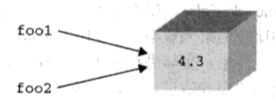
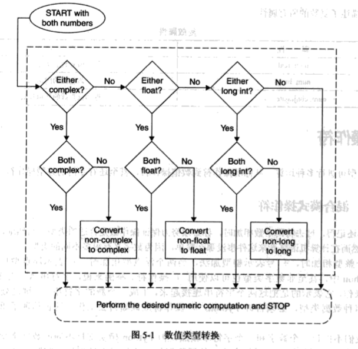

Python简介
什么是Python
Python是一门优雅而健壮的编程语言，它继承了传统编译语言的强大性和通用性，同时也借鉴了简单脚本和解释语言的易用性。它可以帮你完成工作，而且一段时间以后，你还能看明白自己写的这段代码。你会对自己如此快地学会它和它强大的功能感到十分的惊讶，更不用堤你已经完成的工作了。
起源
贵铎.范.罗萨姆（Guido van Rossum）于1989年底始创了Python，那时，他还在荷兰的CWI（Gentrum voor Wiskunde en Information, 国家数学和计算机科学研究院）。1991年初，Python发布了第一个公开发行版。这一切究竟是如何开始的呢？像C、C++、Lisp、Java和Perl一样，Python来自于某个研究项目，项目中的那些程序员利用手边现有的工具辛苦的工作着，他们设想并开发出了更好的解决办法。
快速入门
Python基础
本章主题
- 语句和语法
- 变量赋值
- 标识符和关健字
- 基本风格指南
- 内存管理
- 第一个Python程序
语句和语法
Python语句中有一些基本规则和特殊字符：
- 井号（#）表示之后的字符为Python注释
- 换行（\）是标准的行分隔符（通常一个语句一行）
- 反斜线（\）继续上一行
- 分号（;）将两个语句连接在一行中
- 冒号（:）将代码块的头和体分开
- 语句（代码块）有缩进块的方式体现
- Python文件以模块的形式组织
注释（#）
Python注释语句从#字符开始，注释可以在一行的任何地方开始，解释器会忽略掉该行#之后的所有内容。
继续（\）
Python语句，一般使用换行分陋，也就是说一行一个语句。一行过长的语句可以使用反斜杠（\）分解成几行，如下例：
1 | # check conditions |
三个引号包括下的字符串也可以跨行书写，如下例：
1 | # display a string with triple quotes |
多个语句构成代码组（：）
缩进相同的一组语句构成一个代码块，我们称之代码组。像if、while、def和class这样的复合语句。首行以关键字开始，以冒号（:） 结束，该行之后的一行或多行代码构成代码组。我们将首行及后面的代码组称为一个子句。
代码组由不同的缩进分隔
Python中规定，同一代码组的代码行必须严格左对齐（左边有同样多的空格或同样多的制表符）。
因此核心的风格：缩进四个空格宽度，避免使用制表符
同一行书写多个语句（;)
分号（;）允许你将多个语句写在同一行上，语句之间用分号隔开，而这些语句也不能在这行开始一个新的代码块。这里有一例子：
1 | import sys; x = 'foo' ; sys.stdout.write(x + '\n') |
必须指出一点，同一行上书写多个语句会大大降低代码的可读性，Python虽然允许但不提倡你这么做。
模块
每一个Pyhton脚本文件都可以被当成一个模块。模块以磁盘文件的形式存在。当一个模块变得过大，并且驱动了太多功能的话。就该考虑拆一些代码出来别外建一个模块。模块里的代码可以是一段直接执行的脚本，也可以是一堆类似库函数的代码，从而可以被别的模块导入（import）调用。
变量赋值
Python语言中，等号（=）是主要的赋值运算符。
1 | anInt = -12 |
“多元”赋值
另一种将多个变量同时赋值的方法我们称为多元赋值。这不是官方Python术语，而是我们将”mul-tuple”连在一起自造的。因为采用这种方式赋值时，等号两咪的对象都是元组
1 | x, y, z = 1, 2, 'a string' |
内存管理
到现在为止，你已经看了不少Python代码的例子。我们本节主题是变量和内存管理的细节，包括：
- 变量无须事先声明
- 变量无须指定类型
- 程序员不用关心内存管理
- 变量名会被“回收”
- del语句能够直接释放资源
变量定义
大多数编译型语言，变量在使用前必须先声明，其中C语言更加苛刻：变量声明必须位于代码块的最开始，且在任何其他语句之前。其它语言，像C++和java，允许“随时随地”声明变量，比如，变量声明可以在代码块中间，不过仍然必须在变量被使用前声明变量的名字和类型。在Python中，无需此类显式变量声明语句，变量在第一次被赋值时自动声明。和其他大多数语言一样，变量只有被创建和赋值后才能被使用。
动态类型
还要注意一点，Python中不但变量名无需事先声明，而且也无需类型声明。Python语言中，对象的类型和内存占用都是都是运行时确定的。尽管代码被编译成字节码，Python仍然是一种解释型语言。在创建时，也就是赋值时，解释器会根据语法和右侧的操作数来决定新对象的类型。在对象创建后，一个该对象的应用会被赋值给左侧的变量。
内存分配
作为一个负责任的程序员，我们知道在为变量分配内存时，是在借用系统资源，在用完之后，应该释放借用的系统资源。Python解释器承担了内存管理的复杂任务，这大大简化了应用程序的编写。你只需要关心你要解决的问题，至于底层的事情放心交给Python解释器去做就行了。
引用计数
要保持追踪内存中的对象，Python使用了引用计数这一简单技术。也就是说Pthon内部记录着所有使用中的对象各有多少引用。一个内部跟踪变量，称为一个引用计数器。至于每个对象各有多少个引用，简称引用计数。当对象被创建时，就创建了一个引用计数，当这个对象不再需要时，也就是说，这个对象的引用计数变为0时，它被垃圾回收。
增加引用计数
当对象被创建（将其引用）赋值给变量时，该对象的引用计数就被设置为1.
当同一个对象（的引用）又被赋值给其它变量时，或作为参数传递给函数，方法或类实例时，或者被赋值为一个窗口对象的成员时，该对象的一个新的引用，或者称作别名，就被创建（则该对象的引用计数自动加1）。
请看以下声明：
1 | x = 3.14 |
语句x=3.14创建了一个浮点数对象并将其引用赋值给x。x是第一个引用，因此，该对象的引用计数被设置为1。语句y=x创建了一个指向同一对象的别名y。事实上并没有为Y创建一个新对象，而是该对象的引用计数加了1次（变成了2）。这是对象引用计数增加的方式之一。还有一些其它的方式也能增加对象的引用计数，比如该对象作为参数被函数调用或这个对象被加入到某个容器对象当中时。
总之，对象的引用会被计数，包含如下情况：
- 对象被创建
x = 3.14 - 或另外的别名被创建
y = x - 或被作为参数传递给函数（新的本地引用）
foobar(x) - 或成为容器对象的一个元素
myList = [123, x, 'xyz']
减少引用计数
当对象的引用被销毁时，引用计数会减小。最明显的例子就是当引用离开其作用范围时，这种情况最经常出现在函数运行结束时，所有局部变量都被自动销毁，对象的引用计数也就随之减少。
当变量被赋值给另外一个对象时，原对象的引用计数也会自动减1：
1 | foo = 'xyz' |
当字符中对象被创建并赋值给foo时，它的引用计数是1，当增加了一个别名bar时，引用计数变成了2.不对当foo被重新赋值给整数对象123时，xyz对象的引用计数自动减1，又重新变成了1.
其它造成对象的引用计数减少的方式包括使用del语句删除一个变量，或者当一个对象被移出一个窗口对象时（或该容器对象本身的引用计数变成了0时）。总结一下，一个对象的引用计数在以下情况会减少：
- 一个本地引用离开了其作用范围。比如foobar()函数结束时。
- 对象的别名被显式的销毁
del y # or del x - 对象的一个别名被赋值给其它的对象
x = 123 - 对象被从一个窗口对象中移除
myList.remove(x) - 窗口对象本身被销毁
del myList # or goes out-of-scope
del 语句
Del语句会删除对象一个引用，它的语法是：del obj1[,obj2[,...objN]]
例如，在上例中执行del y会产生两个结果：
- 从现在的名字空间中删除y
- x的引用计数减一
引申一步，执行del x会删除该对象的最后一个引用，也就是该对象的引用计数会减为0，这会导致该对象从此“无法访问”或“无法抵达”。从此该起，该对象就成为垃圾回收机制的回收对象。注意任何追踪或调试程序会给一个对象增加一个额外的引用，这会推迟该对象被回收的时间。
垃圾收集
不再被使用的内存会被一种称为垃圾收集的机制释放。象上面说的，虽然解释器跟踪对象的引用计数，但垃圾收集器负责释放内存。垃圾收集器是一块独立代码，它用来寻找引用计数为0的对象。它也负责检查那些虽然引用计数大于0但也应该被销毁的对象。特定情形会导致循环引用。
一个循环引用发生在当你有至少两个对象互相引用时，也就是说所有的引用都消失时，这些引用仍然存在，这说明只靠引用计数是不够的。Python的垃圾收集器实际上是一个引用计数器和一个循环垃圾收集器。当一个对象的引用计数变为0，解释器会暂停，释放掉这个对象和仅有这个对象可访问（可以达）的其它对象。作为引用计数的补充，垃圾收集器也会留心被分配的总量很大（及未通过引用计数销毁的那些）的对象。在这种情况下，解释器会暂停下来，试图清理所有未引用的循环。
Python对象
Python对象
Python使用对象模型来存储数据。构造任何类型的值都是一个对象。尽管Python通常当成一种“面向对象的编程语言”，但你完全能够写出不使用任何类和实例的实用脚本。不过Python的对象语法和架构鼓励我们使用这些特性，下面让我们仔细研究一下Python对象。
所有的Python对象都拥有三个特性：身份，类型和值
- 身份：每一个对象都有一个唯一的身份标识自己，任何对象的身份可以使用内建函数id()来得到。这个值可以被认为是该对象的内存地址。你极少会用到这个值，也不用太关心它究竟是什么。
- 类型：对象的类型决定了该对象可以保存什么类型的值，可以进行什么样的操作，以及遵循什么样的规则。您可以用内建函数type()查看Python对象的类型。因为在Python中类型也是对象，所以type()返回的是对象而不是简单的字符串。
- 值：对象表示的数据项
上面三个特性在对象创建的时候就被赋值，除了值之外，其他的两个特性都是只读的。对于新式类型和类，对象的类型也是可以改变的，不过并不推荐初学者这样做。
如果对象支持更新操作，那么它的值就可以改变，否则它的值也是只读的。对象的值是滞可以更改被称为对明的可改变性（mutability），我们会在后面的4.7小节中讨论这个问题。只要一个对象还没有被销毁，这些特性就一直存在。
Python有一系列的基本（内建）数据类型，必要时也可以创建自定义类型来满足你对应用程序的需求。绝大多数应用程序通常使用标准类型，对特定的数据存储则通过创建和实例化类来实现。
对象属性
某些Python对象有属性、值或相关联的可执行代码，比如方法（method）。Python用句点（.）标记法来访问属性。属性包括相应对象的名字等，在2.14小节中曾做过介绍。最常用的属性是函数和方法，不过有一些Python类型也有数据属性。含有数据属性的对象包括（但不限于）：类、类实列、模块、复数和文件。
标准类型
- 数字（分为几个子类型，其中有三个是整型）
- Integer 整型
- Boolean 布尔型
- Long integer 长整型
- Floating point real number 浮点型
- Complex number 复数型
- String 字符串
- List 列表
- Tuple 元组
- Dictionary 字典
其他内建类型
- 类型
- Null对象（None）
- 文件
- 集合/固定集合
- 函数/方法
- 模块
- 类
这些是当你做Python开发时可能会用到的一个数据类型。我们在这里讨论Type和None类型的使用，除此之外的其他类型在其他章节中讨论。
类型对象和type类型对象
在本章我们要讨论所有的Python类型，虽然看上去把类型本身也当成对象有点特别，我们还是要在这里提一提。你一定还记得，对象的一系列固有行为和特性（比如支持哪些运算，具有哪些方法）必须事先定义好。从这个角度看，类型正是保存这些信息的最佳位置。描述一种类型所需要的信息不可能用一个字符串来搞定，所以类型不能是一个简单的字符串，这些信息不能也不应该和数据保存在一起，所以我们将类型定义成对象。
下面我们来正式介绍内建函数type()。通过调用type()函数你能够得到特定对象的类型信息。
1 | type(42) |
我们仔细研究一下这个例子，请注意看type函数有趣的返回值。我们得到了一个简洁的输出结果<type 'int'>。不过你应当意识到它并不是一个简单地告诉你42是个整型的字符串。你看到的<type 'int'>实际上是一个类型对象，碰巧它输出了一个字符串来告诉你它是个int型对象。
现在你该问自己了，那么类型对象的类型是什么？来，我们试验一下。
1 | type(type(42)) |
没错，所有类型对象的类型都是type，它也是所有Python类型的根和所有Python标准类的默认元类（metaclass）。你现在有点搞不明白，没关系，随着我们逐步深入地学习类和类型，你就会慢慢理解。
随着Python2.2中类型和类的统一，类型对象在面向对象编程和日常对象使用中扮演着更加重要的角色。从现在起，类就是类型，实例是对应类型的对象。
None, Python的NULL对象
Python有一个特殊的类型，被称作NULL对象或者NoneType，它只有一个值，那就是None。它不支持任何运算也没有任何内建方法。如果非常熟悉C语言，就会知道和None类型最接近的C类型就是void，None类型的值和C的NULL值非常相似（其他类似的对象和值包括Perl的undef和Java的void类型与null值）。
None没有什么有用的属性，它的布尔值总是False。
核心笔记：布尔值
所有标准对象均可用于布尔测试，同类型的对象之间可以比较大小。每个对象天生具有布尔True或False值。空对象、值为零的任何数字或者NULL对象None的布尔值都是False。
下列对象的布尔值是False
- None
- False(布尔类型)
- 所有的值为零的数
- 0（整型）
- 0.0（浮点型）
- 0L（长整型）
- 0.0+0.0j(复数)
- “”（空字符串）
[]（空列表）（）（空元组）{}（空字典）
值不是上面列出来的任何值的对象的布尔值都是True，例如non-empty、non-zero等。用户创建的类实例如果定义了nonzero(nonzero())或length(len())且值为0，那么它们的布尔值就是False。
内部类型
- 代码
- 帧
- 跟踪记录
- 切片
- 省略
- Xrange
我们在这里简要介绍一下这些内部类型，一般的程序员通常不会直接和这些对象打交道。不过为了这一章的完整性，我们还是在这里介绍一下它们。请参阅源代码或者Python的内部文档和在线文档来获得更详尽的信息。
你如果对异常感到迷惑的话，可以告诉它们是用类来实现的。在老版本的Python中，异常是用字符串来实现的。
代码对象
代码对象是编译过的Python源代码片码，它是可执行对象。通过调用内建函数compile()可以得到代码对象。代码对象可以被exec命令或eval()内建函数来执行。在第14章将详细研究代码对象。
代码对象本身不包含任何执行环境信息，它是用户自定义函数的核心，在被执行时动态获得上下文。（事实上代码对象是函数的一个属性）一个函数除了有代码对象属性以外，还有一些其他函数必须的属性，包括函数名、文档字符串、默认参数、及全局命名空间等。
帧对象
帧对象表示Python的执行栈帧。帧对象包含Python解释器在运行时所需要知道的所有信息。它的属性包括指向上一帧的链接，正在被执行的代码对象（参见上文），本地及全局名称空间字典及当前指令等。每次函数调用产生一个新的帧，每一个帧对象者会相应创建一个C栈帧。用到帧对象的一个地方是跟踪记录对象。
跟踪记录对象
当你的代码出错时，Python就会引发一个异常。如果异常未被捕获和处理，解释器就会退出脚本运行，显示类似下面的诊断信息。
1 | Traceback (innermost last): |
当异常发生时，一个包含针对异常的栈跟踪信息的跟踪记录对象被创建。如果一个异常有自己的处理程序，处理程序就可以访问这个跟踪记录对象。
切片对象
当使用Python扩展的切片语法时，就会创建切片对象。扩展的切片语法允许对不同的索引切片操作，包括步进切片、多维切片和省略切片。多维切片语法sequence[start1:end1,start2:end2]，或使用省略号，seequence[…,start1:end1]。切片对象也可以由内建函数slice()来生成。步进切片允许利用第3个切片元素进行步进切片，它的语法为sequence[起始索引:结束索引:步进值]。Python很早就支持扩展步进切片语法了，但直到Python2.3以前都必须依靠C语言的API或JPython才能工作。下面是几个步进切片的例子。
1 | foostr = 'abcde' |
省略对象
省略对象用于扩展切片语法中，起记号作用。这个对象在切片语法中表示省略号。类似Null对象None，省略对象有一个唯一的名字Ellipsis，它的布尔值始终为True。
XRange对象
调秀内建函数xrange()会生成一个Xrange对象，xrange()是内建函数range()的兄弟版本，用于需要节省内存使用或range()无法完成的超大数据集场合。在第8章你可以找到更多关于range()和xrange()的使用信息。
标准类型操作符
对象值的比较
比较操作符用来判断同类型对象是否相等，所有的内建类型均支持比较运算，比较运算返回布尔值True或False。如果你正在使用的是早于Python2.3版本，因为这些版本还没有布尔类型，所以会看到比较结果为整型值1（代表True）或0（代表False）
注意，实际进行的比较运算因类型而异。换言之，数字类型根据数值的大小和符号比较，字符串按照字符序列值进行比较，等等。
1 | 2 == 2 |
不同于很多其他语言，多个比较操作可以在同一行上进行，求值顺序为从左到右。
1 | 3 < 4 < 7 |
我们会注意到比较操作是针对对象的值进行的，也就是说比较的是对象的数值而不是对象本身。在后面的部分我们会研究对象身份的比较。
| 操作符 | 功能 |
|---|---|
| expr1 < expr2 | expr1 小于 expr2 |
| expr1 > expr2 | expr1 大于 expr2 |
| expr1 <= expr2 | expr1 小于等于 expr2 |
| expr1 >= expr2 | expr1 大于等于 expr2 |
| expr1 == expr2 | expr1 等于 expr2 |
| expr1 != expr2 | expr1 不等于 expr2（C风格） |
| expr1 <> expr2 | expr1 不等于 expr2（ABC/Pascal风格） |
Python3.0已经不支持<>，建议你一直使用!=操作符。
对象身份比较
作为对值比较的补充，Python也支持对象本身的比较。对象可以被赋值到另一个变量（通过引用）。因为每个变量都指向同一个（共享的）数据对象，只要任何一个引用发生改变，该对象的其他的引用也会随之改变。
为了方便大家理解，最好先别考虑变量的值，而是将变量名看作对象的一个链接，让我们来看以下三个例子：
例1：foo1和foo2指向相同的对象
1 | foo1 = foo2 = 4.3 |

当你从值的观点看这条语句时，它表现的只是一个多重赋值，将4.3这个值赋给了foo1和foo2这两个变量。这当然是对的，不过它还有另一层含义。事实是一个值为4.3的数字对象被创建，然后这个对象的引用被赋值给foo1和foo2，结果就是foo1和foo2指向同一个对象。图4-1演示了一个对象两个引用。
例2：foo1和foo2指向相同的对象
1 | foo1 = 4.3 |
这个例子非常类似上一个，一个值为4.3的数值对象被创建，然后赋给一个变量，当执行foo2 = foo1时，foo2被指向foo1所指向的同一个对象，这是因为Python通过传递引用来处理对象。foo2就成为原始值4.3的一个新的引用。这样foo1和foo2就都指向了同一个对象。示意图也图4-1一样。
例3：foo1和foo2指向不同的对象
1 | foo1 = 4.3 |
这个例子有所不同。首先一个数字对象被创建，然后赋值给foo1。然后第二个数值对象被创建并赋值给foo2。尽管两个对象保存的是同样大小的值，但事实上系统中保存的都是两个独立的对象，其中foo1是第一个对象的引用，foo2则是第二个对象的引用。上图演示给我们这里有两个不同的对象，尽管这两个对象有同样大小的数值。我们为什么在示意图中使用盒子？没错，对象就像一个装有内容的盒子。娄一个对象被赋值到一个变量，就像在这个盒子上贴了一个标签，表示创建了一个引用。每当这个对象有了一个新的引用，就会在盒子上新贴一张标签。当一个引用被销毁时，这个标签就会被撕掉。当所有的标签都被撕掉时，这个盒子就会被回收。那么，Python是怎么知道这个盒子有多少个标签呢？
每个对象都天生具有一个计数器，记录它自己的引用次数。这个数目表示有多少个变量指向该对象。这也就是我们之前提到的引用计数。Python提供了is和is not操作行来测试两个变量是否指向同一个对象。像下面这样执行一个测试。a is b
这个表达式等价于下面的表达式。id(a) == id(b)
对象身份比较操作符拥有同样的优先级。在下面的例子里，我们创建了一个变量，然后将第二个变量指向同一个对象。
1 | a = [5, 'hat', -9.3] |
is与not标识符都是Python关键字
| 操作符 | 功能 |
|---|---|
| obj1 is obj2 | obj1和obj2是同一个对象 |
| obj1 is not obj2 | obj1和obj2不是同一个对象 |
核心笔记：实践
在上面的例子中，你会注意到我们使用的浮点型而不是整型。为什么会这样？整型对象和字符串对象是不可变对象，所以Python会很高效地缓存它们。它会造成我们认为Python应该创建新对象时，它却没有创建新对象的假象。请看下面例子。
>>> a = 1>>> id(a)8402824
>>> b = 1>>> id(b)8402824
>>> c = 1.0>>> id(c)8651220
>>> d = 1.0>>> id(d)8651204
在上面的例子中，a和b指向了相同的整型对象，但是c和d并没有指向相同的浮点型对象。如果我们是纯粹主义都，我们会希望a与b能和c与d一样，因为我们本意就是为了创建两个整型对象，而不是像b=a这样的结果。
Python仅缓存简单整型，因为它认为在Python应用程序中这些小整型会经常被用到。当我们在写作本书的时候，Python缓存的整型范围是（-1,100），不过这个范围是会改变的，所以请不要在你的应用程序使用这个特性。
Python2.3中决定，在预定义缓存字符串表之外的字符串，如果不再有任何引用指向它，那这个字符串将不会被缓存。也就是说，被缓存的字符串将不会像以前那样永生不灭，对象回收器一样可以回收不再被使用的字符串。从Python1.5起提供的用于缓存字符的内建函数intern()也已经不再推荐使用，即将被废弃。
布尔类型
布尔逻辑操作符and、or和not都是Python关键字，这些操作符的优先级按从高到低的顺序列于下表。not操作符拥有最高优先级，只比所有比较操作符低一级。and和or操作符则相应地再低一级。
| 操作符 | 功能 |
|---|---|
| not expr | expr的逻辑非（否） |
| expr1 and expr2 | expr1和expr2的逻辑与 |
| expr1 or expr2 | expr1和expr2的逻辑或 |
1 | x, y = 3.1415926536, -1024 |
前面我们提到过Python支持一个表达式进行多种比较操作，其实这个表达式本质上是由多个隐式的and连接起来的多个表达式。
1 | 3 < 4 < 7 # 与"(3 < 4) and (4 < 7)"一样 |
标准类型内建函数
除了这些运算符，我们刚才也看到，Python提供了一些内建函数用于这些基本对象类型：cmp(), repr(), str(), type()和等同于repr()函数的反引号（``）运算符。
| 函数 | 功能 |
|---|---|
| cmp(obj1, obj2) | 比较obj1和obj2，根据比较结果返回整数i i<0 if obj1<obj2 i>0 if obj1>obj2 i==0 if obj1==obj2 |
| repr(obj) 或 `obj` | 返回一个对象的字符串表示 |
| str(obj) | 返回对象适合可读性好的字符串表示 |
| type(obj) | 得到一个对象的类型， 并返回相应的type对象 |
type()
在Python2.2以前，type()是内建函数，不过从那时起它变成了一个“工厂函数”。现在你仍然可以将type()仅仅当成一个内建函数来看，type()用法如下：type(object)
type()接受一个对象做为参数，并返回它的类型。它的返回值是一个类型对象。
1 | type(4) #int type |
在上面的例子里，我们通过内建函数type()得到一个整型和一个字符串的类型；为了确认一下类型本身也是类型，我们对type()的返回值再次调用type()。注意type()有趣的输出，它看上去不像一个典型的Python数据类型，比如一个整型或一个字符串，一些东西被一个大于号和一个小号包裹着。这种语法是为了告诉你它是一个对象。每个对象都可以实现一个可打印的字符串表示。不过并不总是这样，对那些不容易显示的对象。每个对象都可以实现一个可打印的字符串表示。不过并不总是这样，对那些不容易显示的对象来说，Python会以一个相对标准的格式表示这个对象，格式通常是这种形式：<object_something_or_another>，以这种形式显示的对象通常会提供对象类别、对象id或位置，或者其他合适的信息。
cmp()
内建函数cmp()用于比较两个对象obj1和obj2，如果obj1小于obj2，则返回一个负整数，如果obj1大于obj2则返加一个正整数，如果obj1等于obj2，则返回0。它的行为非常类似于C语言的strcmp()函数。比较是在对象之间进行的，不管是标准类型对象还是用户自定义对象。如果是用户自定议对象，cmp()会调用该类的特殊方法__cmp__()。在第13章会详细介绍类的这些特殊方法。下面是几个使用cmp()内建函数的对数值和字符串对象进行比较的例子。
1 | a, b = -4, 12 |
str()和repr()及``运算符
内建函数str()和repr()或反引号运算符（``）可以方便的以字符串方式获取对象的内容、类型、数据属性信息。str()函数得于的字符串可读性如，而repr（）函数得到的字符串通常可以用来重新获得该对象，通常情况下obj==eval(repr(obj))这个等式是成立的。这两个函数授受一个对象做为其参数，返回适当的字符串。
1 | str(4.53-2j) |
尽管str()，repr()和``运算在特性和功能方面都非常相似，事实上repr()和``做的是完全一样的事情，它们返回的是一个对象“官方”字符串表示，也就是说绝大多数情况下可以通过求值运算（eval()）重新得到该对象，但str()则有所不同。str()致力于生成一个对象的可读性好的字符串表示，它返回结果通常无法用于eval()求值，但很适用于print语句输出。
也就是说repr()输出对Python比较友好，而str()的输出对人比较友好。虽然如此，很多情况下这三者输出仍然都是完全一样的。
<%note primary%>
核心笔记：为什么我们有了repr()不需要``
在Python学习过程中，你偶尔会遇到某个操作符和某个函数是做同样一件事情。这所以如此是因为某些场合函数会比操作符更适合使用。举个例子，当处理类似函数这样的可执行对象或根据不同的数据项调用不同的函数处理时，函数就比操作符用起来方便。另一个例子就是双星号（）乘方运算和POW()内建函数，xy和pow(x,y)执行的都是x的y次方需要注意一点是python社区不鼓励使用``
<%endnote%>
type()和isinstance()
Python不支持方法或函数重载，因此你心须自己保证调用的就是你想要的函数或对象。幸运的是，我们前面提到的type()内建函数可以帮助你确认这一点。一个名字里究竟保存的是什么？相当多，尤其是这是一个类型的名字时。确认接收到的类型对象的身份有很多时候都是很有用的。为了达到此目的，Python提 供了一个内建函数type()。type()返回任意Python对象的类型，而不局限于标准类型。让我们通过交互式解释器来看几个使用type()内建函数返回多种对象类型的例子。
1 | type('') |
Python2.2统一了类型和类，如果你使用的是低于Python2.2的解释器，你可能看到不一样的输出结果。
1 | type('') |
除了内建函数type()，还有一个有用的内建函数叫做ininstance()。我们会在第13章（面向对象编程）正式研究这个函数，不过在这里我们还是要简要介绍一下如何利用它来确认一个对象的类型。
1. 举例
在例4.1中我们提供了一段脚本来演示在运行时环境使用ininstance()和type()函数。随后我们讨论type()的使用，以及怎么将这个例子移植为改用isinstance()。运行typechk.py，我们会得到以下输出。
-69 is a number of type: int
9999999999999999999 is a number of type: long
98.6 is a number of type: float
(-5.2+1.9j) is a number of type: complex
xxx is not a number at all!!
例4.1 检查类型（typechk.py）
函数displayNumType()接受一个数值参数，它使用内建函数type()来确认数值的类型（或不是一个数值类型）
1 | #!/usr/bin/env python |
2. 例子进阶
（1）原始：这个完成同样功能的函数与本书第一版中的例子已经大不相同。
1 | def displayNumType(num): |
由于Python奉行简单但是比较慢的方式，所以我们必须这么做，看一眼我们原来的条件表达式：if type(num) == type(0)...
（2）减少函数调用的次数
如果我们仔细研究一下我们的代码，会看到我们调用了两次type()。要知道每次调用函数都会付出性能代价，如果我们能减少函数的调用次数，就会提高程序的性能。
利用在本章我们前面提到的types模块，我们还有另一种比较对象类型的方法，那就是将检测得到的类型与一个已知类型进行比较。如果这样，我们就可以直接使用type对象而不用每次计算出这个对象来。那么我们现在修改一下代码，改为只调用一次type()函数。
1 | import types |
(3) 对象值比较VS对象身份比较
在这一章的前面部分我们讨论了对象的值比较和身份比较，如果你了解其中的关键点，你就会发现人们的代码在性能上还不是最优的。在运行时期，只有一个类型对象来表示整型类型。也就是说，type(0)，type(42)，type(-100)都是同一个对象<type ‘int’>（types.IntType也是这个对象）。
如果它们是同一个对象，我们为什么还要浪费时间去获得并比较它们的值呢（我们已经知道它们是相同的了）？所以比较对象本身是一个更好地方案。下面是改进后的代码。if type(num) is types.IntType... # or type(0)
这样做有意义吗？我们用对象身份的比较来替代对象值的比较。如果对象是不同的，那意味着原来的变量一定是不同类型的（因为每一个类型只有一个类型对象），我们就没有必要去检查（值）了。一次这样的调用可能无关紧要，不过当很多类似的代码遍布在你的应用程序中的时候，就有影响了。
（4）减少查询次数
这是一个对前一个例子较小的改进，如果你的程序像我们的例子中做很多次比较的话，程序的性能就会有一些差异。为了得到整型的对象类型，解释器不得不首先查找types这个模块的名字，然后在该模块的字典中查找IntType。通过使用from-import，你可以减少一次查询。
1 | from types import IntType |
(5) 惯例和代码风格
Python2.2对类型和类的统一导致ininstance()内建函数的使用率大大增加。我们将在第13章（面向对象编程）正式介绍ininstance()，在这里我们简单浏览一下。
这个布尔函数接受了一个或多个对象作为其参数，由于类型和类现在都是一回事，int现在既是一个类型又是一个类。我们可以使用ininstance()函数来让我们的if语句更方便，并具有更好的可读性。
1 | if isinstance(num, int)... |
在判断对象类型时也使用ininstance()已经被广为接受，我们上面的typechk.py脚本最终与改成了使用ininstance()函数。值得一提的是，ininstance()接受一个类型对象的元组作为参数，这样我们就不必像使用type()时那样写一堆if-elif-else判断了。
Python类型操作符和内建函数总结
下表列出了所有操作符和内建函数，其中操作符顺序是按优先级从高到低排列的。同一种灰度的操作符拥有同样的优先级。注意在operator模块中有这些（和绝大多数Python）操作符相应的同功能的函数可供使用。
| 操作符/函数 | 描述 | 结果 |
|---|---|---|
| cmp(obj1, obj2) | 比较两个对象 | int |
| repr(obj) | 对象的字符串表示 | str |
| str(obj) | 对象的字符串表示 | str |
| type(obj) | 检测对象的类型 | type |
| < | 小于 | bool |
| > | 大于 | bool |
| <= | 小于或等于 | bool |
| >= | 大于或等于 | bool |
| == | 等于 | bool |
| != | 不等于 | bool |
| <> | 不等于 | bool |
| is | 是 | bool |
| is not | 不是 | bool |
| not | 逻辑反 | bool |
| and | 逻辑与 | bool |
| or | 逻辑或 | bool |
类型工厂函数
Python2.2统一了类型和类，所有的内建类型现在也都是类，在这基础之上，原来的所谓内建转换函数像int()、type()、list()等，现在都成了工厂函数。也就是说虽然他们看上去有点像函数，实质上他们是类。当你调用它们时，实际上是生成了该类型的一个实例，就像工厂生产货物一样。
下面这些大家熟悉的工厂函数在之前的Python版里被称为内建函数。
- int(), long(), float(), complex()
- str(), unicode(), basestring()
- list(), tuple()
- type()
以前没有工厂函数的其他类型，现在也都有了工厂函数。除此之外，那些支持新式类的全新的数据类型，也添加了相应的工厂函数。下面列出了这些工厂函数。
- dict()
- bool()
- set(), frozenset()
- object()
- classmethod()
- staticmethod()
- super()
- property()
- file()
标准类型的分类
如果让我们最啰嗦地描述标准类型，我们也许会称它们是Python的“基本内建数据对象原始类型”。
- “基本”是指这些类型都是Python提供的标准或核心类型。
- “内建”是由于这些类型是Python默认就提供的。
- “数据”是因为他们用于一般数据存储。
- “对象”是因为对象是数据和功能的默认抽象。
- “原始”是因为这些类型提供的是最底层的粒度数据存储。
- “类型”是因为他们就是数据类型。
不过，上面这些描述实际上并没有告诉你每个类型如何工作，以及它们能发挥什么作用。事实上，几个类型共享某一些的特性，比如功能的实现手段，另一些类型则在访问数据值方面有一些共同之处。我们感兴趣的还有这些类型的数据如何更新，以及它们能提供什么样的存储。有3种不同的模型可以帮助我们对基本类型进行分类，每种模型都展示给我们这些类型之间的相互关系。这些模型可以帮助我们更好的理解类型之间的相互关系以及他们的工作原理。
存储模型
我们对类型进行分类的第一种方式，就是看看这种类型的对象能保存多少个对象。Python的类型，就像绝大多数其他语言一样，能容纳一个或多个值。一个能保存单个字面对象的类型，我们称它为原子或标量存储；那些可容纳多个对象的类型，我们称之为容器存储（容器对象有时会在文档中被称为复合对象，不过这些对象并不仅仅指类型，还包括类似类实例这样的对象）。容器类型又带来一个新问题，那就是它是否可以容纳不同类型的对象。所有的Python容器对象都能够容纳不同类型的对象。下表按存储模型对Python的类型进行了分类。
字符串看上去像一个容器类型，因为它“包含”字符（并且经常多于一个字符），不过由于Python并没有字符类型，所以字符串是一个自多包含的文字类型。
| 分类 | Python类型 |
|---|---|
| 标量/原子类型 | 数值（所有的数值类型），字符串（全部是文字） |
| 容器类型 | 列表、元组、字典 |
更新模型
另一种对标准类型进行分类的方式就是，针对每一个类型问一个问题：“对象创建成功之后，它的值可以进行更新吗？”在前面我们介绍Python数据类型时曾经提到，某些类型允许他们的值进行更新，而另一些则不允许。可变对象允许他们的值被更新，而不可变对象则不允许他们的值被更改。下表列出了支持更新和不支持更新的类型。
看完这个表之后，你可能马上冒出一个问题：“等等，你说数值和字符串对象是不可改变的？”看看下面的例子！”
1 | x = 'Python numbers and strings' |
“在我看来，这可不像是不可变对象的行为！”没错，是这样，不过你还没有搞清楚幕后的真相。上面的例子中，事实上是一个新的对象被创建，然后它取代了旧对象。就是这样，请多读一遍这段。
新创建的对象被关联到原来的变量名，旧对象被丢弃，垃圾回收器会在适当的时机回收这些对象。你可以通过内建函数id()来确认对象的身份在两次赋值前后发生了变化。
| 分类 | Python类型 |
|---|---|
| 可变类型 | 列表、字典 |
| 不要变类型 | 数字、字符串、元组 |
下面我们在上面的例子里加上id()调用，就会清楚地看到对象实际上已经被替换了。
1 | x = 'Python numbers and strings' |
你看到的身份数字很可能和我不同，每次执行这些数字也会不同，这是正常的。这个数字与该对象当时分配的内存地址密切相关。因此不同的机器、不同的妨行时间都会生成不同的对象身份。另一类对象，列表可以被修改而无须替换原始对象，请看下面的例子。
1 | aList = ['ammounia', 83, 85, 'lady'] |
注意列表的值无论怎么改变，列表的ID始终保持不变。
访问模型
尽管前面两种模型分类方式在介绍Python时都很有用，它们还不是区分数据类型的首要模型。对这种目的，我们使用访问模型。也就是说根据访问我们存储的数据方式对数据类型进行分类。在访问模型中共有三种访问方式：直接存取、顺序和映射。下表按访问方式对数据类型进行了分类。
对非容器类型可以直接访问。所有的数值类型都归到这一类。
序列类型是指容器内的元素按从0开始的索引顺序访问。一次可以访问一个元素或多个元素，也就是大家所了解的切片（slice）。字符串、列表和元组都归到这一类。我们前面提到过，Python不支持字符类型，因此，虽然字符串是简单文字类型，但因为它有能力按照顺序访问子字符串，所以也将它归到序列类型。
映射类型类似序列的索引属性，不过它的索引并不使用顺序的数字偏移量取值，它的元素无序存放，通过一个唯一的链来访问，这就是映射类型，它容纳的是哈希键-值对的集合。
我们在以后的章节中将主要使用访问模型，详细介绍各种访问模型的类型，以及某个分类的类型之间有哪些相同之处（比如操作符和内建函数），然后讨论每种Python标准类型。所有类型的特殊操作符、内建函数及方法都会在相应的章节特别说明。
为什么要对同样的数据类型再三分类呢？首先，我们为什么要分类？因为Python提供了高级的数据结构，我们需要将那些原始的类型和功能强大的扩展类型区分开来。另一原因就是这有助于搞清楚某种类型应该具有什么行为。举例来说，如果我们基本上不用问自己“列表和元组有什么区别？”或“什么是可变类型和不可变类型？”这些问题的时候，我们也就达到了目的。最后，某些分类中的所有类型具有一些相同的特性。一个优秀的工匠应该知道他或她的工具箱里都有哪些宝贝。
| 分类 | Python类型 |
|---|---|
| 直接访问 | 数字 |
| 顺序访问 | 字符串、列表、元组 |
| 映射访问 | 字典 |
| 数 据 类 型 | 存 储 模 型 | 更 新 模 型 | 访 问 模 型 |
|---|---|---|---|
| 数字 | 标量 | 不可更改 | 直接访问 |
| 字符串 | 标量 | 不可更改 | 顺序访问 |
| 列表 | 容器 | 可更改 | 顺序访问 |
| 元组 | 容器 | 不可更改 | 顺序访问 |
| 字典 | 容器 | 可更改 | 映射访问 |
另一个问题就是，“为什么要用这么多不同的模型或从不同的方面来分类？”所有这些数据类型看上去是很难分类的。它们彼此都有着错综复杂的关系，所有类型的共同之处最好能揭示出来，而且我们还想揭示每种类型的独到之处。没有两种类型横跨所有的分类（当然，所有的数值子类型做到了这一点，所以我们将它们归纳到一类当中）。最后，我们确信搞清所有类型之间的关系会对你的开发工作有极大的帮助。你对每种类型的了解越多，你就越能在自己的程序中使用恰当的类型以达到最佳的性能。
我们提供了一个汇总表（表4.9）。表中列出了所有的标准类型和我们使用的三个模型，以及每种类型归入的分类。
不支持的类型
在我们深入了解各个标准类型之前，我们在本章的结束列出了Python目前还不支持的数据类型
- char或byte
- 指针
- int vs short vs long
- float vs double
练习
4-1. Python对象。与所有Python对象有关的三个属性是什么？请简单的描述一下。
Python对象的三个属性是：ID（身份）、Type（类型）、值（值），身份通过内建函数id()得到，类型通过type()返回对象，除了值以外其余两项都是只读的。
4-2. 类型。不可更改（immutable）指的是什么？Python的哪些类型是可更改的（mutable）,哪些不是？
可变类型：列表、字典；不可变类型：数字、字符串、元组
4-3. 类型。哪些Python类型是按照顺序访问的，它们和映射类型的不同是什么？
按顺序访问的类型：字符串、列表、元组，映射类型：字典。映射类型容纳的是哈希键-值对的集合，而序列类型是容器内元素按从0开始的索引顺序访问。
4-4. type()。内建函数type()做什么？type()返回的对象是什么？
通过调用type()函数你能够得到特定对象的类型信息。所有类型对象的类型都是type，它也是所有Python类型的根和所有Python标准类的默认元类。
4-5. str()和repr()。内建函数str()与repr()之间的不同是什么？哪一个等价于反引号（``）操作符？
str()与repr()都是标准类型内建函数，它们都返回一个对象的字符串表示。str()在Python2.2中更改了工厂函数。str()返回一个可打印的字符串。repr()可以通过求值运算eval()来重新得到该对象。repr()等价于反引号（``）操作符。
4-6. 对象相等。你认为type(a) == type(b)和type(a) is type(b)之间的不同是什么？为什么会选择后者？函数isinstance()与这有什么关系？
type(a) == type(b) 等价于 type(a) is type(b)，选择后者可以减少函数的调用及查询速度。
函数isinstance()用来确认一个对象类型，用来判断对象类型，它可以接受一个类型对象的元组做为参数。type()用于检测对象类型。
4-7. 内建函数dir()。在第2章的几个练习中，我们用内建函数dir()做了几个实验，它接受一个对象，然后给出相应的属性。请对types模块做相同的实验。记下你熟悉的类型，包括你对这些类型的认只，然后记下你还不熟悉的类型。在学习Python的过程中，你要逐步将“不熟悉”的类型变得“熟悉”起来。
1 | a = 10 |
4-8. 列表和元组。列表和元组的相同点是什么？不同点是什么？
列表与元组都是由索引为0开始标记数据类型，列表可以改写，元组不可以改写
4-9. 实践，给以下赋值：
a = 10
b = 10
c = 100
d = 100
e = 10.0
f = 10.0
请问下面各表达式的输出是什么？为什么？
(a) a is b
(b) c is d
1 | a = 10 |
数字
- 数字简介
- 整型
- 布尔型
- 标准整型
- 长整型
- 浮点型实数
- 复数
- 操作符
- 内建函数
- 其他数字类型
- 相关模块
本章的主题是Python中的数字。我们会详细介绍每一种数字类型，它们适用的各种操作符，以及用于处理数字的内建函数。在本章的末尾，我们简单介绍了几个标准库中用于处理数字的模块。
数字简介
数字提供了标量贮存和直接访问。它是不可更改类型，也就是说变更数字的值会生成新的对象。当然，这个过程无论对程序员还是对用户都是透明的，并不会影响软件的开发方式。
Python支持多种数字类型：整型、长整型、布尔型、双精度浮点型、十进制浮点型和复数。
如何创建数值对象并用其赋值（数字对象）
创建数值对象和给变量赋值一样同样简章。
1 | anInt = 1 |
如何更新数字对象
通过给数字对象（重瓣）赋值，您可以“更新”一个数值对象。我们之所以给更新这两个字加上引号，是因为实际上并没有更新该对象的原始数值。这是因为数值对象是不可改变对象。Python的对象模型与常规对象模型有些不同。你所认为的更新实际上是生成了一个新的数值对象，并得到它的引用。
在学习编程的过程中，我们一直接受这样的教育：变量就像一个盒子，里面装着变量的值。在Python中，变量更像一个指针指向装变量值的盒子。对不可改变类型来说，你无法改变盒子的内容，你可以将指针指向一个新盒子。每次将另外的数字赋给变量的时候，实际上是创建了一个新的对象并把它赋给变量（不仅仅是数字，对于所有的不可变类型，都是如此）。
如何删除数字对象
按照Python的法则，你无法真正删除一个数值对象，你仅仅是不现使用它而已。如果你确实想删除一个数值对象的引用，使用del语句即可。删除对象的引用之后，你就不能再使用这个引用（变量名），除非你给它赋一个新值。如果试图使用一个已经被删除的对象引用，会引发NameError异常。
1 | del anInt |
好了，既然你已经了解如何创建和更新数值对象，那么来看一下Python的4种主要数字类型。
整型
Python有几种整型类型。布尔类型是只有两个值的整型。常规整型是绝大多数现代系统都能识别的整型。Python也有长整型类型。然而，它表示的数值大小远超过C语言的长整型。下面我们先来了解一下这些类型，然后再来研究那些用于Python整型类型的操作符和内建函数。
布尔型
Python从版本2.3开始支持布尔类型。该类型的取值范围只有两个值，也就是布尔值True和布尔值False。我们会在本章的末尾一节5.7.1详细讲解布尔对象。
标准整型
Python的标准整型类型是最通用的数字类型。在大多数32位机器上，标准整型类型的取值范围是$-2^{31}$到$2^{31}-1$，也就是-2 147 483 648 ~ 2 147 483 647。如果在64位机器上使用64位编译器编译Python，那么在这个系统上的整型将是64位。下面是一些Python标准整型类型对象的例子。0101 84 -237 0x80 017 -680 -0x92
Python标准整型等价于C的（有符号）长整型。整型一般以十进制表示，但是Python也支持八进制或十六进制来表示整型。如果八进制整型以数字“0”开始，十六进制整型则以“0x”或“0X”开始。
长整型
关于Python长整型类型我们必须要提的是，请不要将它和C或其他编译型语言的长整型类型混淆。那些语言的长整型典型的取值范围是32位或64位。Python的长整型类型能表达的数值仅仅与你的机器支持的（虚拟）内存大小有关，换句话说，Python能轻松表达很大的整型。
长整型类型是标准整型类型的超集，当你的程序需要使用比标准整型类型更大的整型时，长整型类型就有用武之地了。在一个整型值后面加个L（大写或小写都可以），表示这个整型是长整型。这个整型可以是十进制、八进制、或十六进制。下面是一些长整型的例子。1638L -0x4E8L 017L-21474836481 052144364L 2997924581 0xDECADEDEADBEEFBADFEEDDEAL -5432101234L
核心风格：用大写字母“L”表示长整型
尽管Python也支持用小写字母L标记长整型，但是我们郑重推荐您仅使用大写的“L”，这样能有效避免数字1和小写L的混淆。Python在显示长整型类型数值的时候总是用大写“L”，目前整型和长整型正在逐渐缓慢的统一，您只有在对长整型调用repr()函数时才有机会看到“L”，如果对长整型对象调用str()函数就看不到L。举例如下：
1 | aLong = 9999999999l |
整型和长整型的统一
这两种整型类型正在逐渐统一为一种。在Python2.2以胶，标准整型类型对象超出取值范围会溢出（比如上面提到的大于$2^{32}$的数），但是从Python2.2以后就再也没有这样的错误了。
1 | # Python 2.1 |
不远的将来，至少普通用户会几乎感觉不到长整型的存在。必要时整型会悄悄自动转换为长整型。
双精度浮点型
Python中的浮点型类似C语言中的double类型，是双精度浮点型，可以用直接的十进制或科学计数法表示。每个浮点型占8个字节（64位），完全遵守IEEE754号规范（52M/11E/1S），其中52个位用于表示底，11个位用于表示指数（可表示的范围大约是$\pm10^{308.25}$）,剩下的一个位表示符号。这看上去相当完美，然而，实际精度依赖于机器架构和创建Python解释器的编译器。
浮点型值通常都有一个小数点和一个可选的后缀e(大写或小写，表示科学计数法)。在e和指数之间可以用正（+）或负（-）表示指数的正负（正数的话可以省略符号）。下面是一些典型的浮点型值的例子。0.0 -777. 1.6 -5.555567119 96e3 * 1.04.3e25 9.384e-23 -2.172818 float(12) 1.0000000013.1416 4.2E-10 -90. 6.022e23 -1.609E-19
复数
在很久以前，数学家们被下面这样的等式困扰。
$$x^2 = -1$$
这是因为任何实数（无论正数还是负数）乘以自己总是会得到一个非负数。一个数怎么可以乘以自己却得到一个负数？没有这样的实数存在。就这样，直到18世纪，数学家们发明了一个虚拟的数i（或者是j，看你读的是哪本教科书了）。
$$j=\sqrt{-1}$$
基于这个特殊的数（或者称之为概念），数学从此有了一个新的分支。现在虚数已经广泛应用于数值和科学计算应用程序中。一个实数和一个虚数的组合构成一个复数。一个复数是一对有序浮点型$(x,y)$，表示为$x+yj$,其中x是实数部分，y是虚数部分。
复数渐渐在日常运算、机械、电子等行业获得了广泛的应用。由于一些研究人员不断重复制造用于复数运算的工具，在很久以前的Python1.4版本里，复数终于成为一个真正Python数据类型。
下面是Python语言中的有关复数的几个概念。
- 虚数不能单独存在，它们总是和一个值为0.0的实数部分一起来构成一个复数。
- 复数由实数部分和虚数部分构成。
- 表示虚数的语法：real+imagj
- 实数部分和虚数部分都是浮点型
- 虚数部分必须有反缀j或J
下面是一些复数的例子：64.375+1j 4.23-8.5j 0.23-8.55j 1.23e-045+6.7e+089j6.23+1.5j -1.23-875J 0+1j 9.80665-8.31441J -.0224+0j
复数的内建属性
复数对象拥有数据属性（参见4.1.1节），分别为该复数的实部和虚部。复数还拥有conjugate方法，调用它可以返回该复数的共轭复数对象（两头牛背上的架子称为轭，轭使两头牛同步行走。共轭即为按一定的规律相配的一对–译者注）。
1 | aComplex = -8.333-1.47j |
| 属 性 | 描 述 |
|---|---|
| num.real | 该复数的实部 |
| num.imag | 该复数的虚部 |
| num.conjugate() | 返回该复数的共轭复数 |
操作符
数值类型可进行多种运算。从标准操作符到数值操作符，甚至还有专门的整型操作符。
混合模式操作符
也许你还记得，过去将两个数相加时，你必须努力保证操作数是合适的类型。自然地，加法总是使用+号，然而在计算机语言看来这件事没那么简单，因为数字又有很多不同的类型。
当两个整型相加时，+号表示整型加法，当两个浮点型相加时，+表示浮点型加法，依此类推。在Python中，甚至非数字类型也可以使用+操作符。举例来说，字符串A+字符串B并表示加法操作，它表示的是所这两个字符串连接起来，生成一个新的字符串。关键之处在于支持+操作符的每种数据类型，必须告诉Python，+操作符应该如何去工作。这也体现了重载概念的具体应用。
虽然我们不能让一个数字和一个字符串相加，但Python确实支持不同的数字类型相加。当一个整型和一个浮点型相加时，系统会决定使用整型加法还是浮点型加法（实际上并不存在混合运算）。Python使用数字类型强制转换的方法来解决数字类型不一致的问题，也就是说它会强制将一个操作数转换为同另一个操作数相同的数据类型。这种操作不是随意进行的，它遵循以下基本规则。
首先，如果两个操作数都是同一种数据类型，没有必须进行类型转换。仅当两个操作数类型不一致时，Python才会检查一个操作数是否可以转换为另一类型的操作数。如果可以，转换它并返回转换结果。由于某些转换是不可能的，比如将一个复数转换为非复数类型，将一个浮点型转换为整型等，因此转换过程必须遵守几个规则。
要将一个整型转换为浮点型，只要在整型后面加个“.0”就可以了。要将一个非复数转换为复数，则只需要要加上一个“0j”的虚数部分。这些类型转换的基本原则是：整型转换为浮点型，非复数转换为复数。在Python语言参考中这样描述coerce()方法：
- 如果有一个操作数是复数，另一个操作数被转换为复数
- 否则，如果有一个操作数是浮点型，另一个操作数被转换为浮点型
- 否则，如果有一个操作数是长整型，另一个操作数被转换为长整数
- 否则，两者必然都是普通整型，无须类型转换（参见下文中的示意图）
图5-1的流程图阐释了强制转换的规则。数字类型之间的转换是自动进行的，程序员无须自己编码处理类型转换。不过在确实需要明确指定对某种数据类型进行特殊类型转换的场合，Python提供了coerce()内建函数来帮助你实现这种转换（见5.6.2小节）
下面演示一下Python的自动数据类型转换。为了让一个整型和一个浮点型相加，必须使二者转换为同一类型。因为浮点型是超集，所以在运算开始之前，整型必须强制转为一个浮点型，运算结果也是浮点型。
1 | 1 + 4.5 |

标准类型操作符
第4章中讲到的标准操作符都可以用于数值类型。上文中提到的混合模式运算问题，也就是不同数据类型之间的运算，在运算之前，Python内部会将两个操作数转换为同一数据类型。下面是一些数字标准运算的例子。
1 | 5.2 == 5.2 |
算术操作符
Python支持单目操作符正号（+）和负号（-）；双目操作符+、-、*、/、%和**，分别表示加法、减法、乘法、除法、取余和幂运算。从Python2.2起，还增加了一种新的整除操作符//。
1. 除法
拥有C背景的程序员一定熟悉传统除法–也就是说，对整型操作数，会执行“地板除”（floor，取比商小的最大整型。例好5除以2等于2.5，其中“2”就称为商的“地板”，即“地板除”的结果。本书中使用“地板除”的说法是为了沿用原作者的风格，译者注）。对浮点操作数会执行真正的除法。然而，对第一次学编程的人或者那些依赖精确计算的人来说，可能就需要多次调整代码才能得到自己想要的结果。
在未来的Python版本中，Python开发小组已经决定改变/操作符的行为。/的行为将变更为真正的除法，会增加一种新的运算来表示地板除。下面我们总结一下Python现在的除法规则，以及未来的除法规则。
传统除法
如果是整型除法，传统除法会舍去小数部分，返回一个整型（地板除）。如果操作数之一是浮点型，则执行真正的除法。包括Python语言在内的很多语言都是这种行为。请看下面的例子。
1 | 1 / 2 |
真正的除法
除法运算总是返回真实的商，不管操作数是整型还是浮点型。在未来版本的Python中，这将是除法运算的标准行为。现阶段通过执行from__future__import division指令，也可以做到这一点。
1 | from __future__ import division |
地板除
从Python2.2开始，一个新的操作符//已经被增加进来，以执行地板除：//除法不管操作数为何种数值类型，总是舍去小数部分，返回数字序列中比真正的商小的最接近的数字。
1 | 1 // 2 |
关于除法运算的变量，支持的人和反以的人几乎一样多。在些人认为这种变化是错误的，有些人则不想修改自己的现有代码，而剩下的人则想要真正的除法。
之所以会有这种变化是因为Python的核心开发团队认为Python的除法运算从一开始就设计失误。特别是，随着Python的逐渐发展，它已经成为那些从未接触过地板除的人们的首先学习语言。Python语言的创始人在他的“What’s New in Python2.2”一文中讲到：
1 | def velocity(distance, totalTime): |
你可能会说，只要有一个参数为浮点型这个函数就能正常工作。像上面提到的那样，要确保它能正常工作需要强制将参数转换为浮点类型，也就是rate = float(distance) / float(totalTime)。将来除法将转变为真正的除法，上面的代码可以无需要更改正常工作。需要地板除的地方只需要改变为两个连续的除号。
是的，代码会受一些影响，Python团队已经创作了一系列脚本来帮助你转换旧代码，以确保它能适应新的除法行为。而且对那些强烈需要某种除法行为的人来说，Python解释器提供了Qdivision_style启动参数。-Qnew执行新的除法行为，-Qold则执行传统除法行为（默认为Qold）。你也可以帮助你的用户使用-Qwarn或-Qwarnall参数度过过渡时期。
关于这次变化的详细信息可以参考PEP238。如果你对这场论战感兴趣，也可以翻阅2001年的comp.lang.python归档。表5.2总结了除法操作符在不同Python版本中的行为差异。
| 操 作 符 | 2.1.x 及更早版本 | 2.2及更新版本 （No import division） |
2.2及更新版本 (import of division) |
|---|---|---|---|
| / | 传统除 | 传统除 | 真正除 |
| // | 无 | 地板除 | 地板除 |
2. 取余
整型取余相当容易理解，浮点型取余就略复杂些。
商取小于等于精确值的最大整型的乘积之差。即：x-(math.floor(x/y)*y) 或者
$$x-\left[\cfrac{x}{y}\right]\times y$$
对于复数，取余的定义类似于浮点型，不同之处在于商仅取其实数部分，即x-(math.floor((x/y).real)*y)。
3. 幂运算
幂运算操作符和一元操作符之间的优先级关系比较特别：幂运算操作符比其左侧操作数的一元操作符优先级低，比其右侧操作数的一元操作符的优先级高，由于这个特性你会在算术操作符表中找到两个**。下面举几个例子：
1 | 3 ** 2 |
第2种情况下解释器先计算32再取其相反数，我们需要给“-3”加上括号来得到我们希望的结果。最后一个例子，结果是4(-1)，这是按照规定的优先级获得的结果。
注意1/4作为整型除法结果是0所以以整型为底进行负数指数运算会引发一个negative power（负数指数）异常。
1 | 4 ** -1 |
4. 总结
表5.3总结了所有的算术操作符，从上到下，计算优先级依次降低。这里列出的所有操作符都比即将在5.5.4小节讲到的位操作符优先级高。
| 算术操作符 | 功 能 |
|---|---|
| expr1 ** expr2 | 表达式1表达表达式2结果 |
| +expr | 结果符号不变 |
| -expr | 对结果会号取负 |
| expr1 ** expr2 | 表达式1表达表达式2结果 |
| expr1 * expr2 | 表达式1乘以表达式2 |
| expr1/expr2 | 表达式1除以表达式2（传统除或真正除） |
| expr1//expr2 | 表达式1地板除以表达式2 |
| expr1%expr2 | 表达式1对表达式2取余 |
| expr1+expr2 | 表达式1加表达式2 |
| expr1-expr2 | 表达式1减表达式2 |
下面是更多Python数值运算的例子：
1 | -442 - 77 |
注意指数操作符的优先级高于连接实部和虚部的+号操作符。就上面最后一个例子来说，我们人为的加上了括号，这就改变运算顺序，从而得到我们想要的结果。
位操作符（只适用于整型）
Python整型支持标准位运算：取反（～），按位与（&）、或（|）和异或（^），以及左移（<<）和右移（>>）。Python这样处理位运算。
- 负数会被当成正数的2进制补码处理。
- 左移和右移N位等同于无溢出检查的2的N次幂运算：2**N
- 对长整型来说，位操作符使用一种经修改的2进制补码形式，使得符号位可以无限向左扩展。
取反（～）运算的优先级与数字单目操作符相同，是所有位操作符中优先级最高的一个。左移和右移运算的优先级次之，但低于加减法运算。与、或、异或运算优先级最低。所有位操作符按优先级高低列在表5.4中。
| 位 操 作 符 | 功 能 |
|---|---|
| ~num | 单目运算，对数的每一位取反，结果为-(num+1) |
| num1 << num2 | num1左移num2位 |
| num1 >> num2 | num1右移num2位 |
| num1 & num2 | num1与num2按位与 |
| num1 ^ num2 | num1异或num2 |
| num1 num2 | num1与num2按位或 |
下面是几个使用整型30， 45， 60进行位运算的例子。
1 | 30 & 45 |
内建函数与工厂函数
标准类型函数
第4章中，我们介绍了cmp()、str()和type()内建函数。这些函数可以用于所有的标准类型。对数字对象来说，这些函数分别比较两个数的大小，将数字转换为字符串，以及返回数字对象的类型。
1 | cmp(-6, 2) |
数字类型函数
Python现在拥有一系列针对数字类型的内建函数。一些函数用于数字类型转换，另一些则执行一些常用运算。
1. 转换工厂函数
函数int()、long()、float()和complex()用来将其他数值类型转换为相应的数值类型。从Python1.5版本开始，这些函数也接受字符串参数，返回字符串所表示的数值。从Python1.6版开始，int()和long()在转换字符串时，按受一个进制参数。如果是数字类型之间的转换，则这个进制参数不能使用。
从Python2.2起，有了第5个内建函数bool()。这用来将整型值1和0转换为标准布尔值True和False。从Python2.3开始，Python的标准数据类型添加了一个新成员：布尔（Boolean）类型。从此true和false现有有了常量值即True和False（不再是1和0）.要了解布尔类型的更多信息，参阅5.7.1小节。
另外，由于Python2.2对类型和类进行了整合（这里指Python的传统风格类和新风格类–译者注），所有这些内建函数现在都转变为工厂函数。我们普经在第4章介绍过工厂函数，所谓工厂函数就是指这些内建函数都是类对象，当你调用它们时，实际上是创建了一个类实例。
不过不用担心，这些函数的使用方法并没有什么改变。下面是一些使用内建函数的示例。
1 | int(4.25555) |
| 类（工厂函数） | 操作 |
|---|---|
| bool(obj) | 返回obj对象的布尔值，也就是obj.nonzero()方法的返回值，Python2.3中改为了工厂函数 |
| int(obj,base=10) | 返回一个字符串或数值对象的整型表示，类似string.atoi();从Python1.6起，引入了可选 的进制参数 |
| long(obj,base=10) | 返回一个字符或数据对象的长整型表示，类假string.atol();从Python1.6起，引入了可选的进制参数 |
| float(obj) | 返回一个字符串或数据对象的浮点型表示，类似string.atof() |
| complex(str) or complex(real,inag=0.0) | 返回一个字符串的复数表示，或者根据给定的实数（及一个可选的虚数部分）生成一个复数的对象 |
2. 功能函数
Python有5个运算内建函数用于数值运算：abs()、coerce()、divmod()、pow()和round()我们将对这些函数逐一浏览，并给出一些有用的例子。
abs()返回给定参数的绝对值。如果参数是一个复数，那么就返回math.sqrt(num.real2 + num.imag2)。下面是几个abs()函数的示例。
1 | abs(-1) |
函数coerce()，尽管从技术上讲它是一个数据类型转换函数，不过它的行为更像一个操作符，因此我将它放到了这一小节。在5.5.1小节，我们讨论了Python如何执行数值类型转换。函数coerce()为程序员提从了不依赖Python解释器，而是自定义两个数值类型转换的方法。对一种新创建的数值类型来说，这个特性非常有用。函数coerce()仅返回一个包含类型转换完毕的两个数值元素的元组。下面是几个例子。
1 | coerce(1, 2) |
coerce()内置函数和__coerce__方法在Python3中已经被移除。coerce()将根据Python算术运行符的强制转换规则转换数字参数并且只在引入新数字类型的Python早期版本有用。没有在Python 3中的替代方式；强制转换应该被数字运行符方法代替来做。
divmod()内建函数把除法和取余运算结合起来，返回一个包含商和余数的元组。对整型来说，它的返回值就是地板除和取余操作的结果。对浮点型来说，返回的商部分是math.floor(num1/num2)，对复数来说，商部分是ath.floor((num1/num2).real)。
1 | divmod(10,3) |
函数pow()和双星号（）操作符都可以进行指数运算。不过二都的区别并不仅仅在于一个是操作符，一个是内建函数。
在Python1.5之前，并没有操作符。内建函数pow()还接受第三个可选的参数，即一个余数参数。如果有这个参数的，pow()先进行指数运算，然后将运算结果和第三个参数进行取余运算。这个特性主要用于密码运算，并且比pow(x,y) % z性能更好，这是因为这个函数的实现类似于C函数pow(x,y,z)。
1 | pow(2,5) |
内建函数round()用于对浮点型进行四舍五入运算。它有一个可选的小数位数参数。如果不提供小数位参数，它近回与第一个参数最接近的整型（但仍然是浮点类型）。第二个参数告诉round函数将结果精确到小数点后指定位数。
1 | round(3) |
值得注意的是round()函数是按四舍五入的规则进行取整。也就是round(0.5)得到1，round(-0.5)得到-1。猛一看int()、round()、math.floor()这几个函数好像做的是同一件事，很容易将它们弄混，是不是？下面列出它们之间的不同之处。
- 函数int()直接截去小数部分（返回值为整数）
- 函数floor()得到最接近原数但小于原数的整型（返回值为浮点型）
- 函数round()得到最接近原数的整型（返回值为浮点型）
下面的例子用4个正数和4个负数作为这三个函数的参数，将返回结果列在一起做个比较（为了便于比较我们将int()函数的返回值也转换成了浮点型）。
1 | import math |
| 函 数 | 功 能 |
|---|---|
| abs(num) | 返回num的绝对值 |
| coerce(num1,num2) | 将num1和num2转换为同一类型，然后以一个元组的形式返回 |
| divmod(num1,num2) | 除法–取余运算的结合。返回一个元组（num1/num2,num1%num2）。对浮点型和复数的商进行下舍入（复数仅取实数部分的商） |
| pow(num1,num2,mod=1) | 取num1的num2的次方，如果提供mod参数，则计算结果再对mod进行取余运算 |
| round(flot,ndig=1) | 接受一个浮点型flt并对其四舍五入。保存ndig位小数。若不提供ndig参数，则默认小数点后0位 |
仅用于整型的函数
除了适应于所有数值类型的内建函数之外，Python还提供一些仅适用于整型的内建函数（标准整型和长整型）。这些函数分为两类，一类用于进制转换，另一类用于ASCII转换。
1. 进制转换函数
前面我们已经看到，除了十进制标准，Python整型也支持八进制和十六进制整型。除此之外，Python还提供了两个内建函数来返回字符串表示的八进制和十六进制整型，它们分别是oct()和hex()。它们都接受一个整型（任意进制的）对象，并返回一个对应值的字符串对象。下面是几个示例。
1 | hex(255) |
2. ASCII转换函数
Python也提供了ASCII（美国标准信息交换码）码与其序列值之间的转换函数。每个字符对应一个唯一的整数（0～255）。对所有使用ASCII表的计算机来说，这个数值是不变的。这保证了不同系统之间程序行为的一致性。函数chr()接受一个单字节整型值，返回一个字符串，其值为对应的字符。函数ord()则相反，它接受一个字符，返回其对应的整型值。
1 | ord('a') |
| 函数 | 操作 |
|---|---|
| hex(num) | 将数字转换成十六进制数并以字符串形式返回 |
| oct(num) | 将数字转换成八进制数并以字符串形式返回 |
| chr(num) | 将ASCII值的数字转换成ASCII字符，范围只能是0<=num<=255 |
| ord(chr) | 接受一个ASCII或Unicode字符（长度为1的字符串），返回相应的ASCII值或Unicode值 |
| unichr(num) | 按受Unicode码值，返回其对应的Unicode字符。所接受的码值范围依赖于你的Python是构建于UCS-2还是UCS-4 |
其他数字类型
布尔“数”
从Python2.3开始，布尔类型加到了Python中来。尽管布尔值看上去是“True”和“False”，但是事实上是整型的子类，对庆与整型的1和0。下面是有关布尔类型的主要概念。
- 有两个永不改变的值True或False
- 布尔型是整型的子类，但是不能再被继承而生成它的子类
- 没有__nonzero__()方法的对象的默认值是True
- 对于值为零的任何数字或空集（空列表、空元组和空字典等）在Python中布尔值都是False。
- 在数学运算中，Boolean值的True和False分别对应于1和0
- 以前返回整型的大部分标准库函数和内建布尔型函数现在返回布尔型。
- True和False现在都不是关键字，但是在Python将来的版本中会是
所有Python对象都有一个内建的True或False值，对内建类型来说，这个值究竟是True还是False请参阅章节4.3.2中的核必备注。下面是使用内建类型布尔值的一些例子。
1 | # intro |
你可以在Python文档和PEP285看到有关布尔类型的知识。
十进制浮点型
从Python2.4起（参阅PEP327）十进制浮点制成为一个Python特性。这主要是因为下面的语句经常会让一些编写科学计算或金融应用程序的程序员发狂。
1 | 0.1 |
为什么会这样？这是因为绝大多数语言的双精度实现都遵守IEEE754规范，其中52位用于底。因此浮点值只能有52位精度，类似这样的值的二进制表示只能象上面那样被截断。0.1的二进制表示是$0.11001100110011…*2^{-3}$，因为它最接近的二进制进似值是0.0001100110011…，或1/16+1/32+1/256+…
你可以看到，这些片段不停的重复直到舍入出错。如果我们使用十进制来做同样的事情，感觉就会好很多，看上去会有任意的精度。注意下面，你不能混用十进制浮点型和普通的浮点型。你可以通过字符串或其他十进制数创建十进制数浮点型。必须导入decimal模块以便使用Decimal类。
1 | from decimal import Decimal |
decimal模块提供了一个Decimal数据类型用于浮点数计算。相比内置的二进制浮点数实现float，这个类型有助于
- 金融应用和其它需要精确十进制表达的场合
- 控制精度
- 控制舍入以适应法徤或者规定要求
- 确保十进制数位精度，或者
- 用户希望计算结果与手算相符的场合
例如，计算70分电话费的5%税计算，十进制浮点数和二进制浮点数计算结果的差别如下。如果在分值上舍入，这个差别就很重要了：
1 | from decimal import Decimal |
相关模块
在Python标准库中有不少专门用于处理数值类型对象的模块，它们增强并扩展了内建函数的功能和数值运算的功能。下表列出了几个比较核心的模懎。要详细了解这些模块，请参阅这些模块的文献或在线文档。
| 模 块 | 介 绍 |
|---|---|
| decimal | 十制浮点运算类Decimal |
| array | 高效数值数组（字符、整型、浮点型等） |
| math/cmath | 标准C库数学运算函数。常规数学运算在match模块，复数运算在cmath模块 |
| operator | 数字操作符的函数实现。比如tor.sub(m,n)等价于m-n |
| random | 多种伪随机数生成器 |
核心模块：random
当你的程序需要随机数功能时，random模块就能派上用场。该模块包含多个伪随机数发生器，它们均以当前的时间戳为随机数种子。这样只要载入这个模块就能随时开始工作。下面列出了该模块中最常用的函数
randint(）：两个整型参数，返回二者之间的随机整型
randrange()：它接受和range()函数一样的参数，随机返回range([start,]stop[,step])结果的一项
uniform()：几乎和randint()一样，不过它返回的是二者之间的一个浮点型（不包括范围上限）
random()：类似于uniform()，只不过下限恒等于0.0，上限恒等于1.0
choice()：随机返回给定序列的一个元素
| 操作符/内建函数 | 描述 | 整型 | 长整型 | 浮点型 | 复 数 | 结果 |
|---|---|---|---|---|---|---|
| 取绝对值 | • | • | • | • | number | |
| 取对应的字符 | • | • | str | |||
| 强制类型转换 | • | • | • | • | tuple | |
| complex() | 复数工厂函数 | • | • | • | • | complex |
| divmod() | 除法及取余 | • | • | • | • | tuple |
| float() | 浮点工厂函数 | • | • | • | • | float |
| hex() | 整型工厂函数 | • | • | str | ||
| int() | 整型工厂函数 | • | • | • | • | int |
| long() | 长整型工厂函数 | • | • | • | • | long |
| oct() | 八进制 | • | • | • | • | str |
| ord() | 字符序数 | （str) | int | |||
| pow() | 指数操作 | number | ||||
| round() | 四舍五入 | float | ||||
| ** | 指数运算 | • | • | • | • | number |
| + | 单目加 | • | • | • | • | number |
| - | 单目减 | • | • | • | • | number |
| ~ | 按位取反 | • | • | int/long | ||
| **b | 指数运算 | • | • | • | • | number |
| * | 乘法运算 | • | • | • | • | number |
| / | 传统或真正除法 | • | • | • | • | number |
| // | 地板除 | • | • | • | • | number |
| % | 取余 | • | • | • | • | number |
| + | 加法 | • | • | • | • | number |
| - | 减法 | • | • | • | • | number |
| << | 位左移 | • | • | int/long | ||
| >> | 位右移 | • | • | int/long | ||
| & | 接位与运算 | • | • | int/long | ||
| ^ | 按位异或运算 | • | • | int/long | ||
| 按位或运算 | • | • | • | int/long |
练习
本章的练习可以先通过应用程序的形式实现。一量功能齐备并且调试通过，建议读者将自己的代码功能用函数封装起来，以便在后面的练习中重用代码。关于编程风格我在这儿提醒一下，最好不要在函数内使用print语句输出信息，而是通过return语句返回必要的值。这样调用函数的代码就可以自己处理显示方式。这样你的代码就适应性更广，更便于重用。
5-1. 整型。讲讲Python普通整型和长整型的区别
python整型一共有三种：布尔型，长整型和常规整型。普通型和长整型主要的区别是，能表示的数据位数的不同。
5-2 操作符写一个函数，计算并返回两个数的乘积。写一段代码调用这个函数，并显示它的结果
1 | def mathJ(x, y): |
5-3. 标准类型操作符。写一段脚本，输入一个测验成绩，根据下面的标准，输出他的评分成绩（A-F）
A: 9010089
B: 80
C: 707969
D: 60
F: <60
1 | def chengJ(x): |
5-4. 取余。判断给定年份是否是闰年。使用下面的公式。
一个闰年就是指它可以被4整除，但不能被100整除，或者它既可以被4又可以被100整除。比如1992年、1996年和2000年是闰年，但1967年和1900年则不是闰年。下一个是闰年的整世纪是2400年。
1 | x = input("Please Enter Year?") |
5-5. 取余。取一个任意小于1美元的金额，然后计算可以换成最少多少枚硬币。硬币有1美分、5美分、10美分、25美分4种。1美元等于100美分。举例来说，0.76美元换算结果应该是3枚25美分，1枚1美分。类似76枚1美分，2枚25美分+2枚10美分+1枚5美分+1枚1美分这样的结果都是不符合要求的。
1 | #coding=utf-8 |
5-6. 算术。写一个计算器程序。你的代码可以接受这样的表达式，两个操作数加一个操作符：N1操作符N2。其中N1和N2为整形或浮点型，操作符可以是+、-、*、/、%、**分别表示加法、减法、乘法、整型除、取余和幂运算。计算这个表达式的结果，然后显示出来。提示：可以便用字符串方法split()，但不可以使用内建函数eval()
1 | #coding=utf-8 |
5-7. 营业税。随意取一个商品金额，然后根据当地营业税额度计算应该交纳的营业税。
1 | #coding=utf-8 |
5-8. 几何。计算面积和体积。
（a) 正方形和立方体
（b）圆和球
1 | #coding=utf-8 |
5-9. 数值形式回答下面关于数值格式的问题：
(a）为什么下面的例子里17+32等于49，而017+32等于47，017+032等于41？
1
2
3
4
5
617 + 32
49
017 + 32
47
017 + 032
41
因为在Python中0开头的数值表示8进制数，017的八进制数为15，032的八进制数为26
(b) 为什么下面这个表达式我们得到的结果是134L而不是1342？
1
256l + 78l
134L
因为l是长整型L的小写不是1
5-10. 转换。写一对函数来进行华氏度到摄氏度的转换。转换公式为C=(F-32)*(5/9)应该在这个练习中使用真正的除法，否则你会得到不正确的结果。
1 | #coding=utf-8 |
5-11. 取余
(a) 使用循环和算术运算，求出0～20之间的所有偶数。
(b) 同上，不过这次输出所有的奇数。
(c) 综合(a)和(b)，请问辨别奇数和偶数的最简单的方法是什么？
(d) 使用(c)的成果，写一个函数，检测一个整型能否被另一个整型整除。先要求用户输入两个数，然后你的函数判断两者是否有整除关系，根据判断结果分别返回True和False
1 | #coding=utf-8 |
5-12. 系统限制。写一段脚本确认一下你的Python所能处理的整型、长整型、浮点型和复数的范围。
1 | import sys |
5-13. 转换。写一个函数把由小时和分钟表示的时间转换为只用分钟表示的时间。
1 | def minute(hour): |
5-14. 银行利息。写一个函数，以定期存款利率为参数，假定该账户每日计算复利，请计算并返回年回报率。
定期存款利率4%
1 | #coding=utf-8 |
5-15. 最大公约数和最小公倍数。请计算两个整型的最大公约数和最小公倍数。
1 | #coding=utf-8 |
5-16. 家庭财务。给定一个初始金额和月开销数，使用循环，确定剩下的金额和当月的支出数，包括最后的支出数。Payment()函数会用到初始金额和月额度，输出结果应该类似下面的格式（例子中的数字仅用于演示）。
1 | #coding=utf-8 |
5-17. 随机数。熟读随机数模块然后解下面的题。生成一个有N个元素的由随机数n组成的列表，其中N和n的取值范围分别为（1<N<=100）和（$0<=n<=2^{31}-1$）。然后再随机从这个列表中取N(1<=N<=100)个随机数出来，对它们排序，然后显示显示这个子集。
1 | import random |
序列：字符串、列表和元组
本章主题
- 序列简介
- 字符串
- 列表
- 元组
接下来我们要研究这样一些Pthon的类型，它们的成员有序排列的，并且可以通过下标偏移量访问到它的一个或几个成员，这类Python类型统称为序列，包括下面这些：字符串（普通字符串和unicode字符串），列表，和元组类型。
因为这些类型其实都是由一些字符组成的序列，那么“Hello”这个字符串的第一个字符就是“H”，第二个字符就是“e”…..，同样的，列表类型和元组类型就是其他一些Python对象所组成的序列。
首先我们来熟悉一下适用于所有序列类型的操作符和内建函数（BIF）再对每一种从如下方面分别介绍：
- 简介
- 操作符
- 内建函数
- 内建函数（如果可用）
- 特性（如果可用）
- 相关模块（如果可用）
在本章的末尾我们会给出一个对于所有序列类型都适用的操作符和函数的参考图表，现在让我们概略看一下这些内容。
序列简介
序列类型有着相同的访问模式：它的每一个元素可以通过指定一个偏移量的方式得到。而多个元素可以通过切片操作方式一次得到，切片操作会在接下来的内容中讲到。下标偏移量是从0开始到总元素数-1结束–之所以要减1是因为我们是从0开始计数的。上图阐述了序列的元素是如何存储的。
标准类型操作符
标准类型操作符一般都能适用于所有的序列类型。当然，如果作复合类型的对象比较的话，这样说可能需要有所保留，不过其他的操作绝对是完全适用的。
序列类型操作符
| 序列操作符 | 作用 |
|---|---|
| seq[ind] | 获得下标为ind的元素 |
| seq[ind1:ind2] | 获得下标从ind1到ind2间的元素集合 |
| seq * expr | 序列重复expr次 |
| seq1 + seq2 | 连接序列seq1和seq2 |
| obj in seq | 判断obj元素是否包含在seq中 |
| obj not in seq | 判断obj元素是否不包含在seq中 |
成员关系操作符（in, not in）
成员关系操作符使用来判断一个元素是否属于一个序列。比如对字符串类型来说，就是判断一个字符是否属于这个字符串，对和元组类型来说，就代表了一个对象是否属于该对象序列。in、not in操作符的返回值一般来讲就是True或False，满足成员关系就返回True，否则返回False。该操作符的语法如下：
1 | obj [not] in sequence |
连接操作符（+）
这个操作符允许我们把一个序列和另一个相同类型的序列做连接。语法如下：
1 | sequence1 + sequence2 |
该表达式的结果是一个包含sequence1和sequence2的内容的新序列。注意，这种方式看起来似乎实现了把两个序弄内容合并的概念，但是这个操作不是最快或是说最有效的。对字符串来说，这个操作不如把所有的子字符串放到一个列表或可迭代对象中，然后调用一个join方法来把所有的内容连接在一起节约内存；类似地，对列表来说，我们推荐读者用列表类型的extend()方法来把两个或者多个列表对象合并，当你需要简单地把两个对象的内容合并，或者说不能依赖于可变对象的那些没有返回值（实际上它返回一个None）的内建方法来完成的时候时，连接操作符还是很方便的一个选择。下面的切片操作可以视作这些情况的例子。
重复操作符（*）
当你需要一个序列的多份拷贝时，重复操作符非常有用，它的语法如下：
1 | sequence * copies_int |
copies_int必须是一个整数，不能是长整数，偈连接操作符一样，该操作符返回一个新的包含多份原对象拷贝的对象。
切片操作符（[]，[:]，[::]）
简单地讲，所谓序列类型就是包含一些顺序排列的对象的一个结构，你可以简单的用方括号加一个下标的方式访问它的每一个元素，或者通过在方括号中用冒号把开始下标和结束下标分开的方式来访问一组连续的元素。下面我们将详细的讲解提到的这两种方式。这种访问序列的方式叫做切片，我们通过切片操作符就可以实现我们上面说到的操作。访问某一个数据元素的语法如下：
1 | sequence[index] |
sequence是序列的名字，index是想要访问的元素对应的偏移量，偏移量可以是正值，范围从0至偏移量的最大值（比序列长度少1），用len()函数可以得到序列长度，实际的范围是0<=inde<=len(sequence)-1，另外，也可以使用负索引，范围是-1到序例的负长度，-len(sequence),-len(sequence) <= index <= -1。正负索引的区别在于正索引以序列的开始为起点，负索列以序列的结束为起点。试图访问一个越界的索引会引发一个如下的异常：
1 | names = ('Faye', 'Leanna', 'Daylen') |
因为Python是面向对象的，所以你可以像下面这样直接访问一个序列的元素（不用先把它赋值给一个变量
）
1 | print('Faye', 'Leanna', 'Daylen')[1] |
这个特性在你调用一个返回值是序列类型的函数，并且你只对返回的序列中的一个或某几个元素感兴趣时特别有用。
那么我们如何才能一次得到多个元素呢？其实这跟访问某一个单一元素一样简单，只要简单的给出开始和结束的索引值，并且用冒号分隔就可以了，其语法如下：
1 | sequence[starting_index:ending_index] |
用步长索引来进行扩展的切片操作
序列的最后一个切片操作是扩展切片操作，它多出来的第三个索引值被用做步长参数。你可以把这个参数看成跟内建函数range()里面的步长参数。
1 | s = 'abcdefgh' |
切片索引的更多内容
切片索引的语法要比简单的单一元素索引灵活的多。开始和结束索引值可以超过字符串的长度。换句话说，起始索引可以小于0，而对于结束索引，即佝索引值为100的元素并不存在也不会报错，简单地说，即使用100来作为一个长度不到100的序列的结束索引也不会有什么问题，例子如下：
1 | ('Faye', 'Leanna', 'Daylen')[-100,100] |
有这么一个问题：有一个字符串，我们想通过一个循环按照这样的形式显示它：每次都把位于最后的一个字符砍掉，下面是实现这个要求的一种方法：
1 | s = 'abcde' |
可是，该如何在第一次迭代的时候显示整个字符串呢？是否有一种方法可以不用在整个循环之前加入一个额外的print语句呢？我们该如何定义一个索引，来代表整个的序列呢？事实上在以负数作为索引的例子里是没有一个直正能解决这个问题的方法的，因为-1已经是“最小”的索引了。我们不可能用0来作为索引值，因为这会切片到第一个元素之前而什么都不会显示
1 | s[:0] |
我们的方案是使用另一个小技巧：用None作为索引值，这样一来就可以满足你的需要，比如说，在你想用一个变量作为索引来从第一个到遍历最后一个元素的时候：
1 | s = 'abcde' |
现在这个程序符合我们的要求了。在进行下面的内容之前，必须指出，似乎还可以先创建一个只包含None的列表，然后用extend()函数把range()的输出添加到这个列表，或者先建立range()输出组成的列表然后再把None插入到这个列表的最前面，然后对这个列表进行遍历，但是可变对象的内建函数extend()根本就没有返回值，所以这个方法行不通的：
1 | >>>for i in [None].extend(range(-1,-len(s),-1)): |
这个错误发生的原因是[None].extend(…)函数返回None，None既不是序列类型也不是可迭代对象，这种情况下使用上面提到的列表连接操作来实现是唯一不需要添加额外代码的方法。
内建函数（BIFs）
序列本身就内含了迭代的概念，之所以会这样，是因为迭代这个概念就是从序弄，迭代器，或者其他支持迭代操作的对象中泛化得来的。由于Python的for循环可以遍环可以遍历所有的可迭代类型，在（非纯序列对象上）执行for循环时就像在一个纯序弄对象上执行一样。而且Python的很多原来只支持序弄作为参数的内建函数现在也开始支持迭代器或者类迭代器了。我们把这些烊型统称为“可迭代对象”。
类型转换
内建函数list()，str()和tuple()被用做在各种序列类型之间转换。你可以把它们理解成共他语言里面的类型转换，但是并没有进行任何的转换。它些转换实际上是工厂函数，将对象作为参数，并将其内容拷贝到新生成的对象中。下表中列出了适用于序弄类型转换的函数。
| 函数 | 含义 |
|---|---|
| list(iter) | 把可迭代对象转换为列表 |
| str(obj) | 把obj对象转换成字符串（对象的字符串表示法） |
| unicode(obj) | 把对象转换成Unicode字符串（使用默认编码） |
| basestring() | 抽象工厂函数，其作用仅仅是为str和unicode函数提供父类，所以不能被实例化，也不能被调用 |
| tuple(iter) | 把一个可迭代对象转换成一个元组对象 |
我们又用了一次“转换”这个词。不过，为什么Python里面不简单地把一个对象转换成另一个对象呢？我们知道Python对象一旦建立，我们就不能更改其身份或类型了。如果你把一个列表对象传给list()函数，便会创建这个对象的一个浅拷贝，然后将其插入新的列表中。同样地，在做连接操作和重复操作时，我们也会这样处理。
所谓浅拷贝就是只拷贝了对对象的索引，而不是重新建立了一个对象！如果你想完全的拷贝一个对象（包括递归，如果你的对象是一个包含在容器中的容器），你需要用到深拷贝。
str()函数在需要把一个对象的可打印信息输出时特别有用，不仅仅是对序列类型，对其他类型的对象同样如此。Unicode()是str()函数的unicode版本，它跟str()函数基本一样，list()和tuple()函数在列表类型和元组类型互换时非常有用，不过，虽然这些函数也适用于string类型（因为string类型也是序列的一种），但是在string类型上应用tuple()和list()函数却得不到我们通常希望的结果。
Operational
Python为序列类型提供以下可操作下表。注意len()，reversed()和sum()函数只能接受序列类型对象作为参数，而剩下的则还可以授受可迭代对象做为参数，另外，max()和min()函数也可以接受一个参数列表。
| 函数名 | 功能 |
|---|---|
| enumerate(iter) | 接受一个可迭代对象作为参数，返回一个enumerate对象（同时也是一个迭代器），该对象生成由iter每个元素的index值和item值组成的元组 |
| len(seq) | 返回seq的长度 |
| max(iter,key=None) or max(arg0，arg1…,key=None) | 返回iter或（arg0,arg1,…）中的最大值，如果指定了key，这个key必须是一个可以传给sort()方法的，用于比较的回调函数 |
| min(iter,key=None) or min(arg0,arg1…key=Nne) | 返回iter里面的最小值；或者返回（arg0,arg2,…）里面的最小值；如果指定了key，这个key必须是一个可以传给sort()方法的，用于比较的回调函数。 |
| reversed(seq) | 接受一个序列作为参数，返回一个以逆序访问的迭代器 |
| sorted(iter,func=None,key=None,reverse=False) | 接受一个可迭代对象作为参数，返回一个有序的列表；可选参数func, key和reverse的含义跟list.sort()内建函数的参数含义一样。 |
| sum(seq, init=0) | 返回seq和可选参数init的总和，其效果等同于reduce(operator.add,seq,init) |
| zip([it0,it1,…itN]) | 返回一个列表，其第一个元素是it0,it1,…这些元素的第一个元素组成的一个元组，第二个…，类推 |
字符串
字符串类型是Python里面最常见的类型。我们可以简单地通过在引号间包含字符的方式创建它。Python里面单引号和双引号的作用是相同的，这一点Python不同于其他类Shell的脚本语言，在这些脚本语言中，通常转义字符仅仅在双引号字符串中起作用，在单引号括起的字符串中不起作用。Python用“原始字符串”操作符来创建直接量字符串，所以再做区分就没什么意义了。其他的语言，比如C语言里面用单引号来标示字符，双引号标示字符串，而在Python里面没有字符这个类型。这可能是双引号和单引号在Python里面被视作一样的另一个原因。几乎所有的Python应用程序都会某种方式用到字符串类型。字符串是一种直接量或者说是一种标量，这意味着Python解释器在处理字符串时是把它作为单一值并且不会包含其他Python类型的。字符串是不可变类型，就是说改变一个字符串的元素需要新建一个新的字符串。字符串是由独立的字符组成的，并且这些字符可以通过切片操作顺序地访问。
Python对类型和类的概念进行了统一，Python实际上有3类字符串。通常意义的字符中（str）和Unicode字符串（Unicode）实际上都是抽象类basestring的子类。这个basestring是不能实例化的，如果你试图实例化一个basestring类，你会得到以下报错信息：
1 | basestring('foo') |
字符串的创建和赋值
创建一个字符串就像使用一个标量一样简单，当然你也可以把str()作为工厂方法来创建一个字符串并把它赋值给一个变量：
1 | aString = 'Hello World!' # 使用单引号 |
如何访问字符串的值（字符和子串）
Python里面没有字符这个类型，而是用长度为1的字符串来表示这个概念，当然，这其实也是一个子串。用方括号加一个或多于一个索引的方式来获得子串：
1 | asString = 'Hello World!' |
如何改变字符串
你可以通过给一个变量赋值（或者重赋值）的方式“更新”一个已有的字符串，新的值可能与原有值差不多，也可能跟原有串完全不同。
1 | aString = aString[:6] + 'Python!' |
跟数字类型一样，字符串类型也是不可变的，所以你要改变一个字符串就必须通过创建一个新的字符串的方式来实现。也就是说你不能只改变一个字符串的一个字符或者一个子串，然而，驼过拼凑一个旧串的各个部分来得到一个新串是被允许，正如上面你看到的那样。
如何删除字符和字符串
再重复一遍，字符串是不可变的，所以你不能仅仅删除一个字符串里的某个字符，你能做的是清空一个空字符串，或者是把剔除了不需要的部分后的字符串组合起来形成一个新串。假设你想要从“Hello World!”里面删除小写的’l’
1 | aString = 'Hello World!' |
在大部分应用程序里，没有必要显式的删除字符串。定义这个字符串的代码最终会结束，那时Python会自动释放这些字符串。
字符串和操作符
标准类型操作符
在这胶我们介绍了一些适用于包括标准类型在内的大部分对象的作吕作，在这里再看一下这些其中的一些操作符是怎样作用于字符串类型的，下面是几个简单 的例子：
1 | str1 = 'abc' |
序列操作符切片（[]和[：]）
在早先地章节里面我们展示了如何访问序列类型的一个或一组元素，接下来我们会把这些知识应用到字符串类型上，着重考察以下的操作：
- 正向索引
- 反向索引
- 默认索引
接下来以字符串’abcd’为例子。表里面分别列出了使用正索引和负索引来定位字符的情况。可以用长度操作符来确认该字符串的长度是4：
1 | aString = 'abcd' |
正向索引时，索引值开始于0，结束于总长度减1（因为我们是从0开始索引的），在这个范围内，我们可以访问任意的子串。用一个参数来调用切片操作符结果是一个单一字符，而使用一个数值范围（用’:’）作为参数调用切片操作的参数会返回一串连续地字符。再强调一遍，对任何范围[start:end]，我们可以访问到包括start在内到end（不包括end）的所有字符，换句话说，假设x是[start:end]中的一个索引值，那么有：start <= x < end
1 | aString[0] |
使用不在允许范围（本倒中是0到3）内的索引值会导致错误。上面的aString[2:4]却并没有出错，那是因为实际上它返回的是索引值2和3的值。但是直接拿4作为索引访问是不被允许的。
在进行反向索引操作时，是从-1开始，向字符串的开始方向计数，到字符串长度的负数为索引的结束。最末一个索引（也就是第一个字符）是这样定位的final_index = -len(aString) = -4
1 | aString[-1] |
如果开始索引或者结束索引没有被指定，则分别以字符串的第一个和最后一个索引值为默认值
1 | aString[2:] |
注意：起始/结束索引都没有指定的话会返回整个字符串。
成员操作符（in, not in）
成员操作符用于判断一个字符或者一个子串（中的字符）是否出现在另一个字符串中。出现则返回True，否则返回False。注意，成员操作符不是用来判断一个字符串是否包含另一个字符串的，这样的功能由find()或者index()（还有它们的兄弟：rfind()和rindex()）函数来完成
1 | 'bc' in 'abcd' True |
下面例子是一个用来检查Python有效标识符的小脚本，名字是idcheck.py。我们知道，Python标识符必须以字母或下划线开阔大，后面跟字母，下划线或者数字。
标识符合法性检查，首先要以字母或者下划线开始，后面要跟字母，下划线或者数字。这个小例子只检查长度大于等于2的标识符。
1 | #!usr/bin/env python |
这个例子还展示了字符串连接符（+）的使用，本章的后面会讲到字符串连接符。运行几次后得到下面的输出：
1 | $ python idcheck.py |
核心提示：性能
一般来说，从性能的角度来考虑，把重复操作作为参数放到循环里面进行是非常低效的。
1 | while i < len(myString): |
上面的循环操作把大把的时间都浪费到了重复计算字符串myString的长度上了。每次循环迭代都要运行一次这个函数。如果把这个值做一次保存，我们就可以用更为高效的方式重写我们的循环操作
1 | lenght = len(myString) |
在idcheck.py例中，第18行的for循环包含了一个if语句，在这个if里面执行了合并两个字符串的操作。被合并的这两个字符串从始至终就没变过，而每次都会重新进行一次计算。如果先把这两个字符串存为一个新字符串，我们就可以直接引用这个字符串而不用进行重复计算了。
1 | alphnums = alphas + nums |
连接符（+）运行时刻字符串连接
我们可以通过连接操作符来从原有字符串获得一个新的字符串，如下例：
1 | 'Spanish' + 'Inquisition' |
最后一个例子展示了用一个字符串s的两个切片来构成一个新串的操作，从“Spanish”里面切出”Spa”加上从Made里面切出来的“M”。将抽取出来字符串切片连接后作为参数传给了string.upper()方法，该方法负责把字符串的所有字符都变为大写。String模块的方法是在Python1.6里面添加进来的，所以这个操作也可以用最后一个字符串的一个单一方法调用来完成（见下面的例子）。现在已经没有必要导入string模块了。除非你需要访问该模块自己定义的字符串常量。注意：虽然对初学者来说string模块的方式更便于理解，但出于性能方面的考虑，我们还是建议你不要用string模块。原因是Python必须为每个参加连接操作的字符串分配新的内存，包括新产生的字符串。取而代之，我们推荐你像下面介绍的那样使用字符串格式化操作符（%），或者把所有的字符串放到一个列表中去，然后用一个join()方法来把它们连接在一起。
1 | '%s %s' % ('Spanish','Inquisition') |
编译时字符串连接
上面的语法在运行时字符串连接的加法操作，这个用法是非常标准的。Python中还有一种并不是经常用到，更像是一种程序员的习惯用法的语法。Python的语法允许你在源码中把几个字符串连在一起写，从此来构建新字符串：
1 | foo = "Hello"'world' |
通过这种方法，你可以把长的字符串分成几部分来写，面不用加反斜杠。如上所示，你可以在一行里面混用两种分号。这种写法的好处是你可以把注释也加进来，如下：
1 | f = urllib.urlopen('http://' |
普通字符串转化为Unicode字符串
如果把一个普通字符串和一个Unicode字符串做连接处理，Python会在连接操作前先把普通字符串转化为Unicode字符串：
1 | 'Hello' + u'' + 'World' + u'!' |
重复操作符（*）
重复操作符创建一个包含了原有字符串的多个拷贝的新串：
1 | 'Ni!' * 3 |
像其他的标准操作符一样，原变量是不被修改的。
只适用于字行串的操作符
格式化操作符（%）
Python风格的字符串格式化操作符。只适用于字符串类型，非常类似于C语言里面的printf()函数的字符串格式化，甚至所用的符号者一样，都用百分号（%），并且支持所有printf()式的格式化操作，语法如下：
左边的format_string里面同通常会在printf()函数的第一个参数里面见到的一样：包含%的格式化字符串，下表列出了可用的各种符号.arguments_to_convert参数是你要转化、显示的变量，对应于你送给printf的其他参数：
| 格式化字符 | 转换方式 |
|---|---|
| %c | 转换成字符（ ASCII码值，或者长度为一的字符串） |
| %r | 优先用repr()函数进行字符串转换 |
| %s | 优先用str()函数进行字符串转换 |
| %d/%i | 转换成有符号十进制数 |
| %u | 转换成无符号十进制数 |
| %o | 转换成无符号八进制数 |
| %x/%X | (Unsigned)转换成无符号十六进制数（x/X代表转换后的十六进制字符的大小写） |
| %e/%e | 转成科学计数法（e/E控制输出e/E） |
| %f/%F | 转换成浮点数（小数部分自然截断） |
| %g/%G | %e和%f/%E和%F的简写 |
| %% | 输出% |
- Python支持两种格式的输入参数。第一种是元组，这基本上是一种的C语言printf()风格的转换参数集；
- Python支持的第二种形式是字典形式。字典其实是一个哈希键-值对的集合。这种形式里面，key是作为格式字符串出现，相对应的value值作为参数在进行转化时提供给格式字符串。格式字符串既可以跟print语句一起用来向终端用户输出数据，又可以用来合并字符串形成新字符串，而且还可以直接显示到GUI界面上去。
其他的格式字符和方法见下表：
| 符号 | 作用 |
|---|---|
| * | 定义宽度或者小数点精度 |
| - | 用做左对齐 |
| + | 在正数前面显示加（+） |
<sp> |
在正数前面显示空格 |
| # | 在八进制数前面显示零（’0’），在十六进制前面显示’0x’或者’0X’（取决于用的是’x’还是’X’） |
| 0 | 显示的数字前面填充’0’而不是默认的空格 |
| % | ‘%%’输出一个单一的’%’ |
| (var) | 映射变量（字典参数） |
| m.n | m是显示的最小总宽度，n是小数点后的位数（如果可用的话） |
十六进制输出：
1 | "%x" % 108 |
浮点数和科学记数法形式输出：
1 | '%f' % 1234.567890 |
整数和字符串输出：
1 | "%+d" % 4 |
上面的例子都是使用的元组类型的参数作转换，下面我们将把字典类型的参数提供给格式化操作符。
1 | 'There are %(howmany)d % (lang)s Quotation Symbols' % {'lang':'Python','homany':3} |
令人称奇的调试工具
字符串格式化操作符不权很酷，易用，上手快，而且是一个非常有用的调试工具，事实上所有的Python对象都有一个字符串表示形式（通过repr()函数，’’ 或str()函数来展现）.print语句自动为每个对象调用str()函数。更好的是，在定义自己的对象的，你可以利“钩子”为你的对象字符串表达形式。这样repr()，str()或’’或者print被调用时，就可以获得一个适当的字符串描述信息。即使在坏的不能再坏的情况下，repr()或者str()也不能显示一个对象的信息时，Pythonic方式的默认做法最起码能给你返回想如下格式的信息：
<… something that is useful …>
字符串模板：更简单的替代品
字符串格式化操作符是Python里面处理这类问题的主要手段，而且以后也是如此。然而它也不是完美的，其中的一个缺点是它不是那么直观，尤其对刚从C/C++转过来的Python新手来说更是如此，即使是现在使用字典形式转换的程序员也会偶尔出现遗漏转换类型符号的错误，比如说，用了%(lang)而不是正确的%(lang)s.为了保证字符串被正确的转换，程序员必须明确的记住转换类型参数，比如到底是要转成字符串，整数还是其他什么类型。
新式的字符串模板的优势是不用去记住所有的相关细节的，而是像现在shell风格的脚本语言里面那样使用美元符号（$）。
由于新式的字符串Template对象的引进使得string模块又重新活了过来，Template对象有两个方法，substitute()和safe_substitute()。前者更为严谨，在key缺少的情况下它会报一个KeyError的异常出来，而后者在缺少key时，直接原封不动的把字符串显示出来。
1 | from string import Template |
新式的字符串模板是从Python2.4开始加入的，更多的信息请查阅Python类库手册和PEP292.
原始字符串操作符（r/R）
关于原始字符串的目的，在Python1.5里面已经有说明，是为了对付那些在字符串中出现的特殊字符（下面的小节会介绍这些特殊字符）。在原始字符串里，所有的字符都是直接按照字面的意思来使用，没有转义特殊或不能打印的字符。
原始字符串的这个特性让一些工作变得非常的方便，比如正则表达式的创建。正则表达式是一些定义了高级搜索匹配方式的字符串，通常是由代表字符，分组、匹配信息、变量名、和字符类等的特殊符号组成。正则表达式模块已经包含了足够用的符号。但当你必须插入额外的符号来使特殊字符表现的像普通字符的时候，你就陷入了“字符数字”的泥潭！这时原始字符串就会派上用场了。
除了原始字符串符号（引号前面的字母“r”）以外，原始字符串跟普通字符串有着几乎完全相同的语法。
这个’r’可以是小写也可以是大写，唯一的要求是必须紧靠在第一个引号前。
在三个例子的第一个例子里面，我们需要一个反斜杠加一个’n’来而不是一个换行符：
1 | '\n' |
接下来的例子里，我们打不开我们的README文件了，为什么？因为’\t’和’\r’被当成不在我们的文件名中的特殊符号，但它们实际上文件路径的中4个独立的字符。
1 | f = open('C:\windows\temp\readme.txt','r') |
最后我们要找一对原始的\n字符而不是换行。为了找到它，我们使用了一个简单的正则表达式，它的作用是查找通常被用来表示空白字符的反斜线-字符对
1 | import re |
内建函数
标准类型函数
cmp()
同比较操作符一样，内建cmp()函数也根据字符串的ASCII码值进行比较
1 | str1 = 'abc' |
序列类型函数
len()
1 | str1 = 'abc' |
正如您期望的那样，内建函数len()返回字符串的字符数
max() and min()
1 | str2 = 'lmn' |
虽然max()和min()函数对其他的序列类型可能更有用，但对于string类型它们能很好地运行，返回最大或最小的字符（按照ASCII码值排列），下面几个列子：
1 | min('ab12cd') |
enumerate()
1 | s = 'foobar' |
zip()
1 | s, t = 'foa', 'obr' |
字符串类型函数
raw_input()
内建的raw_input()函数使用给定字符串提示用户输入并将这个输入返回，如下例：
1 | user_input = raw_input("Enter your name:") |
str() and unicode()
str()和unicode()函数都是工厂函数，就是说产生所对应的类型的对象。它们接受一个任意类型的对象，然后创建该对象的可打印的或者Unicode的字符串表示，它们和basestring都可以作为参数传给isinstance() 函数来判断一个对象的类型。
1 | isinstance(u'\0xAB',str) |
char(),unichr(), and ord()
char()函数用一个范围在range(256)内的（就是0到255）整数做参数，返回一个对应的字符。unichr()跟它一样，只不过返回的是Unicode字符。
ord()函数是chr()函数或unichr()函数的配对函数，它以一个字符（长度为1的字符串）做为参数，返回对应的ASCII数值，或者Unicode数值，如果所给的Unicode字符超出了你的Python定义范围，则会引发一个TypeError的异常。
1 | char(65) |
Unicode
从Python1.6起引进的Unicode字符串支持，是用来在多种双字节字符的格式、编码进行转换的，其中包括一些对这类字符串的操作管理功能。内建的字符串和正则表达式对Unicode字符串的支持，再加上string模块的辅助，Python已经可以应付大部分应用对Unicode的存储、访问、操作的需要了。我们会尽最大的努力把Python对Unicode的支持说清楚，但在这之前，让我们先讨论一些基本的术语，然后问一下自己，到底什么是Unicode？
术语
| 名词 | 意思 |
|---|---|
| ASCII | 美国标准信息交换码 |
| BMP | 基本多文种平面（第零平面） |
| BOM | 字节顺序标记（标识字节顺序的字符） |
| CJK/CJKV | 中文-日文-韩文（或越南语）的缩写 |
| Code point | 类似于ASCII值，代表Unicode字符的值，范围在range(1114112)或者说0x000000到0x10FFFF |
| Octet | 八位二进制数的位组 |
| UCS | 通用字符集 |
| CS2 | UCS的双字节编码方式（见UTF-16） |
| UCS4 | UCS的四字节编码方式 |
| UTF | Unicode或者UCS的转换格式 |
| UTF-8 | 八位UTF转换格工（无符号字节序列，长度为一到四个字节） |
| UTF-16 | 16位UTF转换格式（无符号字节序列，通常是16位长[两字节]，见UCS2） |
什么是Unicode？
Unicode是计算机可以支持这个星球上多种语言的秘密武器。在Unicode之前，用的都是ASCII，ASCII码非常简单，每个英文字符都是以七位二进制数的方式存储在计算机内，其范围是32到126。当用户在文件中链入一个大写字符A时，计算机会把A的ASCII码值65写入磁盘，然后当计算机读取该文件时，它会首先把65转化成字符A然后显示到屏幕上。
ASCII编码的文件小巧易读。一个程序只需简单地把文件的每个字节读出来，把对应的数值转换成字符显示出来就可以了。但是ASCII字符只能表示95个可打印字符。后来的软件厂商把ASCII码扩展到了8位，这样一来它就可以多标识128个字符，可是223个字符对需要成千上万的字符的非欧洲语系的语言来说仍然太少。
Unicode通过使用一个或多个字节来表示一个字符的方法突破了ASCII的限制，在这样机制下，Unicode可以表示超过90000个字符。
你是怎么用Unicode的？
早先，Python只能处理8位的ASCII值，字符串就是简单的数据类型，为了处理一个字符串，用户必须首先创建一个字符串，然后把它作为参数传给string模块的一个函数来处理。2000年，Python1.6（和2.0）版释出，Unicode第一次在Python里面得到支持。
为了让Unicode和ASCII码值的字符串看起来尽可能的相像，Python的字符串从原来的简单数据类型改成了真正的对象。ASCII字符串成了StringType，而Unicdoe字符串成了UnicodeType类型。它们的行为是非常相近的。string模块里面都有相应的处理函数。string模块已经停止了更新，只保留了ASCII码的支持，string模块已经不推荐使用，在任何需要跟Unicode兼容的代码里都不要再用该模块，Python保留该模块仅仅是为了向后兼容。
Python里面处理Unicode字符串跟处理ASCII字符串没什么两样。Python把硬编码的字符串叫做字面上的字符串，默认所有字面上的字符串都用ASCII编码，可以通过在字符串前面加一个’u’前缀的方式声明Unicode字符串，这个’u’前缀告诉Python后面的字符串要编码成Unicode字符串。
1 | "Hello World" # ASCII string |
内建的str()函数和chr()函数并没有升级成可以处理Unicode。它们只能处理常规的ASCII编码字符串，如果一个Unicode字符串被作作为参数传给了str()函数，它会首先被转换成ASCII字符串然后在交给str()函数。如果该Unicode字符串中包含任何不被ASCII字符串支持的字符，会导致str()函数报异常，同样地，chr()函数只能以0到255作为参数工作。如果你传给它一个超出此范围的值（比如说一个Unicode字符）它会报异常。
新的内建函数unicode()和unichar()可以看成Unicode版本的str()和chr()。Unicode()函数可以把任何Python的数据类型转换成一个Unicode字符串，如果是对象，并且该对象定义了__unicode__()方法，它还可以把该对象转换成相应的Unicode字符串。
Codecs是什么？
codec是COder/DECoder的首字母组合，它定义了文本跟二进制的转换方式，跟ASCII那种用一个字节把字符转换成数字的方式不同，Unicode用的是多字节，这导致了Unicode支持多种不同的编码方式。比如说codec支持的四种耳熟能详的编码方式是：ASCII，ISO，8859-1/Latin-1，UTF-8和UTF-16。
其中最著名的是UTF-8编码，它也用一个字节来编码ASCII字符。这让那些必须同时处理ASCII码和Unicoded码文本的程序员的工作变得非常轻松，因为ASCII字符的UTF-8编码跟ASCII编码完全相同。
UTF-8编码可以用1个到4个字节来表示其他语言的字符。CJK/East这样的东亚文字一般都是用3个字节来表示，那些少用的、特殊的、或者历史遗留的字符用4个字节来表示。这给那些需要直接处理Unicode数据的程序员带来了麻烦，因为他们没有办法按照固定长度逐一读出各个字符。幸运的是我们不需要掌握直接读写Unicode数据的方法，Python已经替我们完成了相关细节，我们无须为处理多字节字符的复杂问题而担心。Python里面的其他编码不是很常用，事实上，我们认为大部分的Python程序员根本就用不着去处理其他的编码，UTF-16可能是个例外。
UTF-16可能是以后大行其道的一种编码格式，它容易读写，因为它把所有的字符都是用单独的一个16位字，两个字节来存储的，正因为此，这两个字节的顺序需要定义一下，一般的UTF-16编码文件都需要一个BOM（Byte Order Mark），或者你显式地定义UTF-16-LE（小端）或者UTF-16-BE（大端）字节序。
从技术上讲，UTF-16也是一种变长编码，但它不是很常用（人们一般不会知道或者根本不在意除了基本多文种平面BMP之外到底命名用是那种平面），尽管如此，UTF-16并不向后兼容ASCII，因此，实现它的程序很少，因为大家需要对ASCII进行支持。
编码解码
Unicode支持多种编码格式，这为程序员带来了额外的负担，每当你向一个文件写入字符串的时候，你必须定义一个编码（encoding参数）用于把对应的Unicode内容转换成你定义的格式，Python通过Unicode字符串的encode()函数解决了这个问题，该函数接受字符串中的字符为参数，输出你指定的编码格式的内容。
所以，每次我们写一个Unicode字符串到磁盘上我们都要用指定的编码器给他“编码”一下，相应地，当我们从这个文件读取数据时，我们必须“解码”该文件，使之成为相应的Unicode字符串对象。
简单的例子(uniFile.py)
下面的代码创建了一个Unicode字符串，用UTF-8编码器将它编码，然后写入到一个文件中去。接着把数据从文件中读回来，解码成Unicode字符串对象。最后打印出Unicode字符串，用以确认程序正确地运行。
1 | #!/usr/bin/env python |
把Unicode应用到实际应用中
这些处理Unicode字符串的例子简单到让人感到有点假，事实上，只要你遵守以下的规则，处理Unicode就是这么简单：
- 程序出现字符串时一定要加个前缀u
- 不要用str()函数，用unicode()代替
- 不要用过时的string模块–如果传给它的是非ASCII字符，它会把一切搞砸
- 不到必须时不要在你的程序里面编解码Unicode字符，只在你要写入文件或数据库或者网络时，才调用encode()函数;相应地，只在你需要把数据读回来的时候才调用decode()函数
这些规则可以规避90%由于Unicode字符串处理引起的bug。现在的问题是剩下的10%的问题却让你处理不了，幸亏Python提供了大量的模块、库来替你处理这些问题。它们可以让你用10行Python语句写出其他语言需要100行语句才能完成的功能，但是相应地，对Unicode支持的质量也完全取决于这些模块、库。
Python标准库里面的绝大部分模块都是兼容Unicode的。除了pickle模块，pickle模块只支持ASCII字符串。如果你把一个Unicode字符串交给pickle模块来unpickle，它会报异常。你必须先把你的字符串转换成ASCII字符串才可以。所以最好是避免基于文本的pickle操作。幸运地是现在二进制格式已经作为pickle的默认格式了，pickle的二进制格式支持不错。这点在你向数据库里面存东西是尤为突出，把它们作为BLOB字段存储而不是作为TEXT或者VARCHAR字段存储要好很多。万一有人把你的字段改成Unicode类型，这可以避免pickle的崩溃。
如果你的程序里面用到了很多第三方模块，那么你很可能在各个模块统一使用Unicode通讯方面遇到麻烦，Unicode还没成为一项必须的规定，在你系统里面的第三方模块（包括你的应用要面对的平台\系统）需要用相同的Unicode编码，否则，可能你就不能正确的读写数据。
作为一个例子，假设你正在构建一个用数据库来读写Unicode数据的Web应用。为了支持Unicode，你必须确保以下方面对Unicode的支持：
- 数据库服务器（MySQL, PostgreSQL, SQL Server等等）
- 数据库适配器（MySQLdb等等）
- Web开发框架（mod_python, cgi, Zope, Plane, Django等等）
数据库方面最容易对付，你只要确保每张表都用UTF-8编码就可以了。
数据库适配器可能有点麻烦，有些适配器支持Unicode有些不支持，比如说MySQLdb，它并不是默认就支持Unicode模式，你必须在connect()方法里面用一个特殊的关键字use_unicode来确保你得到的查询结果是Unicode字符串。
mod_python里面开启对Unicode的支持相当简单，只要在request对象里面把text-encoding一项设成“utf-8”就行了。剩下的mod_python都会替你完成，Zope等其他复杂的系统可能需要更多的工作来支持Unicode。
从现实中得来的教训
失误#1：你必须在一个极有限的时间内写出一个大型的应用，而且需要其他语言的支持，但是产品经理并没有明确定义这一点。你并没有考虑Unicode的兼容，直到项目快要结束…，这时候再添加Unicode的支持几乎不太可能，不是吗？
结果#1：没能预测到最终用户对其他语言界面的需求，在集成他们用的面向其他语各的应用时以没有使用Unicode支持，更新整个系统既让人觉得枯燥和更是浪费时间。
失误#2：在源码中到处使用string模块或者str()和chr()函数
结果#2：通过全局的查找替换把str()和chr()替换成unicode()和unichr()，但是这样一来很可能就不能再用pickle模块，要用只能把所有要pickle处理的数据存成二进制形式，这样一来就必须修改数据库结构，而修改数据库结构就意味着全部推倒重要。
失误#3：不能确定所有的辅助系统都完全地支持Unicode
结果#3：不得不去为那些系统打补丁，而其中有些系统可能你根本就没有源码，修复对Unicode支持的bug可能会降低代码的可靠性，而且非常有可能引入新的bug。
总结：使应用程序完全支持Unicode，兼容其他的语言本身就是一个工程。
它需要详细的考虑、计划。所有涉及到的软件、系统都需要检查，包括Python的标准库和其他将要用到的第三方扩展模块。你甚至有可能需要组建一个经验丰富的团队来专门负责国际化（I18N）问题
Python的Unicode支持
内建的unicode()函数
Unicode的工厂方法，同Unicode字符串操作符（u/U）的工作方式很类似，它接受一个string做参数，返回一个Unicode字符串。
内建decode()/encode()方法
decode()和encode()内建函数接受一个字符串做参数返回该字符串对应的解码后/编码后的字符串。decode()和encode()都可以应用于常规字符串和Unicode字符串。decode()方法是在Python2.2以后加入的。
Unicode类型
Unicode字符串对象是basestring的子类、用Unicdoe（）工厂方法或直接在字符串前面加一个u或者U来创建实例。支持Unicode原始字符串，只要在你的字符串前面加一个ur或者UR就可以了。
Unicode序数
标准内建函数ord()工作方式相同，最近已经升级到可以支持Unicode对象了。内建的unichr()函数返回一个对应的Unicode字符（需要一个32位的值）；否则就产生一个ValueError异常
强制类型转换
混合类型字符串操作需要把普通字符串转换成Unicode对象
异常
UnicodeError异常是在exceptions模块中定义的，ValueError的子类。所有关于Unicode编解码的异常都要继承自UnicodeError。详见encode()函数。
列表
如何更新列表
你可以通过在等号的左边指定一个索引或者索引范围的方式来更新一个或几个元素，你也可以用append()方法来追加元素到列表中去。
1 | aList |
如何删除列表中的元素或者列表（本身）
要删除列表中的元素，如果你确切的知道要删除元素的索引可以用del语句，否则可以用remove()方法。
1 | aList |
你还可以通过pop()方法来删除并从列表中返回一个特定对象。
一般来说，程序员不需要去删除一个列表对象。列表对象出了作用域后它会自动的被析构，但是如果你想明确的删除一整个列表，你可以用del语句del aList
操作符
标准类型操作符
1 | list1 = ['abc',123] |
在使用比较操作符时，比较数字和字符串是很明了的，但是用在列表上时就不是那么简单了，列表比较操作有些狡猾，但是合乎逻辑。比较列表时也是用的内建的cmp()函数，基本的比较逻辑是这样的：两个列表的元素分别比较，直到有一方的元素胜出，比如我们上面的例子，’abc’和’xyz’的比较直接决定了比较结果，在’abc’<’xyz’时，list1 < list2, list2 >= list3，元组类型在进行比较操作时跟列表遵循相同的逻辑。
序列类型操作符
切片（[][:]）
列表的切片操作跟字符串的切片操作很象，不过列表的切片操作返回的是一个对象或是几个对象的集合，而不是像字符串那样，返回一个字符或一个子串，我们定义以下几个列表用来做例子：
1 | num_list = [43, -1.23, -2, 6.19e5] |
列表的切片操作也遵从正负索引规则，也有开始索引值，结束索引值，如果这两个值为空，默认也会分别指到序列的开始和结束位置。
1 | num_list[1] |
跟字符串类型只能用字符为元素不同，列表类型的元素可以是另一个序列类型，这就意味着你在列表的元素上也可以使用所有的序列操作符或者在其之上执行序列类型内建的各种操作。在下面的例子中，我们会展示，不仅可以在一个切片操作的结果之上再进行切片，而且还可以改变这个切片的结果，即使新对象的类型跟原对象不同也可以。你会注意到，这跟多维数组有一些类似。
1 | mixup_list[1][1] |
注意在最后一个例子中，我们是如何把列表的单一元素替换成一个列表。在列表中进行诸如remove, add和replace的操作是多么的自由了吧！还有一点要注意，如果你想以子列表的形式得到一个列表中的一个切片，那需要确保在赋值时等号的左边也是一个列表而不是一个列表的元素。
成员关系操作（in, not in）
列表中（同样适用于元组），我们可以检查一个对象是否是一个列表（或者元组）的成员
1 | mixup_list |
注意，’x’并不属于mixup_list，因为’x’本身并不是mixup_list的一个成员，而是mixup_list[1]的，mixup_list[1]也是一个列表类型。成员关系操作运算同样适用于元组类型。
连接操作符（+）
连接操作符允许我们把多个列表对象合并在一起。注意，列表类型的连接操作也只能在同类型之间进行，换句话说，你不能把两个不同类型的对象连接在一起，即便他们都是序列类型也不行。
1 | num_list = [43, -1.23, -2, 6.19e5] |
在这前我们讲过可以用extend()方法来代替连接操作符把一个列表的内容添加到另一个中去。使用extend()方法比连接操作的一个优点是它实际上是把新列表添加到原有的列表里面，而不是像连接操作那样新建一个列表。list.extend()方法也被用来做复合赋值运算，也就是Python2.0中添加的替换连接操作符（+=）。
必须指出，连接操作符并不能实现向列表中添加新元素的操作。在接下来的例子中，我们展示了一个试图用连接操作向列表中添加新元素报错的例子。
1 | num_list + 'new item' |
这个例子之所以是错误，是因为我们在连接操作符的左右两边使用了不同类型的值，列表类型+字符串类型这样的操作是非法的。显然，我们的初衷是把一个字符串作为一个新元不素添加到列表中去，不过我们的方法不正确，幸运的是，我们有一个正确的方法：使用内建函数append()
>>> num_list.append('new item')
重复操作符（*）
重复操作符可能更多的应用在字符串类型中，不过，列表和元组跟字符串同属序列类型，所以需要的时候也可以使用这一操作。
1 | num_list * 2 |
Python2.0起，也开始支持复合赋值运算：
1 | hr = '-' |
列表类型操作符和列表解析
其实Python中没有专门用于列表类型的操作符。列表可以使用大部分的对象和序弄类型的操作符。此外，列表类型有属于自己的方法，列表才有的构建–列表解析。这种方法是结合了列表的方括弧和for循环，在逻辑上描述要创建的列表的内容。我们在后面讨论列表解析，这里仅仅展示一处简单的例子：
1 | [i*2 for i in [8, -2, 5]] |
内建函数
标准类型函数
cmp()
cmp()函数是如何跟其他的类型合作的（比如列表和元组类型），这些类型不仅含有数字和字符串，而且还用列表、元组、字典之类的其他对象。甚至可以是用户自定义的对象。这种情况下cmp()函数是如何工作的呢？
1 | list1, list2 = [123,'xyz'],[456,'abc'] |
如果我们比较的是两个同类的对象，比较操作是非常直观的。比如数字和字符串，直接比较它们的值就行了。对于序列类型，比较操作稍微有点复杂，但是方式上有相似Python在两个对象基本不能比较的时候尽量做出公平的结果，比如当两个对象没有关系时或者两种类型根本就没有用于比较的函数时，这时Python只能根据“逻辑”来做出结论。
除了这种极端的情况之外，安全又健全的比较方法是如果有不相等的情况出现，比较操作就结束。这种算法是如何工作的呢？像我们前面简短提到过的，列表的元素是可以无限迭代的。如果它的元素都是相同类型，则用标准的比较方法来作比较。否则，如果要比较的元素类型不一致，就像我们前面提到过的那样，如果比较的对象不一致，那么要得到一个准确的或者说绝对的比较结果就有些冒险。
当我们比较list1和list2时，list1和list2进行逐项比较。第一个比较操作发生在两个列表的第一个元素之间，比如说，123跟456比较，因为123 < 456，所以list1被认为小于list2。
如果比较的值相等，那么两个序弄的下一个值继续比较，直到不相等的情况出现，或者到达较短的一个序列的末尾，在这种情况下，长的序列被认为是“较大”的。这就是为什么上面的list2 < list3 的原因。元组类型比较也是用这种算法。最后我们以这种算法的关键点作为本节的结束：
- 对两个列表的元素进行比较
- 如果比较的元素是同类型的，则比较其值，返回结果。
- 如果两个元素不是同一类型的，则检查它们是否是数字
a. 如果是数字，执行必要的数字强制类型转换，然后比较
b. 如果有一方的元素是数字，则另一方的元素“大”（数字是“最小的”）
c. 否则，通过类型名字的字母顺序进行比较 - 如果有一个列表首先到达末尾，则另一个长一点的列表“大”
- 如果我们用尽了两个列表的元素而且所有元素都是相等的，那么结果就是平局，就是说返回一个0
序列类型函数
len()
对字符串来说len()返回字符串的长度，就是字符串包含的字符个数。对列表或者元组来说，它会像你想像的那样返回列表或者元组的元素个数，容器里面的每个对象被作为一个项来处理。我们下面的例子用了上面已经定义的列表。
1 | len(num_list) |
max() and min()
max()和min()函数在字符串操作里面用处不大，因为它们能对字符串做的只能是找出字符串中“最大”和“最小”的字符（按词典序），而对列表和元组来说，它们被定义了更多的用处，比如对只包含数字和字符串对象的列表，max()和min()函数就非常有用，重申一遍，混合对象的结构越复杂返回的结构准确性就越差。然而，在有些情况下（虽然很少）这样的操作可以返回你需要的结果，我们展示了一些使用上面定义好的列表的例子。
1 | max(str_list) |
sorted() and reversed()
1 | s = ['They', 'stamp', 'them', 'when', "they're", 'small'] |
初学者使用字符串，应该注意是如何把单引号和双引号的使用矛盾和谐掉。同时还要注意字符串排序使用的是字典序，而不是字母序（字母’T’的ASCII码值要比字母’a’的还要靠前）
enumerate() and zip()
1 | albums = ['table', 'robot', 'pyramid'] |
list() and tuple()
list()函数和tuple()函数接受可迭代对象（比如另一个序列）作为参数，并通过浅拷贝数据来创建一个新的列表或元组。虽然字符串也是序列类型的。但是它们并不是经常用于list()和tuple()。更多情况下，它们用于在两种类型之间进行行转换，比如你需要把一个已有的元组转成列表类型的（然后你就可以修改它的元素了）或者相反。
1 | aList = ['tao', 93, 99, 'time'] |
正如我们在本章的开头所讨论的，无论list()还是tuple()都不可能做完全的转换。也就是说，你传给tuple()的一个列表对象不可能变成一个元组，而你专给list()的对象也不可能真正的变成一个列表，虽然前后两个对象（原来的和新的对象）有着相同的数据集合（所以相等==），但是变量指向的地不是同一个对象了（所以执行is操作会返回false)还要注意，即使它们的所有的值都相同，一个列表也不可能“等于”一个元组）
列表类型内建函数
如果你不考虑range()函数的话，Python中没有特定用于列表的内建函数。range()函数接受一个数值作为输入，输出一个符合标准的列表，列表类型对象可以使用大多数的对象和序列的内建函数，并且，列表对象有属于它们自己的方法。
元组
实际上元组是跟列表非常相近的另一种容器类型。元组和列表看起来不同的一点是元组用的是圆括号而列表用的是方框号。而功能上，元组和列表相比有一个很重要的区别，元组是一种不可变类型。正因为这个原因，元组能做一些列表不能做的事情…用做一个字典的key。另外当处理一组对象时，这个组默度是元组类型。
通常情况下，我们会先介绍可用于大部分对象的操作符和内建函数，然后是介绍针对序列类型的。最后是总结一下仅适秀于元组类型的操作符和内建函数，不过，由于元组类型跟列表类型有着如此多的共同之处。按照这种讲法我们会重复非常多的上一节内容，为了避免太多重复信息。我们会讲解元组和列表在应用于每一组操作符和内建函数上时的区别，然后讨论一下元组的不变性以及其他独特的特性。
如何创建一个元组并给它赋值
创建一个元组并给他赋值实际上跟创建一个列表并给它赋值完全一样，除了一点，只有一个元素的元组需要在元组分割符里面加一个逗号（,）用以防止跟普通的分组操作符混淆，不要忘了它是一个工厂方法！
1 | aTuple = (123, 'abc', 4.56, ['inner', 'tuple'], 7-9j) |
如何访问元组中的值
元组的切片操作跟列表一样，用方括号作为切片操作符（[]），里面写上索引值或者索引范围。
1 | aTuple[1:4] |
如何更新元组
跟数字和字符串一样，元组也是不可变类型，就是说你不能更新或者改变元组的元素，在字符串章节，我们是通过现有字符串的片段再构造一个新字符串的方式解决的，对元组同样需要这样
1 | aTuple = aTuple[0], aTuple[1], aTuple[-1] |
如何移除一个元组的元素以及元组本身
删除一个单独的元组元素是不可能的，当然，把不需要的元素丢弃后，重新组成一个元组是没有问题的。
要显示地删除一整个元组，只要用del语句减少对象引用计数。当这个引用计数达到0的时候，该对象就会被析构。记住，大多数时候，我们不需要显式的用del删除一个对象，一出它的作用域它就会被析构，Python编程里面用到显式删除元组的情况非常之少。del aTuple
元组操作行和内建函数
标准类型操作符，序列类型操作符和内建函数
元组的对象和序列类型操作符还有内建函数跟列表的完全一样。你仍然可以对元组进行切片操作，合并操作，以有多次拷贝一个元组，还可以检查一个对象是否属于一个元组，进行元组之间的比较等。
创建、重复、连接操作
1 | t = (['xyz', 123], 23, -103.4) |
成员关系操作，切片操作
1 | 23 in t |
元组类型操作符和内建函数，内建方法
像列表一样，元组也没有它自己专用的运算符和内建函数。上一节中描述的列表方法都跟列表对象的可变性有关，比如说排序、替换、添加等等，因为元组是不可变的，所以这些操作对元组来说就是多余，这些方法都没有被实现。
元组的特殊特性
不可变性给元组带来了什么影响？
是的，我们在好多地方使用到了“不可变性”这个单词，除了这个词的计算机学科定义和实现，从应用的角度来考虑，这个词的底线是什么？一个数据类型成为不可变的到底意味着什么？
在三个标准不可变类型里面–数字，字符串和元组字符串–元组是受到影响最大的，一个数据类型是不可变的，简单来讲就意味着一旦一个对象被定义了，它的值就不能再被更新，除非重新创建一个新的对象。对数字和字符串的影响不是很大，因为它们是标量类型，当它们代表的值改变时，这种结果是有意义的，是按照你所想要的方式进行访问的，而对于元组，事情就不是这样了。
因为元组是容器对象，很多时候你想改变的只是这个容器中的一个或者多个元素，不幸的是这是不可能的，切片操作符不能用作左值进行赋值。这和字符串没什么不同，切片操作只能用于只读的操作。
不可变并不是坏事，比如我们把数据传给一个不了解的API时，可以确保我们的数据不会被修改。同样地，如果我们操作从一个函数返回的元组，可以通过内建list()函数把它转换成一个列表。
元组也不是那么”不可变”
虽然元组是被定义成不可变的，但这并不影响它的灵活性。元组并不像我们想的那么不可变，这是什么意思？其实元组几个特定的行为让它看起来并不像我们先前声称的那么不可变。
比如说，既然我们可以把字符串组合在一起形成一个大字符串。即么把元组组合在一起形成一个大的元组也没有什么不对，所以，连接操作可用，这个操作一点都没有改变那些小元组。我们所作的是把它们的元素结合在一起，这里有几个例子：
1 | s = 'first' |
同样的概念也适用于重复操作。重复操作只不过是多次复制同样的元素，再有，我们前面提到过可以用一个简单的函数调用把一个元组变成一个可变的列表。我们的最后一个特性可能会吓到你。你可以“修改”特定的元组元素，哇！这意味着什么？
虽然元组对象本身是不可变的，但这并不意味着元组包含的可变对象也不可变了。
1 | t = (['xyz', 123], 23, -103.4) |
在下面的例子中，虽然t是一个元组类型变量，但是我们设法通过替换它的第一个元素（一个列表对象）的项来“改变”了它。我们替换了t[0][1]，原来是个整数，我们把它替换成了一个列表对象[‘abc’,’def’]。虽然我们只是改变了一个可变对象，但在某种意义上讲，我们也“改变”了我们的元组类型变量。
默认集合类型
所有的多对象的，逗号分隔的，没有明确用符号定义的，比如说像用方括号表示列表和用圆括号表示元组一样，等等这些集合默认的类型都是元组，下面是一个简单的示例：
1 | 'abc', -4.24e93, 18+6.6j, 'xyz' |
所有函数返回的多对象（不包括有符号封装的）都是元组类型。注意，有符号封装的多对象集合其实是返回的一个单一的容器对象，比如：
1 | def foo1(): |
上面的例子中，foo1()返回3个对象，默认的作为一个包含3个对象的元组类型，foo2()返回一个单一对象，一个包含3个对象的列表，还有foo3()返回一个跟foo1()相同的对象。唯一不同的是这里的元组是显式定义的。
为了避免令人讨厌的副作用，建议总是显式的用圆括号表达式表示元组或者创建一个元组。
1 | 4, 2 < 3, 5 |
在第一个例子中小于号的优先级高于逗号，2 < 3 的结果成了元组变量的第二个元素，适当的封装元组就会得到希望得到的结果。
单元素元组
普经试过创建一个只有一个元素的元组？你在列表上试过，它可以完成，但是无论你怎么在元组上试验，你都不能得到想要的结果。
1 | ['abc'] |
或许你忘记了圆括号被重载了，它也被用作分组操作行。由圆括号包裹的一个单一元素首先被作为分组操作，而不是作为元组的分界符。一个变通的方法是在第一个元素后面添一个逗号（，）来表明这是一个元组而不是在做分组操作。
1 | ('xyz',) |
字典的关键字
不可变对象的值是不可改变的。这就意味着它们通过hash算法得到的值总是一个值。这是作为字典健值的一个必备条件。在下一章节里面我们会讨论到，键值必须是可哈希的对象，元组变量符合这个标准，而列表变量就不行。
为什么要区分元组和列表变量？
一个原因是在有些情况下，使用其中的一种类型要优于使用另一种类型。最好使用不可变类型的变量的一个情况是，如果你在维护一些敏感的数据，并且需要把这些数据传递给一个并不了解的函数（或许是一个根本不是你写的API），作为一个只负责一个软件某一闻分的工程师，如果你确认你的数据不会被调用的函数篡改，你会觉得安全了许多。一个需要可变类型参数的例子是，如果你在管理动态数据集合时。你需要先把它们创建出来，逐渐地或者不定期的添加它们，或者有时还要移除一些单个的元素。这是一个必须使用可变类型对象的典型例子。幸运的是，通过内建的list()和tuple()转换函数，你可以非常轻松的在两者之间进行转换。
list()和tuple()函数允许你用一个列表来创建一个元组，反之亦然。如果你有一个元组变量，但你需要一个列表变量因为你要更新一下它的对象，这时list()函数就是你最好的帮手。如果你有一个列表的变量，并且想把它传递给一个函数，或许一个API，而你又想让任何人弄乱你的数据，这时tuple()函数就非常有用。
拷贝Python对象浅拷贝和深拷贝
对象赋值实际上是简单的对象引用。也就是说当你创建一个对象，然后把它赋给别一个变量的时候，Python并没有拷贝这个对象，而是拷贝了这个对象的引用。
比如，假设你想创建一对小夫妻的通用档案，名为person然后你分别为他俩拷贝一份。在下面例子中，我们展示了两种拷贝对象的方式，一种使用了切片操作，另一种用了工厂方法，为了区分出三个不同的对象，我们使用id()内建函数来显示每个对象的标识符。（我们还可以用is操作符来做相同的事情）
1 | person = ['name', ['savings', 100.00]] |
为他们创建了初始有$100的个人存款账户。用户名改为定制的名字。但是，当丈夫取走$50后，他的行为影响到了他妻子的账户，虽然我们进行了分开的拷贝作（当然，前提是我们希望他们每个人都拥有自己单独的账号，而不是一个单一的联合账号）为什么会这样呢？
1 | hubby[0] = 'joe' |
原因是我们仅仅做了一个浅拷贝。对一个对象进行浅拷贝其实是新创建了一个类型跟原对象一样，其内容是原来对象元素的引用，换句话说，这个拷贝的对象本身是新的，但是它的内容不是。序列类型对象的浅拷贝是默认类型拷贝，并可以以下几种方式实施：（1）完全切片操作[:]（2）利用工厂函数，比如list()，dict()等（3）使用copy模块的copy函数。
你的下一个问题可能是：当妻子的名字被赋值，为什么丈夫的名字没有受到影响？难道它们的名字现在不应该都是’jane’了吗？为什么名字没有变成一样的呢？怎么会是这样呢？这是因为在这两个列表的两个对象中，第一个对象是不可变的（是个字符串类型），而第二个是可变的（一个列表）。正因为如此，当进行浅拷贝时，字符串被显式的拷贝，并新创建了一个字符串对象，而列表元素只是把它的引用复制一下，并不是它的成员。所以改变名字没有任何问题，但是更改他们银行账号的任何信息都会引发问题。现在，让我们人别看一下每个列表的元素的对象ID值，注意，银行账号对象是同一个对象，这也是为什么对一个对象进行修改会影响到另一个的原因。注意在我们改变他们的名字后，新的名字字符串是如何替换原有’名字’字符串。
1 | # BEFORE: |
假设我们要给这对夫妻创建一个联合账户，那这是一个非常棒的方案，但是，如果需要的是两个分离账户，就需要作些改动了。要得到一个完全拷贝或者说深拷贝–创建一个新的容器对象，包含原有对象元素（引用）全新拷贝的引用–需要copy.deepcopy()函数。我们使用深拷贝来重新整个例子。
1 | person = ['name', ['savings', 100.0]] |
这就是我们想要的方式，作为验证，让我们确认一下所有四个对象都是不同的。
1 | [id(x) for x in hubby] |
以下有几点关于拷贝操作的警告。第一，非容器类型（比如数字，字符串和其他“原子”类型的对象，像代码，类型和xrange对象等）没有被拷贝一说，浅拷贝是用完全切片操作来完成的。第二，发果元组变量只包含原子类型对象，对它的深拷贝将不会进行。如果我们把账户信息改成元组类型，那么即便按我们的要求使用深拷贝操作也只能得到一个浅拷贝：
1 | person = ['name', ('savings', 100.00)] |
核心模块：copy
我们则才描述的浅拷贝和深拷贝操作都可以在copy模块中找到。其实copy模块中只有两个函数可用：copy()进行浅拷贝操作，而deepcopy()进行深拷贝操作。
序列类型小结
序列类型为数据的顺序存储提供了几种机制。字符串是常用的数据载体，无论是用于给用户显示，存贮到硬盘，通过网络传输，还是作为一个多源信息的容器。列表和元组提供了容器存储能力，允许简单的操作和访问多个对象，无论它们是Python的对象还是用户自定义的对象。单一元素或一组元素可以通过持续有序地索引偏移进行切片操作来访问。总之，这些数据类型为你的Python开发环境提供了灵活而易用的存贮工具。我们下表–序列类型的操作符，内建函数和方法的摘要列表来总结本章。
| 函数或方法 | 字符串 | 列表 | 元组 |
|---|---|---|---|
| append() | ■ | ||
| capitalize() | ■ | ||
| center() | ■ | ||
| chr() | ■ | ||
| cmp() | ■ | ■ | ■ |
| count() | ■ | ■ | |
| decode() | ■ | ||
| encode() | ■ | ||
| endswith() | ■ | ||
| expandtabs() | ■ | ||
| extend() | ■ | ||
| find() | ■ | ||
| hex() | ■ | ||
| index() | ■ | ■ | |
| insert() | ■ | ||
| isdecimal() | ■ | ||
| isdigit() | ■ | ||
| islower() | ■ | ||
| isnumeric() | ■ | ||
| isspace() | ■ | ||
| istitle() | ■ | ||
| isupper() | ■ | ||
| join() | ■ | ||
| len() | ■ | ■ | ■ |
| list() | ■ | ■ | ■ |
| ljust() | ■ | ||
| lower() | ■ | ||
| lstrip() | ■ | ||
| max() | ■ | ■ | ■ |
| min() | ■ | ■ | ■ |
| oct() | ■ | ||
| ord() | ■ | ||
| upper() | ■ | ||
| zfill() | ■ | ||
| .(attributes) | ■ | ■ | |
[](slice) |
■ | ■ | ■ |
[:] |
■ | ■ | ■ |
| * | ■ | ■ | ■ |
| % | ■ | ||
| + | ■ | ■ | ■ |
| in | ■ | ■ | ■ |
| not in | ■ | ■ | ■ |
练习
6-1. 字符串。string模块中是否有一种字符串方法或者函数可以帮我鉴定下一个字符串是否是另一个大字符串的一部分？
答：可以使有in操作符、find()、rfind()、index()、rindex()
6-2. 字符串标识符。修改例6-1的idcheck.py脚本，使之可以检测长度为一的标识符，并且可以识别Python关键字。对后一个要求，你可以使用keyword模块（特别是keyword.kelist）来辅助。
1 | #!usr/bin/env python |
6-3. 排序。
(a) 输入一串数字、并从大到小排列之
(b) 跟a一样。不过要用字典序从大到小排列。
1 | #coding=utf-8 |
6-4. 算术。更新上一章里面你得分测试练习方案，把测试得分放到一个列表中去。你的代码应该可以计算出一个平均分，见练习2-9和练习5-3
1 | #coding=utf-8 |
6-5. 字符串。
(a) 更新你在练习2-7里面的方案，使之可以每次向前向后都显示一个字符串的一个字符。
(b) 通过扫描来判断两个字符串是否匹配（不能使用比较操作符或者cmp()内建函数）。附加题：在你的方案里加入大小写区分
(c) 判断一个字符串是否重现（后面跟前面的一致）。附加题：在处理除了严格的回文之外，加入对例如控制符号和空格的支持。
(d) 接受一个字符，在其后面加一个反向的拷贝，构成一个回文字符串。
(a)
1 | #coding=utf-8 |
(b)
1 | #coding=utf-8 |
(c)
1 | #coding=utf-8 |
(d)
1 | #coding=utf-8 |
6-6. 字符串。创建一个string.strip()的替代函数：接受一个字符串，去掉它前面和后面的空格（如果使用string.strip()函数那本练习就没有意义了）
1 | #coding=utf-8 |
6-7. 调试。看一下在例6.5中给出的代码（buggy.py）
(a) 研究这段代码并描述这段代码想做什么。在所有的（#）处都要填写你的注释。
(b) 这个程序有一个很大的问题，比如输入6、12、20、30、等它会死掉。实际上它不能处理任何的偶数，找出原因。
(c) 修正(b)中提出的问题。
1 | #coding=utf-8 |
6-8. 列表。给出一个整型值，返回代表该值的英文，比如输入89返回“eight-nine”。附加题：能够返回符合英文语法规则的形式，比如输入“89”返回“eighty-nine”。本练习中的值限定在0～1000
1 | '#coding=utf-8 |
6-9. 转换。为练习5-13写一个姊妹函数，接受分钟数，返回小时数和分钟数。总时间不变，并且要求小时数尽可能大。
1 | minutes = int(raw_input('Please input the minutes: ...')) |
6-10. 字符串。写一个函数，返回一个跟输入字符串相似的字符串，要求字符串的大小写反转。比如，输入“Mr.Ed”，应该返回”mR.eD” 作为输出
1 | #coding=utf-8 |
6-11. 转换。
(a) 创建一个从整型到IP地址转换的程序，如下格式：WWW.XXX.YYY.ZZZ
(b) 更新你的程序，使之可以逆转换
1 | print '--------------(a)--------------' |
6-12. 字符串。
(a) 创建一个名字为findchr()函数，函数声明如下。
def findchr(string, char)
findchr()要在字符串string中查找字符char，找到就返回该值的索引，否则返回-1。不能用string.*find()或者string.*index()函数和方法。
(b) 创建另一个叫rfindchr()的函数，查找字符char最后一次出现的位置。它跟findchr()工作类似，不过它是从字符串的最后开始向前查找的。
(c) 创建第三个函数，名字叫subchr()，声明如下。
def subchr(string, origchar, newchar)
subchr()跟findchr()类似，不同的是，如果找到匹配的字符就用新的字符替换原先字符。返回修改后的字符串。
1 | #coding=utf-8 |
6-13. 字符串.string模块包含三个函数atoi()、atol()和atof()，它们分别负责把字符串转换成整型、长整型及浮点型数字。从Python1.5起，Python的内建函数int()、long()、float()也可以做相同的事了，complex()函数可以把字长会串转换成复数（然而1.5之前，这些转换函数只能工作于数字之上）。
string模块中并没有实现一个atoc()函数，那么你来实现一个atoc()，接受单个字符串做参数输入，一个表示复数的字符串，例如-1.23e+4-5.67j，返回相应的复数对象。你不能用eval()函数，便可以使用complex()函数，而且你只能在如下的限制之下使用：complex():complex(real,imag)的real和imag都必须是浮点值。
6-14. 随机数。设计一个“石头、剪子、布”游戏，有时又叫“Rochambeau”，你小时候可能玩过，下面的规则。你和你的对手，在同一时间做出特定的手势，必须是下面一种：石头、剪子、布。胜利者从下面的规则中产生，这个规则本身是个悖论。
(a) 布包石头
(b) 石头砸剪子
(c) 剪子剪破布。在你的计算机版本中，用户输入她/他的选项，计算机找一个随机选项，然后由你的程序来决定一个胜利者或者平手。注意：最好的算法是尽量少的使用if语句。
1 | #coding=utf-8 |
6-15. 转换。
(a) 给出两个可识别格式的日期，比如MM/DD/YY或者DD/MM/YY格式，计算出两个日期间的天数。
(b) 给出一个人的生日，计算从此人出生到现在的天数，包括所有的闰月。
(c) 下是上面的例子，计算出到此人下次过生日还有多少天
6-16. 矩阵。处理矩阵M和N的加和乘操作。
6-17. 方法。实现一个叫myPop()函数，功能类似了列表的pop()方法，用一个列表作为输入，移除列表的最新一个元素，并返回它。
6-18. zip()内建函数。在6.13.2节里面关于zip()函数的例子中，zip(fn,ln)返回的是什么？
6-19. 多列输出。有任意项的序列或者其他容器，把它们等距离分列显示。由调用都提供数据和输出格式。例如，如何你传入100个项并定义3列输出，按照需要的模式显示这些数据。这种情况下，应该是两列显示33项，最后一列显示34个。你可以让用户来选择水平排序或者垂直排序。
映身和集合类型
- 映射类型：字典
- 操作符
- 内建函数
- 内建方法
- 字典的键
- 集合类型
- 操作符
- 内建函数
- 内建方法
- 相关模块
本章我们来讨论Python语言中的映像类型和集合类型。和前面的章节一样，我们首先做一个介绍，再来讨论可用操作符，工厂函数、内建函数（BIF）和方法，然后再来看看每种数据类型的详细用法。
映射类型：字典
字典是Python语言中唯一的映射类型。映射类型对象里哈希值（键，key）和指向的对象（值 value）是一对多的关系。它们与Perl中的哈希类型（译者注：又称关联数组）相似，通常被认为是可变的哈希表。一个字典对象是可变的，它是一个容器类型，能存储任意个数的Python对象，其中也包括其他容器类型。字典类型和序列类型容器类（列表、元组）的区别是存储和访问数据的方式不同。序列类型只用数字类型的键（从序列的开始起按数值顺序索引）。映射类型可以用其他对象类型做健，一般最常见的是用字符串做键。和序列类型的键不同，映像类型的键直接或间接地和存储的数据值相关联。但因为在映射类型中，我们不再用“序列化排序”的键，所以映像类型中的数据是无序排列的。
显然，这并不影响我们命名用映射类型，因为映射类型不要求用数字值做索引以从一个容器中获取对庆的数居项。你可以用键直接“映射”到值，这就是为什么叫映射类型（“mapping type”）的原因。映射类型通常被称做哈希表，是因为字典对象就是哈希类型。字典是Python中最强大的数据类型之一。
核心笔记：什么是哈希表？它们与字典的关系是什么？
序列类型用有序的数字键做索引将数据以数组的形式存储。一般索引值与所存储的数据毫无关系。还可以用另一种方式来存储数据：基于某种相关值，比如说一个字符串。我们在日常生活中一直这么做。把人们的电话号码按照他们的姓记录在电话簿上，按照时间在日历或约会簿上添加事件，等等。在这些例子中，你的键就是和数据项相关的值。哈希表是一种数据结构：它按照我们所要求的去工作。哈希表中存储的每一条数据，叫做一个值（value），是根据与它相关的一个被称作为键（key）的数据项进行存储。键和值合在一起被称为“键-值对“。哈希表的算法是获取键，对键执行一个叫做哈希函数的操作，并根据计算的结果，选对在数据结构的某个地址中来存储你的值。任何一个值存储的地址皆取决于它的健。正因为这种随意性，哈希表中的值是没有顺序的。你拥有的是一个无序的数据集。
你所能获得的有序集合只能是字典中的键的集合或者值的集合。方法keys()或values()返回一个列表，该列表是可排序的。你还可以用items()方法得到包含键、值对的元组的列表来排序。由于字典本身是哈希的，所以是无序的。
哈希表一般有很好的性能，因为用键查询相关快。
Python的字典是作为可变的哈希表实现的。如果你熟悉Perl的话，就可以发现字典与Perl中的“关系数组”或散列相似。
现在我们就研究Python字典。一个字典条目的语法格式是键值。而且，多条字典条目被包含在大括号（{}）里。
如何创建字典和给字典赋值
创建字典只需要把字典赋值给一个变量，不管这个字典是否包含元素。
1 | dict1 = {} |
从Python2.2版本起，可以用工厂方法dict()来创建字典。当我们详细讨论dict()的时候会看到更多的例子，现在来看一下小例子。
1 | fdict = dict((['x', 1],['y', 2])) |
从Python2.3版本起，可以用一个很方便的内建方法fromkeys()来创建一个“默认”字典，字典中元素具有相同的值（如果没有给出，默认为None）：
1 | ddict = {}.formkeys(('x','y'), -1) |
如何访问字典中的值
要想遍历一个字典（一般用键），你只需要循环查看它的键，像这样：
1 | dict2 = {'name':'earth','port':80} |
从Python2.2开始，你可以不必再用keys()方法获取供循环使用的键值列表了。可以用迭代器来轻松访问类序列对象（sequence-like objects），比如字典和文件。只需要用字典的名字就可以在for循环里遍历字典。
1 | dict2 = {'name':'earth','port':80} |
要得到字典中某个元素的值，可以用你所熟悉的字典键加上括号来得到。
1 | dict2['name'] |
字典dict1是空的，字典dict2有两个数据元素。字典dict2的键是’name’和’port’，它们对应的值为别是’earth’和80。就像你看到的，通过’name’可以得到字典中的元素的值。
如果我们想访问该字典中的一个数据元素，而它在字个字典中没有对应的键，将会产生一个错误：
1 | dict2['server'] |
在这个例子中，我们试图获得字典中’server’健所对应的值。你从上面的代码知道，’server’这个键并不存在。检查一个字典中是否有某个键的最好方法是用字典的has_key()方法，或者另一种比较好的方法就是从2.2版本起用的，in或not in操作符。has_key()方法将会在未来的Python版本中弃用，所以用in或not in是最好的方法。
下面我们将介绍字典所有的方法。方法has_key()和in以及not in操作符都是布尔类型的。对于前两都而言，如果字典中有该健就返回真（True），否则返回假（False）（Python2.3版本以前，没有布尔常量，为真时近回1， 假时近回0）。
1 | 'server' in dict2 # or dict2.has_key('server') |
一个字典中混用数字和字符串的例子：
1 | dict3 = {} |
除了逐一地添加每个键-值对外，我们也可以给dict3整体赋值。dict3 = {3.2: 'xyz', 1: 'abc', '1': 3.14159}
如果事先已经知道所有的数据就可以用键-值对来创建一个字典（这是显而易见的）。通过字典dict3的示例说明你可以采用各种类型的数据作为字典的键。如果我们被问到是否可以改变某个字典值的键时，你可能会说“对”，对吗？
为什么在执行中字典中的键不允许被改变呢？你这样想就会明白：比方说，你创建了一个字典，字典中包含一个元素（一个键和一个值）。可能是由于某个变量的改变导致键发生了改变。这时候你如果用原来的键来取出字典里的数据，会得到KeyError（因为键的值已经改变了），现在你没办法从字典中获取该值了，因为键本身的值发生了变化。由于上面的原因，字典中的键必须是可哈希的，所以数字和字符串可以作为字典的键，但是列表和其他字典不行（见7.5.2小节字典的键必须是可哈希的）。
如何更新字典
你可以通过以下几种方式对一个字典做修改：添加一个新数据项或新元素（即，一个键-值对）；修改一个已存在的数据项；或删除一个已存在的数据项（下面有关于数据项删除操作的详细讲述）。
1 | dict2['name'] = 'venus' # 更新已有条目 |
如果字典中该键已经存在，则字典中该键对应的值将被新值替代。上面的print语句展示了另一种在了典中使用字符串格式符（%）的方法。用字典参数可简化print语句，因为这样做你只需要用到一次该字典的名字，而不用在每个元素出现的时候都用元组参数表示。你也可以用内建方法update()将整个字典的内容添加到另一个字典。我们将在7.4节介绍此方法。
如何删除字典元素和字典
删除整个字典的操作不常见。通常，你删除字典中的单个元素或是清除整个字典的内容。但是，如果你真想“删除”一个字典，用del语句。以下是删除字典和字典元素的例子。
1 | del dict2['name'] # 删除键为“name”的条目 |
如倮在Python2.3前，你已经开始使用Python，你可能用dict作为一个字典的标识符。但是，因为dict()现在已经成为Python的类型和工厂方法，重载dict()会给你带来麻烦和潜在的bugs。编译器允许你做这样的重载，它认为你是聪明的，知道自己正在做什么！小心。请不要用dict、list、file、bool、str、input、len这样的内建类型为变量命名。
映射类型操作符
字典可以和所有的标准类型操作符一起工作，但却不支持像拼接（concatenation）和重复（repetition）这样的操作。这些操作对序列有意义，可对映射类型行不通。在接下来的两小节里，我们将向你讲述字典中的操作符。
标准类型操作符
标准类型操作符已在第4章介绍。下面是一些使用操作符的简单示例：
1 | dict4 = {'abc': 123} |
字典是如何比较的呢？与列表和元组一样，这个过程比数字和字符串的比较更复杂些。详细算法请见第7.3.1小节。
映射类型操作符
1. 字典的键查找操作符（[]）
键查找操作符是唯一仅用于字典类型的操作符，它和序列类型里单一元素的切片（slice）操作符很相象。对序列类型来说，用索引做唯一参数或下标（subscript）以获取一个序列中某个元素的值。对字典类型来说，是用键查询（字典中的元素），所以键是参数（argument），而不是一个索引（index）。键查找操作符既可以用于给字典赋值，也可以用于从字典中取值：
d[k]v 通过键’k’，给字典中某元素赋值’v’
d[k] 通过键’k’, 查询字典中某元素的值
2. （键）成员关系操作（in、not in）
从Python2.2起，程序员可以不用has_key()方法，而用in和not in操作符来检查某个键是否存在字典中：
1 | 'name' in dict2 |
映射类型的内建函数和工厂函数
标准类型函数[type()、str()和cmp()]
如你所料，对一个字典调用type()工厂方法，会返回字典类型，“<type ‘dict’>”。调用str()工厂方法将返回该字典的字符串表示形式，它些都很容易理解。
在前面的章节里，我们已经讲述了用cmp()内建函数来操作数字、字符串、列表和元组。那么字典又是如何比较的呢？字典是通过这样的算法来比较的：首先是字典的大小，然后是键，最后是值。可是，用cmp()做字典的比较一般不是很有用。
接下来的小节里，将进一步详细说明字典比较的算法，但这部分是高层次的阅读内容，可以跳过，因为字典的比较不是很有用也不常见。
*字典比较算法
接下来的例子中，我们建立两个字典进行比较，然后慢慢悠入，来看看这些修改对它们之间的比较带来的影响：
1 | dict1 = {} |
在第一个比较中，dict1比dict2小，因为dict2有更多元素（2个vs.0个）。在向dict1添加一个元素后，dict1仍然比dict2小（2vs.1），虽然添加的元素在dict2中也存在。
1 | dict1['port'] = 8080 |
在向dict1中添加第二个元素后，两个字典的长度相同，所以用键比较大小。这时键相等，则通过它们的值比较大小。键’host’的值相同，对于键’port’，dict1中值比dict2中的值大（8080 vs 80）。当把dict2中’port’的值设成和dict1中的值一样，那么两个字典相等：它们有相同的大小，相同的键、相同的值，所以cmp()返回值是0。
1 | dict1['prot'] = 'tcp' |
当向两个字典中的任何一个添加新元素时，这个字典马上会成为大的那个字典，就像例子中的dict1一样。向dict2添加键-值后，因为两个字典的长度又相等了，会继续比较它们的键和值。
1 | cdict = {'fruits':1} |
上面的例子表明cmp()可以返回除-1、0、1外的其他值。算法按照以下的顺序。
(1) 比较字典长度
如果字典的长度不同，那么用cmp(dict1,dict2)比较大小时，如果字典dict1比dict2长，cmp()返回正值；如果dict2比dict1长，则返回负值。也就是说，字典的键的个数越多，这个字典就越大，即：len(dict1) > len(dict2) --> dict1 > dict2
(2) 比较字典的键
如果两个字典的长度相同，那就按字典的键比较；键比较的顺序和keys()方法返回键的顺序相同。（注意：相同的键会映射到哈希表的同一位置，这保证了对字典键的检查的一致性。）这时，如果两个字典的键不匹配时，对这两个（不匹配的键）直接进行比较。当dict1中第一个不同的键大于dict2中的第一个不同的键，cmp()会近回正值。
(3) 比较字典的值
如果两个字典的长度相同而且它们的键也完全匹配，则用字典中每个相同的键所对应的值进行比较。一旦出现不匹配的值，就对这两个值进行直接比较。若dict1比dict2中相同的键所对应的值大，cmp()会返回正值。
(4) 完全匹配
到此为止，每个字典有相同的长度、相同的键，每个键也对应相同的值，则字典完全匹配，返回0值。图7-1说明了上述字典比较的算法
映射类型相关的函数
dict()
工厂函数被用来创建字典。如果不提供参数，会生成空字典。当容器类型对象作为一个参数传递给方法dict()时很有意思。如果参数是可以迭代的，即一个诹列，或是一个迭代器，或是一个支持迭代的对象，那每个可迭代的元素必须成对出现。在每个值对中，第1个元素是字典的键，第2个元素是字典中的值。见Python文档里关于dict()的例子：
1 | dict(zip(('x', 'y'),(1, 2))) |
如果输入参数是（另）一个映射对象，比如，一个字典对象，对其调用dict()会从存在的字典里复制内容来生成新的字典。新生成的字典是原来字典对象的浅复制版本，它与用字典的内建方法copy()生成的字典对象是一样的。但是从已存在的字典生成新的字典速度比用copy()方法慢，我们推荐使用copy()
从Python2.3开始，调用dict()方法可以接受字典或关键字参数字典（函数操作符，第十一章）。
1 | dict(x=1, y=2) |
我们提醒读者dict9的例子只作为了解dict()方法的用途，它不是现实中的例子。使用下面这些行的方法更聪明（效果更好）
1 | dict9 = dict8.copy() |
len()
内建函数len()很灵活。它可用在序列、映像类型和集合上（在本章的后面我们会看到）。对字典调用len()，它会返回所有元素（键-值对）的数目：
1 | dict2 = {'name':'earth','port':80} |
我们前面提到字典中的元素是没有顺序的。从上面的例子中可以看到，dict2的元素显示的顺序和输入时的顺序正相反。
hash()
内建函数hash()本身并不是为字典设计的方法，但它可以判断某个对象是否可以做一个字典的键。将一个对象作为参数传递给hash()，会返回这个对象的哈希值。只有这个对象是可哈希的，才可答为字典的键（函数的返回值是整型，不产生错误或异常）。
如果用比较操作符来比较两个数值，发现它们是相等的，那么即使地者的数据类型不同，它们也会得到相同的哈希值。
如果非可哈希类型作为参数传递给hash()方法，会产生TypeError错误（因此，如果使用这样的对象作为健给字典赋值时会出错）：
1 | hash([]) |
在表7.1中，我们列出以下3个映射类型的相关函数。
| 函 数 | 操 作 |
|---|---|
| dict([container]) | 创建字典的工厂函数。如果提供了容器类（container），就用其中的条目填充字典，否则就创建一个空字典 |
| len(mapping) | 返回映射的长度（键-值的个数） |
| hash(obj) | 返回obj的哈希值 |
映射类型内建方法
字典提供了大量方法来帮我们做事情，见表7.2。
下面说明字典的一些很常见的方法。在上面的例子里，我们已经看到has_key()和它的替代方法in和not in。如我们在7.1小节看到，试图查找一个字典里没有的键值会产生KeyError异常。
基本的字典方法关注他们的皱起键和值。它们有：keys()方法，近回一个列表，包含字典中所有的键，values()方法，返回一个列表，包含字典中所有的值items()，返回一个包含所有（键，值）元组的列表。这些方法在不按任何顺序遍历字典的键或值时很有用。
1 | dict2.keys() |
keys()方法很有用，它返回一个包含字典中所有键的列表，此方法可以与for循环一起使用来获取字典中的值。
表7.2
| 方 法 名 字 | 操 作 |
|---|---|
| dict.clear() | 删除字典中所有元素 |
| dict.copy() | 返回字典（浅复制）的一个副本 |
| dict.fromkeys(seq, val=None) | 创建并返回一个新字典，以seq中的元素做该字典的键，val做该字典中所有键对应的初始值（如果不提供此值，则默认为None ） |
| dict.get(key,default=None) | 对字典dict中的键key，返回它对应的值value，如果字典中不存在此键，则返回default的值（注意，参数default的默认值为None） |
| dict.has_key(key) | 如果键在字典中存在，返回True，否则返回False。在Python2.2版本引入in和not in后，此方法几乎已经废弃不用了，但仍提供一个可工作的接口 |
| dict.items | 返回一个包含字典中的键、值对元组的列表 |
| dict.keys() | 返回一个包含字典中键的列表 |
| dict.iter() | 方法iteritems()、iterkeys()、itervalues()与它们对应的非迭代方法一样，不同的是它们返回一个迭代子，而不是一个列表 |
| dict.pop(key,[,default]) | 和方法get()相似。如果字典中key键存在，删除并返回dict[key]:如果key键不存在，且没有给出default的值，则引发KeyError异常 |
| dict.setdefault(key, default=None) | 和方法set()相似，但如果字典中不存在key键，由dict[key]=default为它赋值 |
| dict.update(dict2) | 将字典dict2的键-值对添加到字典dict |
| dict.values() | 返回一个包含字典中所有值的列表 |
但是，它返回的元素是没有顺序的（和哈希表中的键一样），我们通常希望它们能按某种方式排序。
在Python2.4版本以前，你只能调用字典的keys()方法获得键的列表，然后调用列表的sort()方法得到一个有序可遍历的列表。现在特别为迭代子设计了一个名为sorted()的内建函数，它返回一个有序的迭代子：
1 | for eachKey in sorted(dict2): |
update()方法可以用来将一个字典的内容添加到另外一个字典中。字典中原有的键如果与新添加的键重复，那么重复键所对应的原有条目的值将被新建所对应的值所覆盖。原来不存在的条目则被添加到字典中。clear()方法可以用来删除字典中的所有的条目。
1 | dict2 = {'host':'earth','port':80} |
copy()方法返回一个字典的副本。注意这只是浅复制。关于浅复制和深复制请阅读小节6.19。最后要说明，get()方法和键查找（key-lookup）操作符相似，不同的是它允许你为不存在的键提供默认值。如果该键不存在，它未给出它的默认值，则返回None。此方法比采用键查找（key-lookup）更灵活，因为你不必担心因键不存在而引发异常。
1 | dict4 = dict2.copy() |
setdefault()是自2.0才有的内建方法，使得代码更加简洁，它实现了常用的语法：检查字典中是否含有某键。如果字典中这个键存在，你可以取到它的值。如果所找的键在字典中不存在，你可以给这个键赋默认值并返回此值。这正是执行setdefault()方法的目的。
1 | myDict = {'host':'earth','port':80} |
前面，我们曾简要介绍过fromkeys()方法，下面是更多的示例。
1 | {}.fromkeys('xyz') |
目前，keys()、items()和values()方法的返回值都是列表。数据集如果很大会导致很难处理，这也正是iteritems()、iterkeys()和itervalues()方法被添加到Python2.2的主要原因。这些函数与返回列表的对应方法相似，只是它们返回惰性赋值的迭代器，所以节省内存。未来的Python版本中，甚至会更灵活，那时这些方法将会返回强大的对象，暂叫做视图（views）。视图是访问容器对象的接口集。举例来说，你可以从一个视图中删除某个字典的键，从而改变某个字典。
字典的键
字典中的值没有任何限制。他们可以是任意Python对象，即从标准对象到用户自定义对象皆可。但是字典中的键是有类型限制的。
不允许一个键对应多个值
你必须明确一条原则：每个键只能对应一个项。也就是说，一键对应多个值是不允许的（像列表、元组和其他字典这样的容器对象是可以的）。当有键发生冲突（即字典键重复赋值），取最后（最近）的赋值。
1 | dict1 = {'foo':789, 'foo':'xyz'} |
Python并不会因字典中的键存在冲突而产生一个错误。它不会检查键的冲突是因为，如果真这样做的话，在每个键-值对赋值的时候都会做检查，这将会占用一定量的内存。在上面的例子里，键’foo’被列出两次，Python从左到右检查键-值对。首先值789被赋值（给键’foo’所对应的值），然后又很快被字符串’xyz’替代。当给字典中一个不存在的键赋值时，键和值会被创建和添加，但如果该键已经存在（键冲突），那此键所对应的值将被替换。上面例子中，键’foo’所对应的值被替换了两次；最后的赋值语句，值123代替了值’xyz’。
键必须是可哈希的
我们在小节7.1说过，大多数Python对象可以作为键；但它们必须是可哈希的对象。像列表和字典这閪的可变类型，由于它们不是可哈希的，所以不能作为键。
所有不可变的类型都是可哈希的，因此它们都可以作为字典的键。一个要说明的问题是数字：值相等的数字表示相同的键。换句话来说，整型数字1和浮点型1.0的哈希值是相同的，即它们是相同的键。
同时，也有一些可变对象（很少）是可哈希的，它们可以做字典的键，但很少见。举一个例子，一个实现了__hash__()特殊方法的类。因为__hash__()方法返回一个整型，所以仍然是用不可变的值（做字典的键）。
为什么键必须是可哈希的？解释器调用哈希函数，根据字典中的键的值来计算存储你的数据的位置。如果键是可变对象，它的值可改变。如果键发生变化，哈希函数会映像到不同的地址来存储数据。如果这样的情况发生，哈希函数就不可能可靠地存储或获取相关的数据。选择可哈希的键的原因就是因为它们的值不能改变（此问题在Python FAQ中也能找到答案）。
我们知道数字和字符串可以被用做字典的键，但元组又怎么样呢？我们知道元组是可变的，但在小节6.17.2，我们提示过它们也可能不是一成不变的。用元组做有效的键，必须要加限制：元组中只包括像数字和字符串这样的不可变参数，才可以作为字典中有效的键。
我们用一个程序（userpw.py 例7.1），来为本章关于字典的讲述做个小结。这个程序是用于管理用户名和密码的模拟登录数据系统。脚本接受新用户的信息：
这个程序管理用于登录系统的用户信息：登录名字和密码。登录用户账号建立后，已存在用户可以用登录名字和密码重返系统。新用户不能用别人的登录名建立用户账号。
1 | #!/usr/bin/env python |
他们提供登录名和密码。账号建立后，已存在用户可用登陆名和正确的密码重返系统。新用户不能用别人的登录名建立账号。
逐行解释
1～3行
在Unix初始行后，我们用一个空用户数据库初始化程序。因为我们没有把数据存储在任何地方，每次程序执行时都会新建一个用户数据库。
5~15行
newuser()函数用来建立新用户。它检查名字是否已经存在，如果证实是一个新名字，将要求用户输入他或她的密码（我们这个简单的程序没有加密），用户的密码被存储在字典里，以他们的名字做字典中的键。
17～24行
olduser()函数处理返回的用户。如果用户用正确的用户名和密码登录，打出欢迎信息。否则通知用户是无效登录并返回菜单。我们不会采用一个无限循环来提示用户输入正确的密码，因为用户可能会无意进入错误的菜单选项。
26～51行
真正控制这个脚本的是showmenu()函数，它显示给用户一个友好界面。提示信息被包括在三个引号里，这样做是因为提示信息跨多行，而且比单行包含\n符号的字符串更容易处理。菜单显示后，它等待用户的有效输入，然后根据菜单选项选择操作方式。try-expect语句和第6章stack.py queue.py例子里的一样（见小节6.14.1）。
53～54行
如果这个脚本被直接执行（不是通过import方式），这行代码会调用showmenu()函数运行程序。
集合类型
数学上，把set称做由不同的元素组成的集合，集合（set）的成员通常被称做集合元素（set elements）。Python把这个概念引入到它的集合类型对象里。集合对象是一组无序排列的可哈希的值。是的，集合成员可以做字典中的键。数学集合转为Python的集合对象很有效，集合关系测试和union、intersection等操作符在Python里也同样如我们所预想地那样工作。
和其他容器类型一样，集合支持用in和not in操作符检查成员，由len()内建函数得到集合的基数（大小），用for循环迭代集合的成员。但是因为集合本身是无序的，你不可以为集合创建索引或执行切片（slice）操作，也没有键可用来获取集合中的元素的值。
集合有两种不同的类型，可变集合（set）和不可变集合（frozenset）。如你所想，对可变集合，你可以添加和删除元素，对不可变集合则不允许这样做。请注意，可变集合不是可哈希的，因此既不能用做字典的键也不能做其他集合中的元素。不可变集合则正好相反，即，他们有哈希值，能被用做字典的键或是作为集合中的一个成员。
集合最早出现在Python2.3版本中，通过集合模块来创建，并通过ImmutableSet类和Set类进行访问。而后来，大家都认为把它们作为内建的数据类型是个更好的主意，因此这些类被用C重写改进后包含进Python2.4。关于集合类型和这些类改进的更多内容，可阅读此文获得详情：PEP 218，键接地址：http://python.org/peps/pep-0218.html。
虽然现在集合类型已经是Python的基本数据类型了，但它经常会以用户自定义类的形式出现在各种Python程序中，就像复数一样（复数从Python1.4生版本起成为Python的一个数据类型），这样复复劳动已数不胜数了。在现在的Python版本之前，（即使集合类型对许多人的程序来说并不是最理想的数据结构，）许多人仍然给列表和字典这样的Python标准类型添加集合功能，这样可以把它们作为真正集合类型的代理来使用。因此现在的使用者有包括“真正”集合类型在内的多种选择。
在我们详细讲述Python的集合对象之前，我们必须理解Python中的一些数学符号（见表7.3），这样对术语和功能有一个清晰的了解。
如何创建集合类型和给集合赋值
集合与列表（[]）和字典（{}）不同，没有特别的语法格式。列表和字典可以分别用他们自己的工厂方法list()和dict()创建，这也是集合被创建的唯一方法–用集合的工厂方法set()和frozenset()：
1 | s = set('cheeeseshop') |
如何访问集合中的值
可以遍历查看集保成员或检查某项元素是否是一个集合中的成员。
1 | 'k' in s |
如何更新集合
用各种集合内建的方法和操作符添加和删除集合的成员。
1 | s.add('z') |
我们之前提到过，只有可变集合能被修改。试图修改不可变集合会引发异常。
1 | t.add('z') |
如何删除集合中的成员和集合
前面我们看到如何删除集合成员。如果如何删除集合本身，可以像删除任何Python对象一样，令集合超出它的作用范围，或调用del将他们直接清除出当前的名称空间。如果它的引用计数为零，也会被标记以便被垃圾回收。
1 | del s |
集合类型操作符
标准类型操作符（所有的集合类型）
1. 成员关系（in, not in）
就序列而言，Python中的in和not in操作符决定某个元素是否是一个集合中的成员。
1 | s = set('cheeseshop') |
2. 集合等价/不等价
等价/不等价被用于在相同或不同的集合之间做比较。两个集合相等是指，对每个集合而言，当且仅当其中一个集合中的每个成员同时也是另一个集合中的成员。
你也可以说每个集合必须是另一个集合的一个子集，即s<=t 和 s>=t的值均为值（True）或（s<=t and s>=t）的值为值（True）。集合等价/不等价与集合的类型或集合成员的顺序无关，只与集合的元素有关。
1 | s == t |
3. 子集/超集
Set用Python的比较操作符检查某集合是否是其他集合的超集或子集。“小于”符号（<, <=）用来判断子集，“大于”符号（>, >=）用来判断超集。
“小于”和“大于”意味着两个集合在比较时不能相等。等于号允许非严格定义的子集和超集。
Set支持严格（<）子集和非严格（<=）子集，也支持严格（>）超集和非严格（>=）超集。只有当第1个集合是第2个集合的严格子集时，我们才称第1个集合“小于”第2个集合，同理，只有当第1个集合是第2个集合的严格超集时，我们才称为第1个集合“大于”第2个集合。
1 | set('shop') < set('cheeseshop') |
集合类型操作符（所有的集合类型）
1. 联合（|）
联合（union） 操作和集合的OR（又称可兼折取，inclusive disjunction）其实是等价的，两个集合的联合是一个新集合，该集合中的每个元素都至少是其中一个集合的成员，即，属于两个集合其中之一的成员。联合符号有一个等价的方法，union()
1 | s | t |
2. 交集（&）
你可以把交集操作比做集合的AND（或合取）操作。两个集合的交集是一个新集合，该集合中的每个元素同时是两个集合中的成员，即属于两个集合的成员。交集符号有一个等价的方法，intersection()。
1 | s & t |
3. 差补/相对补集（一）
两个集合（s和t）的差补或相对补集是指一个集合C，该集合中的元素，只属于集合s，而不属于集合t。差符号有一个等价的方法difference()
1 | s - t |
4. 对称差分（^）
和其他的布尔集合操作相似，对称差分是集合的XOR（又称“异或”，exclusive disjunction）。两个集合（s和t）的对称差分是指另外一个集合C，该集合中的元素，只能是属于集合s或者集合t的成员，不能同时属于两个集合。对称差分有一个等价的方法symmetric_difference()
1 | s ^ t |
5. 混合集合类型操作
上面的示例中，左边的s是可变集合，而右边的t是一个不可变集合，注意上面使用集合操作符所产生的仍然是可变集合，但是如果左右操作数的顺序反过来，结果就不一样了：
1 | t | s |
如果左右两个操作数的类型相同，既都是可变集合或不可变集合，则所产生的结果类型是相同的，但如果左右两个操作数的类型的类型不相同（左操作数是set，右操作数是frozenset，或相反情况），则所产生的结果类型与左操作数的类型相同，上例中可以证明这一点。还要注意，加号不是集合类型的操作符：
1 | v = s + t |
集合类型操作符（仅适用于可变集合）
(Union)Update(|=)
这个更新方法从已存在的集合中添加（可能多个）成员，此方法和update()等价。
1 | s = set('cheeseshop') |
Retention/Intersection Update(&=)
保留（或交集更新）操作保留与其他集合的共有成员。此方法和intersection_update()等价。
1 | s = set(u) |
Difference Update(-=)
对集合s和t进行差更新操作s-=t，差更新操作会返回一个集合，该集合中的成员是集合s去除掉集合t中元素后剩余的元素。此方法和difference_update()等价。
1 | s = set(u) |
Symmetric Difference Update(^=)
对集合s和t进行对称差分更新操作（s^=t），对称差分更新操作会返回一个集合，该集合中的成员仅是原集合s或仅是另一集合t中的成员。此方法和symmetric_difference_update()等价。
1 | s = set(u) |
内建函数
标准类型函数
len()
把集合作为参数传递给内建函数len()，返回集合的基数（或元素的个数）。
1 | s = set(u) |
集合类型工厂函数
set()和frozenset()
set()和frozenset()工厂函数分别用来生成可变和不可变的集合。如果不提供任何参数，默认会生成空集合。如果提供一个参数，则该参数必须是可迭代的，即一个序列，或迭代器，或支持迭代的一个对象，例如一个文件或一个字典。
1 | set() |
集合类型内建方法
方法（所有的集合方法）
我们已看到很多和内建方法等价的操作符，表7.4做了小结：
内建方法copy()没有等价的操作符。和同名的字典方法一样，copy()方法比用像set()、frozenset()或dict()这样的工厂方法复制对象的副本要快。
| 方法名称 | 操作 |
|---|---|
| s.issubset(t) | 如果s是t的了集，则返回True，否则返回False |
| s.issuperset(t) | 如果t是s的超集，则返回True，否则返回False |
| s.union(t) | 返回一个新集合，该集合是s和t的并集 |
| s.intersection(t) | 返回一个新集合，该集合是s和t的交集 |
| s.difference(t) | 返回一个新集合，该集合是s的成员，但不是t的成员 |
| s.symmetric_difference(t) | 返回一个新集合，该集合是s或t成员，但不是s和t共有成员 |
| s.copy() | 返回一个新集合，它是集合s的浅复制 |
方法（仅适用于可充数集合）
表7.5总结了所有可变信合的内建方法，和上面的方法相似，我们已经看过许多和它们等价的操作符。
| 方法名 | 操作 |
|---|---|
| s.update(t) | 用t中的元素修改s，即s现在包含s或t的成员 |
| s.intersection_update(t) | s中的成员是共同属于s和t的元素 |
| s.difference_update(t) | s中的成员是属于s但不包含在t中的元素 |
| s.symmetric_difference_update(t) | s中的成员更新为那些包含在s或t中，但不是s和t共有的元素 |
| s.add(obj) | 在集合s中添加对象obj |
| s.remove(obj) | 从集合s中删除对象obj；如果obj不是集合s中的元素（obj not in s ），将引发KeyError错误 |
| s.discard(obj) | 如果obj是集合s中的元素，从集合s中删除对象obj |
| s.pop() | 删除集合s中的任意一个对象，并返回它 |
| s.clear() | 删除集合s中的所有元素 |
新的方法有add()、remove()、discard()、pop()、clear()。这些接受对象的方法，参数必须是可哈希的。
操作符和内建方法比较
像你看到的，很多内建的方法几乎和操作符等价。我们说“几乎等价”，意思是它们间是有一个重要区别：当用操作符时，操作符两边的操作数必须是集合。在使用内建方法时，对象也可以是迭代类型的。为什么要用这种方式来实现呢？Python的文档里写明：采用易懂的set('abc').intersection('cbs')可以避免使用set('abc')[and]'cbs'这样容易出错的构建方法。
集合类型总结表
表7.6中，我们总结了所有的集合类型的操作符、函数和方法。
| 函数/方法名 | 等价操作符 | 说 明 |
|---|---|---|
| len(s) | 集合基数：集合s中元素的个数 | |
| set([obj]) | 可变集合工厂函数；obj必须是支持迭代的，由obj中的元素创建集合，否则创建一个空集合 | |
| frozenset([obj]) | 不可变集合工厂函数；执行方式和set()方法相同，但它返回的是不可变集合 | |
| obj in s | 成员测试：obj是s中的一个元素吗？ | |
| obj not in s | 非成员测试：obj不是s中的一个元素吗？ | |
| s == t | 等价测试：测试s和t是否具有相同的元素？ | |
| s != t | 不等价测试：与==相反 | |
| s < t | （严格意义上）子集测试；s!=t而且s中所有的元素都是t的成员 | |
| s.issubset(t) | s <= t | 子集测试（允许不严格意义上的子集）：s中所有的元素都是t的成员 |
| s > t | (严格意义上）超集测试：s!=t而且t中所有的元素都是s的成员 | |
| s.issuperset(t) | s >= t | 超集测试（允许不严格意义上的超集）：t中所有的元素都是s的成员 |
| s.union(t) | s l t | 合并操作:s或t中的元素 |
| s.intersec-tion(t) | s & t | 交集操作：s和t中的元素 |
| s.difference(t) | s - t | 差分操作：s中的元素，而不是t中的元素 |
| s.symmetric_difference(t) | s ^ t | 对称差分操作：s或t中的元素，但不是s和t共有的元素 |
| s.copy() | 复制操作：返回s的（浅复制）副本 | |
| s.update(t) | s l= t | (Union)修改操作：将t中的成员添加s |
| s.intersection_update(t) | s &= t | 交集修改操作：s中仅包括s和t中共有的成员 |
| s.difference_update(t) | s -= t | 差修乞讨操作：s中包括仅属于s但不属于t的成员 |
| s.symmetric_difference_update(t) | s ^= t | 对称差分修改操作：s中包括仅属于s或仅属于t的成员 |
| s.add(obj) | 加操作：将obj添加到s | |
| s.remove(obj) | 删除操作：将obj从s中删除：如果s中不存在obj，将引发KeyError | |
| s.discard(obj) | 丢弃操作：remove()的友好版本–如果s中存在obj，从s中删除它 | |
| s.pop() | Pop操作：移除并返回s中的任意一个元素 | |
| s.clear() | 清除操作：移除s中的所有元素 |
相关模块
集合（set）模块从2.3版本引进，可继函Set或ImmuteablSet来生成子类。虽然从Python2.4起使用集合类型，但是集合模块不会弃用。
以下是一些你可能认为有用的在线参考文章：
http://en.wikipedia.org/wiki/Set
http://www.geocities.com/basicmathsets/set.html
http://www.math.uah.edu/stat/foundations/Sets.xhtml
练习
7-1. 字典方法。哪个字典方法可以用来把两个字典合并到一起？
7-2. 字典的键。我们知道字典的值可以是任意的Python对象，那字典的键又如何呢？请试着将除数字和字符串以外的其他不同类型的对象作为字典的键，看一看哪些类型可以，哪些不行？对那些不能作为字典键的对象类型，你认为是什么原因呢？
7-3. 字典和列表的方法。
(a). 创建一个字典，并把这个字典中的键接照字母顺序显示出来。
(b). 现在根据已按照字母顺序排序好的键，显示出这个字典中的键和值。
(C). 同（b)，但这次是根据已经按照字母顺序排序好的字典的值，显示出字个字典中的键和值（注意：对字典和哈希表来说，这样做一般没有什么实际意义，因为大多数访问和排序（如果需要）都是基于字典的键，这里只把它作为一个练习）
7-4. 建立字典。给定两个长度相同的列表，比如说，列表[1，2，3，…]和[‘abc’,’def’,’ghi’,…]，有这两个列表里的所有数据组成一个字典，像这样：{1：’abc’, 2:’def’, 3:’ghi’,…}
7-5. userpw2.py。下面的问题和例题7.1中管理名字-密码的键值对数据的程序有关。
(a) 修改那个脚本，使它能记录用户上次的登录日期和时间（使用time模块），并与用户密码一起保存起来。程序的界面有要求用户输入用户名和密码的提示。无论用户名是否成功登录，都应用提示，在用户名成功登录后，应更新相应用户的上次登录时间戳。如果一次登录与上次登录在时间上相差不超过4个小时，则通知该用户：“You already logged in at: <last_login_timestamp>。”
(b) 添加一个“管理”菜单，其中有以下两项：（1）删除一个用户 （2）显示系统中所有用户的名字和他们的密码的清单
(c) 口令目前没有加密。请添加一段对口令加密的代码（请参考crypt、rotor或其他加密模块）。
(d) 为程序添加图形界面，例如，用Tkinter写
(e) 要求用户名不区分大小写。
(f) 加强对用户名的限制，不允许符号和空白符。
(g) 合并“新用户”和“老用户”两个选项。如果一个新用户试图用一个不存在的用户名登录。询问该用户是否是新用户，如果回答是肯定的，就创建该账户。否则，按照老用户的方式登录。
7-6. 列表和字典。创建一个简单的股票证券投资数据系统。其中应至少包含4项数据：股市行情显示器符号、所持有的股票、购买价格及当前价位–你可以随意添加其他数据项，比如收益率，52周最高指数、最低指数，等等。
所有行的数据。数据输入完毕后，提示用户选择一列数据项进行排序。把该数据项抽取出来作为字典的键，字典的值就是该健对应行的值的列表。提醒读者：被选择用来排序的数据项必须是非重复的键，否则就会丢失数据，因为字典不允许一个键有多个值。你还可以选择其他计算输出，比如盈亏比率、目前证券资资产价值等。
7-7. 颠倒字典中的键和值。用一个字典做输入，输出另一个字典，用前者的键做值，前者的值做键。
7-8. 人力资源。创建一个简单的雇员姓名和编号的程序，让用户输入一组雇员姓名和编号。你的程序可以提供按照姓名排序输出的功能，雇员姓名显示在前面，后面是对应的雇员编号。附加题：添加一项功能，按照雇员编号的顺序输出数据。
7-9. 翻译。
(a) 编写一个字行翻译程序（功能类似于Unix中的tr命令）。我们将这个函数叫做tr()，它有三个字符串做参数：源字符串、目的字符串、基本字符串，语法定义如下：def tr(srcstr, dststr, string)，srcstr的内容是你打算“翻译”的字符集合，dsrstr是翻译后得到的字符集合，而string是你打算进行翻译操作的字符串。举例来说，如果srcstr == ‘abc’，dststr == ‘mno’，string == ‘abcdef’，那么tr()的输出将是’mnodef’。注意这里len(srcstr) == len(dststr)。在这个练习里，你可以使用内建函数chr()和ord()，但它们并不一定是解决这个问题所必不可少的函数。
(b) 在这个函数晨增加一个标志参数，来处理不区分大小写的翻译问题。
(c) 修改你的程序，使它能够处理删除字符的操作。字符串srcstr中不能够映射到字符串dststr中字符的多余字符都被过滤掉。换句话说，这些字符没有映射到dststr字符串中的任何字符，因此就从函数返回的字符里被过滤掉了。举例来说：如果scrstr == ‘abcdef’, dststr == ‘mno’, string == ‘abcdefghi’，那么tr()将输出’mnoghi’。注意这里len(srcstr) >= len(dststr)。
7-10. 加密。
(a) 用上一个练习的思路编写一个“rot13”翻译器。“rot13”是一个古老而又简单的加密方法，它把字母表中的每个字母用其后的第13个字母来代替。字母表中前半部分字母将被映像到后半部分，而后半部分字母将被映像到前半部分，大小写保持不变。举例来说，’a’将被替换为’n’,’X’将被替换为’K’；数字和符号不进行翻译。
(b) 在你的解决方案的基础上加一个应用程序，让它提示用户输入准备加密的字符串（这个算法同时也可以对加密后的字符串进行解密），如下所示：
1 | % rot13.py |
7-11. 定义。什么组成字典中合法的键？举例说明字典中合法的键和非法的键。
7-12. 定义。(a)在数学上，什么是集合？(b)在Python中，关于集合类型的定义是什么？
7-13. 随机数。修改练习5-17的代码，使用random模块中的randint()或randrange()方法生成一个随机数集合，从0到9(包括9)中随机选择，生成1~10个随机数。这些数字组成集合A（A可以是可变集合，也可以不是）。同理，按此方法生成集合B。每次新生成集合A和B后，显示结果A|B 和 A&B
7-14. 用户验证。修改前面的练习，要求用户输入A|B 和 A&B的结果，并告诉用户他（或她）的答案是否正确，而不是将A|B 和 A&B的结果直接显示出来。如果用户回答错误，允许好（或她）修改解决方案，然后重新验证用户输入的答案。如果用户三次提交的答案均不正确，程序将显示正确的结果。附加题：运用你关于集合的知识，创建某个集合的潜在子集，并询问用户此潜在子集是否真是该集合的子集，要求和主程序一样有显示更正和答案的功能。
7-15. 编写计算器。这个练习取材于
http://math.hws.edu/ 在线免费java教材中的练习12.2。编写一个程序允许用户选择两个集合：A和B，及运算操作符。例如in、not in 、&、|、^、<、<=、>、>=、==、！=等。（你自己定义集合的输入语法，它们并不一定要像java示例中那样用方括号括住。）解析输入的字符串，按照用户选择的运算进行操作。你写的程序代码应该比java该程序的版本更简洁。
条件和循环
- if语句
- else语句
- elif语句
- 条件表达式
- while语句
- for语句
- continue语句
- pass语句
- else语句（两次述及）
- Interators迭代器
- 列表解析
- 生成器表达式
本章的主要内容是Python的条件和循环语句以及与它们相关的部分。我们会深入探讨if、while、for及与他们相搭配的else、elif、break、continue和pass语句。
if语句
Python中的if子句看起来十分熟悉。它由三部分组成：关键字本身，用于判断结果真假的条件表达式，以及当表达式为真或者非零时执行的代码块。
if语句的语法如下：
1 | if expression: |
if语句的expr_true_suite代码块只有在条件表达式的结果的布尔值为真时才执行，否则将继续执行紧跟在该代码块后面的语句。
多重条件表达式
单个if语句可以通过使用布尔操作符and、or和not实现多重判断条件或是否定判断条件。
1 | if not warn and (system_load >= 10): |
单一语句的代码块
如果一个复合语句（例好if子句，while或for循环）的代码块仅仅包含一行代码，那么它可以和前面的语句写在同一行上：if make_hard_copy: send_data__to_printer()
上边这样的单行语句是合法的，尽管它可能方便，但这样会使得代码更难阅读，所以我们推荐将这行代码移到下一行并合理地缩进。另外一个原因就是如果你需要添加新的代码，你还是得把它移到下一行。
else语句
和其他语言一样，Python提供了与if语句搭配使用的else语句。如果if语句的条件表达式的结果布尔值为假，那么程序将执行else语句后的代码。它的语法你甚至可以猜到：
1 | if expression: |
这里是样例代码：
1 | if passwd == user.passwd: |
避免“悬挂else”
Python使用缩进而不是用大括号标记代码块边界的设计，不仅帮助强化了代码的正确性，而且还暗中帮助程序员避免了语法上正确的代码中存在潜在的问题。其中一个问题就是（臭名）昭著的“悬挂else”问题，一种语义错觉。
我们在这里给出一段C代码来说明我们的例子（K&R和其他的编程教材也给出过）（这里的K&R是指由Brian W.Kernighan 和 Dennis M.Ritchie合著的《C程序设计语言》，译者注）：
1 | /*C语言中的悬挂else*/ |
问题是else属于哪个if？在C语言中，规则是else与最近的if搭配。所以我们上面的例子中，else虽然是想和外层的if搭配，但是事实上else属于内部的if，因为C编译器会忽略额外的空白。结果，如果你的balance是正数但小于最小值，你将得到错误的输出，程序会显示你的balance是零或者为负数。
由于这个例子很简单，所以解决这个问题并不难，但是如果是大块的代码嵌入到了类似这样的框架中，那么发现并改正程序中的错误需要耗费很多精力。Python设置的护栏不仅阻止你掉下悬崖，而且会带你离开危险的境地。在Python中相同的例子对应如下的两种代码（只有一种是正确的）：
1 | if balance > 0.00: |
或者是：
1 | if balance > 0.00: |
Python的缩进使用强制使代码正确对齐，让程序员来决定else属于哪一个if。限制你的选择从而减少了不确定性，Python鼓励你第一次就写出正确的代码。在Python中制造出“悬挂else”问题是不可能的。而且，由于不再命名用大括号，Python代码变得更易读懂。
elif（即else-if）语句
elif是Python的else-if语句，它检查多个表达式是否为真，并在为真时执行特定代码块中的代码。和else一样，elif声明是可选的，然而不同的是，if语句后最多的只能有一个else语句，但可以有任意数量的elif语句。
1 | if expression1: |
switch/case 语句的替代品么？
在将来的某天，Python可能会支持switch/case语句，但是你完全可以用其他的Python结构来模拟它。在Python中，大量的if-elif语句并不难阅读：
1 | if user.cmd == 'create': |
另外我们可以用Python字典给出更加优雅的解决方案，我们将在第7章中介绍字典。
1 | msgs = {'create': 'create item', |
众所周知，使用映射对象（比如字典）的一个最大好处就是它的搜索操作比类似if-elif-else语句或是for循环这样的序列查询要快很多。
条件表达式（即“三元操作符”）
如果你来自C/C++或者是java世界，那么你很难忽略的一个事实就是Python在很长的一段时间里没有条件表达式（C?X:Y），或称三元操作符。（C是条件表达式：X是C为True时的结果，Y是C为False时的结果）Guido Van Rossum一直拒绝加入这样的功能，因为他认为应该保持代码简单，让程序员不轻易出错。不过在十年多后，他放弃了，主要是因为人们试着用and和or来模拟它，但大多都是错误的。根据《FAQ》，正确的方法（并不唯一）是（C and [X] or [Y]）[0]。唯一的问题是社区不同意这样的语法。（你可以看一看PEP308，其中有不同的方案）。对于Python的这一个问题，人们表达了极大的诉求。
Guido Van Rossum最终选择了一个最被看好（也是他最喜欢）的方案，然后把它运用于标准库中的一些模块。根据PEP，“这个评审通过考察大量现实世界的案例，包含不同的应用，以及由不同程序员完成的代码。”最后Python2.5集成的语法确定为：X if C else Y。
有了三元操作符后你就只需要一行完成条件判断和赋值操作，而不需要像下面例子中的min()那样，使用if-else语句实现对数字x和y的操作：
1 | x, y = 4, 3 |
在2.5以前的版本中，Python程序员最多这样做（其实是一个hack，译者注）：
1 | smaller = (x < y and [x] or [y])[0] |
在2.5和更新的版本中，你可以使用更简明的条件表达式：
1 | smaller = x if x < y else y |
while语句
Python的while是本章我们遇到的第一个循环语句。事实它是一个条件循环语句。与if声明相比，如果if后的条件为真，就会执行一次相应的代码块。而while中的代码块会一直循环执行，直到循环条件不再为真。
一般语法
while循环的语法如下：
1 | while expression: |
while循环suite_to_repeat子句会一直循环执行，直到expression值为布尔假。这种类型的循环机制常常用在计数循环中，请参见下节中例子。
计数循环
1 | count = 0 |
这里的代码块里包含了print和自增语句，它们被重复执行，真到count不再小于9。索引count在每次迭代时被打印出来然后自增1。如果在python解释器中输入这些代码我们将得到这样的结果：
1 | count = 0 |
无限循环
你必须小心地使用while循环，因为有可能condition永远不会为布尔假。这样一来循环就永远不会结束。这些“无限”的循环不一定是坏事，许多通讯服务器的客户端/服务器系统就是通过它来工作的。这取决于循环是否需要一直执行下去，如果不是，那么这个循环是否会结束；也就是条件表达式会不会计算后得到布尔假？
1 | while True: |
例如上边的代码就是故意被设置为无限循环的，因为True无论如何都不会变成False。这是因为服务器代码是用来等待客户端（可能通过网络）来连接。这些客户端向服务器发送请求，服务器处理请求。
请求被处理后，服务器将向客户端返回数据，而此时客户端可能断开连接或是发送另一个请求。对于服务器而言它已经完成了对这个客户端的任务，它会返回最外层循环等待下一个连接。
for语句
Python提供给我们的另一个循环机制就是for语句。它提供了Python中最强大的循环结构。它可以遍历序列成员，可以用在列表解析和生成器表达式中，它会自动地调用迭代器的next()方法，捕获StopIteration异常并结束循环（所有这一切都是在内部发生的）。如果你刚刚接触Python那么我们要告诉你，在以后你会经常用到它的。和传统语言（例如C/C++，Fortran或者Java）中的for语句不同，Python的for更像是shell或是脚本语言中的foreach循环。
一般语法
for循环会访部一个可迭代对象（例珆序列或是迭代器）中的所有元素，并在所有条目都处理过后结束循环，它的语法如下：
1 | for iter_var in iterable: |
每次循环，iter_var迭代变量被设置为可迭代对象（序列、迭代器或其他支持迭代的对象）的当前元素，提供给suite_to_repeat语句块使用。
用于序列类型
本节中，我们将学习用for循环迭代不同的序列对象。样例将涵盖字符串、列表及元组。
1 | for eachLetter in 'Names': |
当迭代字符串时，迭代变量只会包含一个字符（长度为1的字符串）。但这并不常用。在字符串里查找字符时，程序员往往使用in来测试成员关系，或者使用string模块中的函数测以及字符串方法来检查子字符串。
看到单个字符在一种情况下有用，即在通过print语句调试for循环中的序列时，如果你在应该看到字符串的地方发现的却是单个字符，那么很有可能你接受到的是一个字符串，而不是对象的序列。
迭代序弄有三种基本方法：
1. 通过序列项迭代
1 | nameList = ['Walter', 'Nicole', 'Steven', 'Henry'] |
在上面的例子中，我们迭代一个列表。每次迭代，eacgName变量都被设置为例表中特定某个元素，然后我们在代码块中打印出这个变量。
2. 通过序列索引迭代
另一个方法就是通过序列的索引来迭代：
1 | nameList = ['Cathy', "Terry", 'Joe', 'Heather', 'Lucy'] |
我们没有迭代元素，而是通过列表的索引迭代。
这里我们使用了内建的len()函数获得序列长度，使用range()函数（我们将在下面详细讨论它）创建了要迭代的序列。
1 | len(nameList) |
使用range()我们可以得到用来迭代nameList的索引数列表；使用切片/下标操作符就可以访问对应的序列对象。
如果你对性能有所了解的话，那么毫无疑问你会意识到直接迭代序列要比通过索引迭代快。
3. 使用项和索引迭代
两全其美的办法是使用内建的enumerate()函数，它是Python2.3的新增内容。代码如下：
1 | nameList = ['Donn', 'Shirley', 'Ben', 'Janice', 'David', 'Yen', 'Wendy'] |
用于迭代器类型
用for循环访问序列的方法差不多。唯一的区别就是for语句会为你做一些额外的事情。迭代器并不代表循环条目的集合。
迭代器对象有一个next()方法，调用后近回下一个条目。所有条目迭代完后，迭代器引发一个StopIterationn异常告诉程序循环结束。for语句在内部调用next()并捕获异常。
使用迭代器做for循环的代码与使用序列条目几乎完全相同，事实上在大多情况下，你无法分辨出你迭代是一个序列还是迭代器，因此，这就是为什么我们在说要遍历一个迭代器时，实际上可能我们指的是要遍历一个序弄，迭代器，或是一个支持迭代的对象（它有next()方法）。
range()内建函数
我们前面介绍Python的for循环的时候提到过它是一种迭代的循环机制。Python同样提供一个工具让我们在传统的伪条件设置下使用for声明，例如从一个数字开始计数到另一个数字，一旦到达最后的数字或者某个条件不再满足就立刻退出循环。
内建函数range()可以把类似forwach的for循环变成你更加熟悉的语句。例如从0到10计数，或者从10到100一次递增5。
range()的完整语法
Python提供了两种不同的方法来调用range()。完整语法要求提供两个或三个整型参数：range(start, end, step = 1)
range()会返回一个包含所有k的列表，这里start <= k < end，从strart到end，k每次递增step。step不可以为零，否则将发生错误。
1 | range(2, 19, 3) |
如果只给定两个参数，而省略step，step就使用默认值1
1 | range(3, 7) |
我们来看看解释器环境下的例子。
1 | for eachVal in range(2, 19, 3): |
我们的循环从2“数”到19，每次递增3。如果你熟悉C的话，就会发现，range()的参数与C的for循环变量有着直接的关系：
1 | /* equivalent loop in C */ |
虽然看起来像是一个条件循环（检查eachVal<19），但实际上是range()先用我们指定的条件生成一个列表，然后把列表用于这个for语句。
range()简略语法
range()还有两种简略的语法格式：
1 | range(end) |
我们在第2章看到过最短的语法接受一个值，start默认为0，step默认为1，然后range()返回从0到end的数列。
1 | range(5) |
range()的中型版本和完整版本几乎完全一样，只是step使用默认值1。现在我们在Python解释器中试下这条语句：
1 | for count in range(2, 5): |
核心笔记：为什么range()不是只有一种语法？
你已经知道了range()的所有语法，有些人可能会问一个挑剔的问题，为什么不把这两种语法合并成为一个下面这样的语法？
range(start=0, end, step =1) # invalid这个语法不可以使用两个参数调用。因为step要求给定start。换句话说，你不能只传递end和step参数。因为它们会被解释器误认为是start和end。
xrange()内建函数
xrange()类似range()，不过当你有一个很大的范围列表时，xrange()可能更为适合，因为它不会在内存里创建列表的完整拷贝。它只被用在for循环中，在for循环外使用它没有意义。同样地，你可以想到，它的性能远高出range()，因为它不生成整个列表。在Python的未来版本中，range()可能会像xrange()一样，返回一个可迭代对象（不是列表也不是一个迭代器）。
与序列相关的内建函数
sorted()，reversed()、enumerate()、zip()
下边是使用循环相关和序列相关函数的例子。为什么它们叫“序弄相关”呢？是因为其中两个函数（sorted()和zip()）返回一个序型（列表），而另外两个函数（reversed()和enumerate()）返回迭代器（类似序列）。
1 | albums = ('Poe', 'Gaudi', 'Freud', 'Poe2') |
我们已经涵盖了Python中的所有循环语句，下面我们看看循环相关的语句，包括用于放弃循环的break语句和立即开始下一次迭代的continue语句。
break语句
Python中的break语句可以结束当前循环然后跳转到下条语句，类似C中的传统break。常用在当某个外部条件被触发（一般通过if语句检查），需要立即从循环中退出时break语句可以用在while和for循环中。
1 | count = num / 2 |
上边这段代码用于寻找给定数字num的最大约数。我们迭代所有可能的约数，count变量依次递减，第一个能整除num的就是我们要找的最大约数，找到后就不再继续找了，使用break语句退出循环。
1 | phone2remove = '555-1212' |
这里的break语句用于打断列表的迭代，目的是为了找到列表中的目标元素，如果找到，则把它从数据库里删除然后退出循环。
continue语句
核心笔记：continue语句
不管是对Python、C、Java，还是其他任何支持continue语句的结构化语言，一些初学者有这样的一个误解：continue语句“立即启动循环的下一次迭代”。实际上，当遇到continue语句时，程序会终止当前循环，并忽略剩余的语句，然后回到循环的顶端。在开始下一次迭代前，如果是条件循环，我们将验证条件表达式；如果是迭代循环，我们将验证是否还有元素可以迭代，只有在验证成功的情况下，我们才会开始下一次迭代。
Python里的continue语句和其他高级语言中的传统continue并没有什么不同。它可以被用在while和for循环里。while循环是条件性的，而for循环是迭代的，所以continue在开始下一次循环前要满足一些先决条件（前边的核心笔记中强调的），否则循环会正常结束。
1 | valid = False |
这里例子结合使用了whild、for、if、break和continue，用来验证用户输入。用户有三次机会来输入正确的密码，如果失败，那么valid变量将仍为一个布尔假（0），然后我们可以采取必要的操作阻止用户猜测密码。
pass语句
Python还提供了pass语句（C中没有提供对应的语句）。Python没有使用传统的大括号来标记代码块，有时，有些地方在语法上要求要有代码，而Python中没有对应的空大括号或是分号（；）来表示C语言中的“不做任何事“，如果你在需要在有语句块的地方不写任何语句，解释器会提示你语法错误。因此，Python提供了pass语句，它不做任何事情–即NOP，（No Operation，无操作）我们从汇编语言中供用这个概念。pass同样也可作为开发中的小技巧，标记你后来要完成的代码，例如这样：
1 | def foo_func(): |
或是
1 | if user_choice == 'do_calc': |
这样的代码结构在开发和调试时很有用，因为编写代码的时候你可能要先把结构定下来，但你不希望它干扰其他已经完成的代码。在不需要它做任何事情地方，放一个pass将是一个很好的主意。
另外它在异常处理中也被经常用到，我们将在第10章中详细介绍：比如你跟踪到了一个非致命的错误，不想采取任何措施（只是想记录一下事件或是在内部进行处理罢了）。
else语句（再看）
在C（以及大多其他语言中），你不会在条件语句范围外发现else语句，但Python不同，你可以在while和for循环中使用else语句。它们是怎么工作的呢？在循环中使用时，else子句只在循环完成后执行，也就是说break语句也会跳过else块。
展示while语句中else用法的一个例子就是寻找一个数的最大约数。我们已经实现了完成这个任务的函数，使用while循环和else语句。例8.1(maxFact.py)利用这个语法完成了showMaxFactor()函数。
例8.1 while-else循环举例（maxFact.py）
1 | #!/user/bin/env python |
这个程序显示出10～20中的数字的最大约数。该脚本也会提示这个数是滞为素数。
showMaxFactor()函数中第3行的循环从amount的一半开始计数（这样就可以检查这个数是否可以被2整除，如果可以，那就找到了最大的约数）。然后循环每次递减1（第10行），真到发现约数（第6～9行）。如果循环递减到1还没有找到约数，那么这个数一定是素数。11～12行的else子句负责处理这样的情况。程序的主体（14～15行）用数字参数调用showMaxFactor()。执行该程序将得到这样的输出：
1 | largest factor of 10 is 5 |
同样地，for循环也可以有else用于循环后结果（post-processing）。它和while循环中的else处理方式相同。只要for循环是正常结束的（不是通过break），else子句就会执行，如下例：
1 | from math import sqrt |
在for循环完整完成后才执行else；如果中途从break跳出，则连else一起跳出。
表8.1 条件及循环语句中的辅助语句总结
| 循环和条件语句 | if | while | for |
|---|---|---|---|
| elif | ● | ||
| else | ● | ● | ● |
| break | ● | ● | |
| continue | ● | ● | |
| pass | ● | ● | ● |
迭代器和iter()函数
什么是迭代器
迭代器是在版本2.2被加入Python的，它为类序列对象提供了一个类序弄的接口。我们在前边的第6章已经正式地介绍过序列。它们是一组数据结构，你可以利用它们的索引从0开始一直“迭代”到序弄的最后一个条目。用“计数”的方法迭代序列是很简单的。Python的迭代无缝地支持序列对象，而且它还允许程序员迭代非序列类型，包括用户定义的对象。
迭代器用起来很灵巧，你可以迭代不是序列但表现出序列行为的对象，例如字典的键、一个文件的行等等。当你使用循环迭代一个对象条目时，你几乎分辨不出它是迭代器还是序列。你不必去关注这些，因为Python让它像一个序列那样操作。
为什么要迭代器
引用PEP（234）中对迭代器的定义：
- 提供了可扩展的迭代器接口；
- 对列表迭代带来了性能上的增强；
- 在字典迭代中性能提升；
- 创建真正的迭代接口，而不是原来的随机对象访问：
- 与所有已经存在的用户定义的类以及扩展的模拟序列和映射的对象向后兼容；
- 迭代非序列集合（例如映射和文件）时，可以创建更简洁可读的代码。
如可迭代
根本上说，迭代器就是有一个next()方法的对象，而不是通过索引来计数。当你或是一个循环机制（例如for语句）需要下一个项时，调用迭代器的next()方法就可以获得它。条目全部取出后，会引发一个StopIteration异常，这并不表示错误发生，只有告诉外部调用者，迭代完成。
不过，迭代器也有一些限制。例如你不能向后移动，不能回到开始，也不能复制一个迭代器。如果你要再次（或者是同时）迭代同个对象，你只能去创建另一个迭代器对象。不过，这并不糟糕，因为还有其他的工具来帮助你使用迭代器。
reversed()内建函数将返回一个反序访问的迭代器。enumerate()内建函数同样也返回迭代器。另外两个新的内建函数，any()和all()，是在Python2.5中新增的，如果迭代器中某个/所有条目的值都为布尔值时，则它们返回值为真。本章先前部分我们展示了如何在for循环中通过索引或是可迭代对象来遍历条目。同时Python还提供了一整个itertools模块，它包含各种有用的迭代器。
使用迭代器
1. 序列
正如先前提到的，迭代Python的序列对象和你想像的一样：
1 | myTuple = (123, 'xyz', 45.67) |
如果这是一个实际应用程序，那么我们需要把代码放在一个try-except块中。序列现在会自动地产生它们自己的迭代器，所以一个for循环：
1 | for i in seq: |
实际上是这样工作的：
1 | fetch = iter(seq) |
不过，你不需要改动你的代码，因为for循环会自动调用迭代器的next()方法（以及监视StopIteration异常）。
2. 字典
字典和文件是另外两个可迭代的Python数据类型。字典的迭代器会遍历它的键（key）。语句foreachKey in myDict.keys()可以缩写为for eachKey in myDict，例如：
1 | legends = {('Poe','author'):(1809, 1849, 1976), |
另外，Python还引进了三个新的内建字典方法来定义迭代：myDict.iterkeys()（通过键迭代）、myDict.itervalues()（通过值迭代）及myDicit.iteritemds()（通过-值来迭代）。注意，in操作符也可以用于检查字典的键是否存在，之前的布尔表达式myDict.has_key(anyKey)可以被简写为anyKey in myDict。
3. 文件
文件对象生成的迭代器会自动调用readline()方法。这样，循环就可以访部文本文件的所有行。程序员可以使用更简单的for eachLine in myFile替换for eachLine in myFile.readlines():
1 | myFile = open('config-win.txt') |
可变对象和迭代器
记住，在迭代可变对象的时候修改它们并不是个好主意。这在迭代器出现之前就是一个问题。一个流行的例子就是循环列表的时候删除满足（或不满足）特定条件的项：
1 | for eachURL in allURLs: |
除列表外的其他序弄都是不可变的，所以危险就发生在这里。一个序列的迭代器只是记录你当前到达第多少个元素，所以如果你在迭代时改变了元素，更新会立即反映到你所迭代的条目上。在迭代字典的键时，你绝对不能改变这个字典。使用字典的keys()方法是可以的，因为keys()返回一个独立于字典的列表。而迭代器是与实际对象绑定在一起的，它将不会继续执行下去：
1 | myDict = {'a':1, 'b':2, 'c':3, 'd':4} |
这样可以避免有缺陷的代码。更多有关迭代器的细节请参阅PEP234
如何创建迭代器
对一个对象调用iter()就可以得到它的迭代器。它的语法如下：
1 | iter(obj) |
如果你传递一个参数给iter()，它会检查你传递的是不是一个序列，如果是，那么很简单：根据索引从0一直迭代到序列结束。另一个创建迭代器的方法是使用类，我们将在第13章详细介绍，一个实现了__iter__()和next()方法的类可以作为迭代器使用。
如果是传递两个参数给iter()，它会重复地调用func，直到迭代器的下个值等于sentinel。
列表解析
列表解析（List comprehensions，或缩略为list comps）来自函数式编程语言Haskell。它是一个非常有用、简单而且灵活的工具，可以用来动态地创建列表。它在Python2.0中被加入。
在第11章中，我们将讨论Python早就支持的函数式编程特性，例如lambda、map()和filter()等，它们存在于Python中已很长时间了，但通过列表解析，它们可以被简化为一个列表解析式子。map()对所有的列表成员应用一个操作，filter()基于一个条件表达式过滤列表成员。最后，lambda允许你快速地创建只有一行的函数对象。你不需要现在就去掌握这些，在本节中你将看到它们出现在例子里，因为我们需要讨论列表解析的优势。首先让我们看看列表解析的语法：[expr for iter_var in iterable]
这个语句的核心是for循环，它迭代iterable对象的所有条目。前边的expr应用于序列的每个成员，最后的结果值是该表达式产生的列表。迭代变量并不需要是表达式的一部分。这里用到第11章的一些代码。它有一个计算序列成员的平方的lambda函数表达式：
1 | map(lambda x: x ** 2, range(6)) |
我们可以使用下面这样的列表解析来替换它：
1 | [x ** 2 for x in range(6)] |
在新语句中，只有一次函数调用（range()），而先前的语句中有三次函数调用（range()、map()和lambda）。你也可以用括号包住表达式，像[(x**2) for x in range(6)]这样，更便于阅读。列表解析的表达式可以取代内建的map()函数以及lambda，而且效率更高。结合if语句，列表解析还提供了一个扩展版本的语法：[expr for iter_var in iterable if cond_expr]
这个语法在迭代时会过滤或“捕获”满足条件表达式cond_expr的序列成员。
回想一下odd()函数，它用于判断一个数值对象是奇数还是偶数（奇数返回1，偶数返回0）：
1 | def odd(n): |
我们可以借用这个函数的核心操作，使用filter()和lambdara挑选出序列中的奇数：
1 | seq = [11, 10, 9, 9, 10, 10, 9, 8, 23, 9, 7, 18, 12, 11, 12] |
和先前的例子一样，即使不用filter()和lambda，我们同样可以使用列表解析来完成操作，获得想要的数字：
1 | [x for x in seq if x % 2] |
我们使用更多实用的例子结束这节。
1. 矩阵样例
你需要迭代一个有3行5列的矩阵么？很简单：
1 | [(x+1,y+1) for x in range(3) for y in range(5)] |
2. 磁盘文件样例
假设我们有如下这样一个数据文件hhga.txt，需要计算出所有非空白字符的数目：And the Lord spake, saying, "First shalt thou take out the Holy Pin. Then shalt thou count to three, no more, no less. Three shall be the number thou shalt count, and the number of the counting shall be three. Four shalt thou not count, neither count thou two, excepting that thou then proceed to three. Five is right out. Once the number three, being the third number, be reached, then lobbest thou thy Holy Hand Grenade of Antioch towards thy foe, who, being naughty in My sight, shall snuff it.
我们已经知道可以通过for line in data迭代文件内容。不过，除了这个，我们还可以把每行分割（split）为单词，然后我们可以像这样计算单词个数：
1 | f = open('hhga.txt', 'r') |
快速地计算文件大小
1 | import os |
假定文件中至少有一个空白字符，我们知道文件中有少于499个非空字符。我们可以把每个单词的长度加起来，得于和。
1 | f.seek(0) |
这里我们用seek()函数回到文件的开头，因为迭代器已经访问完了文件的所有行。一个清晰明了的列表解析完成了之前需要许多行代码才能完成的工作！如你所见，列表解析支持多重嵌套for循环以及多个if子句。完整的语法可以在官方文档中找到。你也可以在PEP202中找到更多关于列表解析的资料。
生成器表达式
生成器表达式是列表解析的一个扩展。在Python2.0中我们加入了列表解析，使语言有了一次革命化的发展，提代给用户了一个强大的工具，只用一行代码就可以创建包含特定内容的列表。你可以去问一个有多年Python经验的程序员是什么改变了他们编写Python程序的方式，那么得到最多的答案一定会是列表解析。
另一个在Python版本2.2时被加入的重要特性是生成器。生成器是特定的函数，允许你返回一个值，然后“暂停”代码的执行，稍后恢复。我们将在第11章中讨论生成器。
列表解析的一个不足就是必要生成所有的数据，用以创建整个列表。这可能对有大量数据的迭代器有负面效应。生成器表达式通过结合列表解析和生成器解决了这个问题。
生成器表达式在Python2.4被引入，它与列表解析非常相似，而且它们的基本语法基本相同；不过它并不真正创建数字列表，而是返回一个生成器，这个生成器在每次计算出一个条目后，把这个条目“产生”（yield）出来。生成器表达式使用了“延迟计算”（lazy evaluation），所以它在使用内存上更有效。
我们来看看它和列表解析到底有多相似：
列表解析：[expr for iter_var in iterable if cond_expr]
生成器表达式：(expr for iter_var in iterable if cond_expr)
生成器并不会让列表解析废弃，它只是一个内存使用更友好的结构，基于此，有很多使用生成器地方。下面我们提供了一些使用生成器表达式的例子，最扣举一个冗长的样例，从它你可以感觉到Python代码在这些年来的变化。
1. 磁盘文件样例
在前边列表解析一节，我们计算文本文件中非空字符总和。最后的代码中，我们展示了如何使用一行列表解析代码做所有的事。如果这个文件的大小变得很大，那么这行代码的内存性能会很低，因为我们要创建一个很长的列表用于存放单词的长度。
为了避免创建庞大的列表，我们可以使用生成器表达式来完成求和操作。它会计算每个单词的长度然后传递给sum()函数（它的参数不仅可以是列表，还可以是可迭代对象，比如生成器表达式）。这样，我们可以得到优化后的代码（代码长度，还有执行效率都很高效）：
1 | sum(len(word) for line in data for word in line.split()) |
我们所做的只是把方括号删除：少了两字节，而且更节省内存…非常地环保！
2. 交叉配对样例
生成器表达式就好像是懒惰的列表解析（这反而成了它主要的优势）。它还可以用来处理其他列表或生成器，例如这里的rows和cols：
1 | rows = [1, 2, 3, 17] |
不需要创建新的列表，直接就可以创建配对。我们可以合钐下面的生成器表达式：x_product_pairs = ((i, j) for i in rows for j in cols())
现在我们可以循环x_product_pairs，它会懒惰地循环rows和cols：
1 | for pair in x_product_pairs: |
3. 重构样例
我们通过一个寻找文件最长的行的例子来看看如何改进代码。在以前，我们这样读取文件：
1 | f = open('/etc/motd','r') |
事实上，这还不够老。真正的旧版本python代码中，布尔常量应该写是整型1，而且我们应该使用string模块而不是字符串的strip()方法：
1 | import string |
从那时起，我们认识到如果读取了所有的行，那么应该尽早释放文件资源。如果这是一个很多进程都要用到的日志文件，那么理所当然我们不能一直拿着它的句柄不释放。是的，我们的例子是用来展示的，但是你应该得到这个理念。所以读取文件的行的首选方法应该是这样：
1 | f = open('/etc/motd', 'r') |
列表解析允许我们稍微简化代码，而且我们可以在得到行的集合前做一定的处理。在下段代码中，除了读取文件中的行之外，我们还调用了字符串的strip()方法处理行内容。
1 | f = open('/etc/motd', 'r') |
然而，两个例子在处理大文件时候都有问题，因为readlines()会读取文件的所有行。后来我们有了迭代器，文件本身就成为它的自己的迭代器，不需要调用readlines()函数。我们已经做到了这一步，为什么不去直接获得行长度的集合呢（之前我们得到的是行的集合？）这样，我们就可以使用max()内建函数得到最长的字符串长度：
1 | f = open('/etc/motd', 'r') |
这里唯一的问题就是你一行一行迭代f的时候，列表解析需要文件的所有行读取到内存中，然后生成列表。我们可以进一步简化代码：使用生成器表达式替换列表解析，然后把它移到max()函数里，这样所有的核心部队发只有一行：
1 | f = open('/etc/motd', 'r') |
最后，我们可以去掉文件打开模式（默认为读取），然后让Python去处理打开的文件。当然，文件用于写入的时候不能这么做，但这里我们不需要考虑太多：return max(len(x.strip())) for x in open('/etc/motd'))
我们走了好长一段路。注意，即便是这只有一行的Python程序也不是很晦涩。生成器表达式在Python2.4中被加入，你可以在PEP289中找到更多相关内容。
相关模块
Python2.2引进了迭代器，在下一个发行版（）中，itertools模块被加入，用来帮助那些发现迭代器威力但又需要一些辅助工具的开发者。有趣的是如果你阅读关于itertools中实用程序的文档，你会发生成生器。所以在迭代器和生成器间有一定的联系。你可以在第11章中了解更多。
练习
8-1. 条件语句。请看下边的代码：
1 | # statement A |
(a) 如果x<0，上面哪个语句（A、B、C、D、E）将被执行？
(b) 如果x==0，上面哪个语句将被执行？
(c) 如果x>0，上面哪个语句将被执行？
8-2. 循环。编写一个程序，让用户输入3个数字：(f)rom，(t)o和(i)ncrement。以i为步长，从f计数到t，包括f和t。例如，如果输入的是f==2、t==26、i==4，程序将输出2，6，10， 14， 8， 22， 26。
8-3. range()。如果我们需要生成下面的这些列表，分别需要在range()内建函数中提供哪些参数？
(a) [0, 1, 2, 3, 4, 5, 6, 7, 8, 9]
(b) [3, 6, 9, 12, 15, 18]
(c) [-20, 200, 420, 640, 860]
8-4. 素数。我们在本章已经给出了一些代码来确定一个数字的最大约数或者它是否是一个素数。请把相关代码转换为一个返回值为布尔值的函数，函数名为isprime()。如果输入的是一个素数，那么返回True，否则返回False.
8-5. 约数。完成一个名为getfactors()的函数。它接受一个整型做为参数，返回它所有的约数的列表，包括1和它本身。
8-6. 素因子分解。以刚才练习中的isprime()和getfactors()函数为基础编写一个函数，它按受一个整型作为参数，返回该整型所有素数因子的列表。这个过程叫做求素因子分解，它输出的所有因子之积应该是原来的数字。注意列表里可能有重复的元素。例如输入20，返回结果应该是[2， 2， 5]
8-7. 完全数。完全数被定义为这样的数字：它的约数（不包括它自己）之和为它本身。例如：6的约数是1，2，3，因为1+2+3=6，所以6被认为是一个完全数。编写一个名为isperfect()的函数，它接受一个整型作为参数，如果这个数字是这完全数，返回1；否则返回0
8-8. 阶乘。一个数的阶乘被定义为从1到该数字所有数字的乘积。N的阶乘简写为N！。N! = factorial(N)=1*2*3*...*(N-2)*(N-1)*N.So4!=1*2*3*4写一个函数，指定N,返回N！的值。
8-9. 斐波那契数列。斐波那契数列形如1，1，2，3，5，6，13，21，等等。也就是说，下一个值是序列中前两个值之和。写一个函数，给定N，返回第N个斐波那契数字。例如，第1个斐波那契数字是1，第6个是8。
8-10. 文本处理。统计一句话中的元音、辅音及单词（以空格分割）的个数。忽略元音和辅音的特殊情况，如“h”，“y”，“qu”等。附加题：编写处理这些特殊情况的代码。
8-11. 文本处理。要求输入一个姓名列表，输入格式是“Last Name, First Name”即姓逗号名。编写程序处理输入，如果用户输入错误，比如“First Name Last Name”，请纠正这些错误，并通知用户。同时你还需要记录输入错误次数。当用户输入结束后，给列表排序，然后以“姓, 名”的顺序显示。
输入输出示例（你不需要完全按照这时的例子完成）：
1 | % nametrack.py |
8-12. (整型)位操作。编写一个程序，用户给出起始和结束数字后给出一个下面这样的表格，分别显示出两个数字间所有的整型的十进制，二进制，八进制和十六进制表示。如果字符是可打印的ASCII，也要把它打印出来，如果没有一个是可打印字符，就省略掉ASCII那一样的表头。请参考下面的输入输出格式：
8-13. 程序执行性能。在8.5.2节里，我们介绍了两种基本的迭代序列方法：（1）通过序列项，以及（2）通过序弄索引遍历。该小节的末尾我们指出后一种方法在序弄很长的时候性能不佳（在我的系统下，性能差了将近两倍83%，你认为它的原因是什么？
文件和输入输出
本章将深入介绍Python的文件处理和相关输入输出能力。我们将介绍文件对象（它的内建函数、内建方法和属性）、标准文件，同时讨论文件系统的访问方法、文件执行，最后简洁地介绍持久存储和标准库中与文件有关的模块。
文件对象
文件对象不仅可以用来访问普通的磁盘文件，也可以访问任何其他类型抽象层面上的“文件”。一旦设置了合适的“钩子”，你就可以访问具有文件类型接口的其他对象，就好像访问的是普通文件一样。
随着使用Python经验的增长，会遇到很多处理“类文件”对象的情况，有很多这样的例子，例如实时地“打开一个URL”来读取Web页面，在另一个独立的进程中执行一个命令进行通信，就好像是两个同时打开的文件，一个用于读取，另一个用于写入。
内建函数open()返回一个文件对象（参见一下小节），对该文件进行后续相关的操作都要用到它。还有大量的函数也会返回文件对象或是类文件（file-like）对象。进行这种抽象处理的主要原因是许多的输入/输出数据结构更趋向于使用通用的接口中。这样就可以在程序行为和实现上保持一致性。甚至像Unix这样的操作系统把文件作为通信的底层架构接口。请记住，文件只是连续的字节序弄。数据的传输经常会用到字节流，无论字节流是由单个字节还是大块数据组成。
文件内建函数（open()和file()）
作为打开文件之门的“钥匙”，内建函数open()[以及file()]提供了初始化输入/输出（I/O）操作的通用接口。open()内建函数成功打开文件后时候会返回一个文件对象，否则引发一个错误。当操作失败，Python会产生一个IOError异常–我们会在下一章讨论错误和异常的处理。内建函数open()的基本语法是：file_object=open(file_name, access_mode='r', buffering=-1)
file_name是包含要打开的文件名字的字符串，它可以是相对路径或者绝对路径。可选变量access_mode也是一个字符串，代表文件打开的模式。通常，文件使用模式’r’，’w’或是’a’模式来打开，分别代表读取，写入和追加。还有个’U’模式，代表通用换行符支持（见下）。
使用’r’或’U’模式打开的文件必须是已经存在的。使用’w’模式打开的文件若存在则首先清空，然后（重新）创建。以’a’模式打开的文件是为追加数据作准备的，所有写入的数据都将追加到文件的末尾。即使你seek到了其他的地方。如果文件不存在，将被自动创建，类似以’w’模式打开文件。如果你是一个C程序员，就会发现这些也是C库函数fopen()中使用的模式。
其他fopen()支持的模式也可以工作在Python的open()下，包括’+’代表可读可写，’b’代表二进制模式访问。关于’b’有一点需要说明，对于所有POSIX兼容的Unix系统（包括Linux）来说，’b’是可有可无的，因为它们把所有的文件当作二进制文件，包括文本文件。下面是从Linux手册的fopen()函数使用中摘录的一段，Python语言中的open()函数就是从它衍生出的。
指示文件打开模式的字符串也可以包含字符’b’，但它不能作为第一个字符出现。这样做的目的是为了严格地满足ANSI C3.159-1989（即ANSIC）中的规定；事实上它没有任何效果，所有POSIX兼容系统，包括Linux，都会忽略’b’(其他系统可能会区分文本文件和二进制文件，如果你要处理一个二进制文件，并希望你的程序可以移植到其他非Unix的环境中，加上’b’会是不错的主意)。
你可以在表9.1中找到关于文件访问模式的详细列表，包括’b’的使用–如果你选择使用它的话。如果没有给定access_mode，它将自动采用默认值’r’。
另外一个可选参数buffering用于指示访问文件所采用的缓冲方式。其中0表示不缓冲，1表示只缓冲一行数据，任何其他大于1的值代表使用给定值作为缓冲区大小。不提供该参数或者给定负值代表使用系统默认缓冲机制，既对任何类电报机（tty）设备使用行缓冲，其他设备使用正常缓冲。一般情况下使用系统默认方式即可。下表为文件对象的访问模式：
| 文件模式 | 操作 |
|---|---|
| $r$ | 以只读方式打开 |
| $rU或U^a$ | 以只读方式打，同时提供通用换行符支持（PEP278 ） |
| $w$ | 以写方式打开（必要时清空） |
| $a$ | 以追加模式打开（从EOF开始，必要时创建新文件） |
| $r^+$ | 以读写模式打开 |
| $w^+$ | 以读写模式打开（参见w) |
| $a^+$ | 以读写模式打开（参见a) |
| $rb$ | 以二进制读模式打开 |
| $wb$ | 以二进制写模式打开（参见w) |
| $ab$ | 以二进制追加模式打开（参见a） |
| $rb+$ | 以二进制读写模式打开（参见$r^+$） |
| $wb+$ | 以二进制读写模式打开（参见$w^+$） |
| $ab+$ | 以二进制读写模式打开（参见$a^+$） |
a. Python2.5中新增
这里是一些打开文件的例子：
1 | fp = open('/etc/motd') # 以读方式打开 |
工厂函数file()
在Python2.2中，类型和类被统一了起来，这时加入了内建函数file()。当时，很多内建类型没有对应的内建函数来创建对象的实例，例如dict()、bool()、file()等。然而，另一些却有对应的内建函数，例如list()、str()等。
open()和file()函数具有相同的功能，可以任意替换。您所看到任何使用open()的地方，都可以使用file()替换它。
可以预见，在将来的Python版本中，open()和file()函数会同时存在，完成相同的功能。一般说来，我们建议使用open()来读写文件，在您想说明您在片时文件对象时使用file()，例如if instance(f, file)
通用换行符支持（UNS）
在一个核心笔记中，我们将介绍如何使用os模块的一些属性来帮助你在不同平台下访问文件，不同平台用来表示行结束的符号是不同的，例如\n， \r或者 \r\n。所以，Python的解释器也要处理这样的任务，特别是在导入模块时分外重要。你难道不希望Python用相同的方式处理所有文件吗？
这就是UNS（Universal NEWLINE Support,通用换行符支持）的关键所在，作为PEP278的结果，Python2.3引入了UNS。当你使用U标志打开文件的时候，所有的行分隔符（或行结束符，无论它原来是什么）通过Python的输入方式（例如read*()）返回时都会被替换为换行符NEWLINE(\n)。（rU模式也支持rb选项）。这个特性还支持包含不同类型行结束符的文件。文件对象的newlines属性会记录它曾“看到的”文件的行结束符。
如果文件刚被打开，程序还没有遇到行结束符，那么文件的newlines为None。在第一行被读取后，它被设置为第一行的结束符。如果遇到其他类型的行结束符，文件的newlines会成为一个包含每种格式的元组。注意UNS只用于读取文本文件。没有对应的处理文件输出的方法。
在编译Python的时候，UNS默认是打开的。如果你不需要这个特性，在运行configurg脚本时，你可以使用--without-universal-newlines开关关闭它。如果你非要自己处理行结束符，请查阅核心笔记，使用os模块的相关属性。
文件内建方法
open()成功执行并返回一个文件对象之后，所有对该文件的后续操作都将通过这个“句柄”进行。文件方法可以分为四类：输入、输出、文件内移动及杂项操作。所有文件对象的总结被列在了表9.3中。我们现在来计论每个类的方法。
输入
read()方法用来直接读取字节到字符串中，最多读取给定数目个字节。如果没有给定size参数（默认值为-1）或者size值为负，文件将被读取直至末尾。未来的某个版本可能会删除此方法。
readline()方法读取打开文件的一行（读取下个行结束符这彰的所有字节）。然后整行，包括行结束符，作为字符串返回。和read()相同，它也有一个可选的size参数，默认为-1，代表读至行结束符。如果提供了该参数，那么在超过size个字节后会返回不完整的行。
readlines()方法并不像其他两个输入方法一样返回一个字符串。它会读取所有（剩余的）行然后把它们作为一个字符串列表返回。它的可选参数sizhine代表返回的最大字节大小。如果它大于0，那么返回的所有行应该大约有sizhint字节（可能稍微大于这个数字，因为需要湊齐缓冲区大小）。
Python2.1中加入了一个新的对象类型用来高效地迭代文件的行：xreadlines对象（可以在xreadlines模块中找到）。调用file.xreadlines()等价于xreadlines.xreadlines(file)。xreadlines()不是一次性读取所有的行，而是每次读取一块，所以用在for循环时可以减少对内存的占用。不过，随着Python2.3中迭代器和文件迭代的引入，没有必要再使用xreadlines()方法，因为它和使用iter(file)的效果是一样的，或者在for循环中，使用for eachLine in file代替它。它来得容易，去得也快。
另一个废弃的方法是readinto()，它读取给定数目的字节到一个可写的缓冲器对象，和废弃的buffer()内建函数返回的对象是同个类型（由于buffer()已经不再支持，所以readinto()被废弃）。